Обучение по нейросетям — это возможность быстро освоить базовые навыки работы с искусственными интеллектами и научиться применять нейросети в реальных задачах. Сегодня специалисты используют ИИ для генерации контента, автоматизации процессов и анализа данных, а умение работать с алгоритмами машинного обучения становится обязательным навыком. Чтобы освоить инструменты популярных нейросетей и получить практические навыки, достаточно прохождения курсов, где обучение строится на практических заданиях, моделях машинного обучения и реальных кейсах. Мы составили рейтинг курсов, которые помогут изучать нейросети, научиться использовать ИИ и освоить создание уникального контента на базе современных технологий.
Информация обновлена:
Курсы по нейросетям для Начинающих, для решения повседневных задач
- 🏆 Нейросети на практике: для себя, работы и бизнеса — Академия Eduson (по промокоду kursy скидка 🎁 5%)
- 🏆 Нейросети: практический курс — Skypro
- 🏆 Курс Искусственный интеллект — Skillbox
- Нейросети. Практический курс — Skillbox
- ChatGPT: практический курс — Skillbox
- Нейросети для каждого: как решать рабочие задачи быстрее — Нетология
- Нейросети для жизни: как повысить личную эффективность — Нетология
- Курс по нейросетям — Bonnie & Slide
- Онлайн-курс «Работа с нейросетями» — Бруноям
- Онлайн-курс ChatGPT с нуля — Бруноям
- ИИ: нейросети для увеличения дохода — Компьютерная Академия Топ
- Искусственный интеллект для жизни: от первых шагов — Компьютерная Академия Топ
- Нейросети как инструмент повышения личной и профессиональной эффективности — НАДПО (по промокоду onlinekursy действует скидка 🎁 5%)
- Онлайн-курсы AI-дизайна: нейросети для работы и творчества — Международная школа профессий
Курсы по нейросетям для Разработчиков
- 🏆 Курс по нейронным сетям — SkillFactory
- 🏆 Специалист по нейронным сетям — SkillFactory
- 🏆 Machine Learning и Deep Learning – Skillfactory
- Инженер по глубокому обучению нейросетей — Яндекс Практикум
- Специалист по Data Science — Яндекс Практикум
- Обработка естественного языка — NLP — Яндекс Практикум
- Нейросети для дизайна — Яндекса Практикум
- Компьютерное зрение — Яндекс Практикум
- Профессия Machine Learning Engineer — Skillbox
- Специалист по компьютерному зрению дронов и нейросетям — Skillbox
- Deep Learning — Нетология
- Нейросети для анализа данных — Нетология
- Компьютерное зрение — OTUS
- Компьютерное зрение. Advanced — OTUS
- Специализация Machine Learning — OTUS
- Deep Learning Engineer — KARPOV.COURSES
- Аналитика больших данных — KARPOV.COURSES
- Онлайн-курс Data Scientist с нуля — Бруноям
- Специалист по интеграции искусственного интеллекта — GeekBrains
- Разработчик искусственного интеллекта — GeekBrains
- Искусственный интеллект и большие данные — Московский институт технологий и управления
Курсы по ИИдля Дизайнеров
- 🏆 Нейросети для дизайнеров — Contented
- 🏆 Нейросети для дизайнеров — дизайн-студия «Логомашина»
- 🏆 Нейросети для дизайна — Яндекса Практикум
- Нейросети для дизайнера — Pentaschool
- Фабрика AI Filmmaker — Хохлов Сабатовский
- Нейросети для дизайнеров — Бруноям
- Нейросетевые эффекты в графике — Bang Bang Education
- Нейросети для дизайнеров и художников — Школа дизайна НИУ ВШЭ
- Нейросети для генерации визуального контента — OTUS
Курсы по AI для Маркетологов
- 🏆 Нейросети для маркетинга — Нетология
- 🏆 Нейросети для маркетологов — Бруноям
- 🏆 Нейросети для маркетолога — MAED Academy
- ИИ-менеджер по маркетплейсам — Академия Eduson
- Нейросети для маркетинга и продаж — ИНФОХИТ
Курсы по искусственному интеллекту для Создания Видео
- 🏆 Нейросети для работы с графикой и видео — Skillbox
- 🏆 Нейросети для создания видео и музыки — Нетология
- 🏆 AI FilmMaker: создание видео с нейросетями — KHS Хохлов Сабатовский
Курсы по нейросетям для Бизнеса и Продаж
- 🏆 Нейросети для бизнеса — Skillbox
- 🏆 Нейросети для бизнеса и управленцев — Нетология
- 🏆 Нейросети для HR — Академия Eduson
- Нейросети для руководителей — City Business School
- Нейросети для работы — Яндекс Практикум
- Нейросети в продажах — Контур.Школа
Курсы по нейросетям для Детей и Подростков
- 🏆 Нейросети для детей AI Kids — Skillbox
- 🏆 Искусственный интеллект для подростков — OTUS Kids
- Нейросети и работа с данными — Фоксфорд
- Minecraft: введение в искусственный интеллект — CODDY
- Нейросети для детей: основы и практика — CODDY
- Курсы Python для детей и подростков — Skysmart Pro
- Программирование на Python для детей — Компьютерная Академия ТОП
Курсы по ИИ в медицине
- 🏆 ИИ в медицине: как использовать в работе каждый день — Нетология
- 🏆 Профессия Data Scientist в медицине — Skillfactory и Сеченовский университет
- 🏆 Data Scientist в медицине — GeekBrains
- Искусственный интеллект (AI) в медицине — OTUS
- Разработчик умных устройств — GeekBrains
Бесплатные курсы по обучению нейросетям
- Бесплатный мини-курс «Профессия Нейросети на практике» — Eduson Academy
- Бесплатный курс «YandexGPT для начинающих» — Яндекс Практикум
- Нейросети. Практический курс, бесплатно — Skillbox
- Нейронные сети, бесплатно — Stepik
Рассмотрим подробнее курсы обучения по искусственному интеллекту.
ТОП-14 онлайн-курсов по нейросетям для Начинающих, для решения повседневных задач
- 🏆 Нейросети на практике: для себя, работы и бизнеса — Академия Eduson (по промокоду kursy скидка 🎁 5%)
- 🏆 Нейросети: практический курс — Skypro
- 🏆 Курс Искусственный интеллект — Skillbox
- Нейросети. Практический курс — Skillbox
- ChatGPT: практический курс — Skillbox
- Нейросети для каждого: как решать рабочие задачи быстрее — Нетология
- Нейросети для жизни: как повысить личную эффективность — Нетология
- Курс по нейросетям — Bonnie & Slide
- Онлайн-курс «Работа с нейросетями» — Бруноям
- Онлайн-курс ChatGPT с нуля — Бруноям
- ИИ: нейросети для увеличения дохода — Компьютерная Академия Топ
- Искусственный интеллект для жизни: от первых шагов — Компьютерная Академия Топ
- Нейросети как инструмент повышения личной и профессиональной эффективности — НАДПО (по промокоду onlinekursy действует скидка 🎁 5%)
- Онлайн-курсы AI-дизайна: нейросети для работы и творчества — Международная школа профессий
Отличительные преимущества каждой дистанционной программы обучения по нейросетям для Начинающих и повседневных задач
| № | Название курса | Отличительные преимущества | |
|---|---|---|---|
| 🥇 | Нейросети на практике: для себя, работы и бизнеса — Академия Eduson | 125+ нейросетей и ИИ-навигатор, диплом о повышении квалификации, акцент на реальном применении (сайты, презентации, автоматизация), пожизненный доступ к материалам. | Перейти |
| 🥈 | Нейросети: практический курс — Skypro | Практика с первого занятия, бесплатный доступ к ИИ-инструментам, встроенные ИИ-ассистенты в уроках, возможность оплаты после трудоустройства. | Перейти |
| 🥉 | Курс Искусственный интеллект — Skillbox | 120+ уроков, 25 кейсов, работа с текстами, изображениями, видео и аудио, ежемесячные обновления, более 190 готовых промптов, доступ в профессиональное комьюнити. | Перейти |
| 4 | Нейросети. Практический курс — Skillbox | 20 топ-нейросетей, 120+ уроков, 25+ кейсов, 10 проектов в портфолио, гарантия «Поможем найти работу или вернём деньги». | Перейти |
| 5 | ChatGPT: практический курс — Skillbox | Фокус на ChatGPT и генеративные ИИ (Claude, Perplexity, Gamma), регулярное обновление материалов каждую неделю, акцент на автоматизацию и монетизацию навыков. | Перейти |
| 6 | Нейросети для каждого: как решать рабочие задачи быстрее — Нетология | 14 нейросетей за 4 недели, библиотека промптов и гайд по безопасности, гибкий график, удостоверение о повышении квалификации. | Перейти |
| 7 | Нейросети для жизни: как повысить личную эффективность — Нетология | Краткий курс за 14 дней, акцент на личные задачи и быт, простая подача материала, множество практических кейсов. | Перейти |
| 8 | Курс по нейросетям — Bonnie & Slide | Фокус на маркетинг, менеджмент и аналитику, обучение «смотри и повторяй», генерация текстов, изображений, видео и автоматизация в таблицах, поддержка комьюнити. | Перейти |
| 9 | Онлайн-курс «Работа с нейросетями» — Бруноям | 85% практики, обновления каждые 3 месяца, поддержка наставников 24/7, гарантия возврата оплаты в течение месяца. | Перейти |
| 10 | Онлайн-курс ChatGPT с нуля — Бруноям | Курс за 1 неделю, поддержка личного наставника без ограничений, пожизненный доступ к материалам, возврат денег в течение месяца. | Перейти |
| 11 | ИИ: нейросети для увеличения дохода — Компьютерная Академия Топ | 6 месяцев обучения (192 часа), международный сертификат (RU/EN), сочетание ИИ и программирования, программа разработана выпускником Гарварда. | Перейти |
| 12 | Искусственный интеллект для жизни: от первых шагов — Компьютерная Академия Топ | Живые онлайн-уроки + самостоятельные занятия, акцент на автоматизацию с Notion, Zapier и Make, международный сертификат, номинация «Бренд Года 2025». | Перейти |
| 13 | Нейросети как инструмент повышения личной и профессиональной эффективности — Национальная академия ДПО | Гос. удостоверение в ФИС ФРДО, бесплатный доступ к ЛитРес и Библиоклуб, акцент на психологию и применение в жизни, гибкая рассрочка 0%. | Перейти |
| 14 | Онлайн-курсы AI-дизайна: нейросети для работы и творчества — Международная школа профессий | 5 недель обучения, акцент на дизайн и креативные задачи, использование Midjourney, ChatGPT, Кандинский, возможность бесплатного обучения по соц. программам. | Перейти |
1. 🏆 Нейросети на практике: для себя, работы и бизнеса — Академия Eduson
- ✅ Официальный сайт: eduson.academy
- 💸 Цена: от 50 880 ₽ со скидкой до 60%.
- 💳 Рассрочка: доступна от 4240 ₽/мес на 12 месяцев без переплат.
- 📚 Формат: онлайн-видеоуроки, 22+ практических задания, тесты, работа с куратором, доступ к 125 нейросетям и ИИ-навигатору.
- ⏳ Продолжительность: 2 месяца.
- 📜 Документ: диплом о повышении квалификации Академии Eduson.
- 📝 Трудоустройство: востребованность на рынке труда, работодатели активно ищут специалистов с навыками использования нейросетей.
- 🔷 Для кого подходит курс: для новичков без навыков программирования, специалистов разных сфер, предпринимателей и тех, кто хочет освоить инструменты искусственного интеллекта для работы и бизнеса.
Особенности:
Программа обучения помогает освоить практическое применение нейросетей в повседневных и рабочих задачах. В процессе обучения студенты работают с популярными нейросетями, учатся использовать их для создания контента, анализа данных и автоматизации процессов. Курс построен на реальных примерах и кейсах, что позволяет быстро освоить базовые навыки и закрепить их на практике. Каждый слушатель получает поддержку куратора и доступ к обновлениям материалов. Использование искусственных интеллектов сокращает время на рутинные задачи и помогает внедрить ИИ в бизнес-процессы. Обучение ориентировано на прикладной результат: создание сайтов, презентаций, текстов, изображений и даже автоматизацию таблиц. Выпускники курса смогут уверенно применять искусственные технологии и интегрировать их в рабочие процессы.
Чему учатся студенты:
- Принципам промпт-инжиниринга и эффективным запросам для ИИ
- Использованию нейросетей для Excel и Google-таблиц
- Созданию текстов, изображений и видео при помощи ИИ
- Анализу конкурентов и оптимизации маркетинга
- Применению генеративных моделей для работы и личных задач
- Автоматизации рутинных процессов в бизнесе
Преподаватели:
- Курс ведут практикующие эксперты в сфере ИИ, работающие с бизнес-проектами и современными инструментами искусственного интеллекта.
Преимущества:
- 125+ нейросетей и ИИ-навигатор для любых задач
- Фокус на практическом применении технологий
- Официальный диплом о повышении квалификации
- Возможность изучать с нуля без опыта программирования
- Кейсы и проекты, которые формируют портфолио
- Поддержка куратора и пожизненный доступ к материалам
Отзывы учеников:
Студенты Академии Eduson отмечают удобный формат онлайн-обучения, актуальные знания и прикладной характер заданий. Многие подчеркивают, что курс помогает освоить базовые навыки работы с нейросетями, повысить эффективность и улучшить карьерные перспективы. Среди преимуществ также называют грамотное объяснение сложных тем, качественные материалы и возможность сразу внедрять ИИ в рабочие процессы.
Перейти на официальный сайт курса2. 🏆 Нейросети: практический курс – Skypro
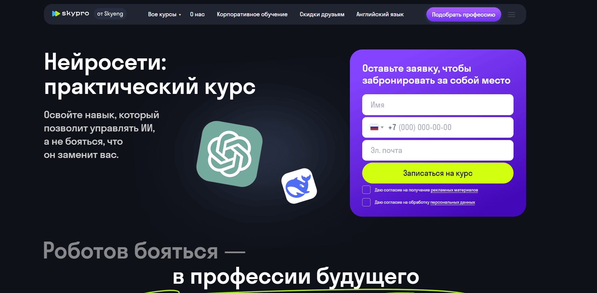
- ✅ Официальный сайт: sky.pro
- 💸 Цена: уточняется на официальном сайте
- 💳 Рассрочка: доступна, есть возможность оплаты после трудоустройства
- 📚 Формат: видеоуроки, практические задания, тесты, работа с ИИ-помощниками
- ⏳ Продолжительность: уроки открываются по расписанию
- 📜 Документ: сертификат о прохождении обучения
- 📝 Трудоустройство: поддержка кураторов и помощь карьерного центра
- 🔷 Для кого подходит курс: фрилансерам, специалистам разных сфер, дизайнерам, креативным работникам
Особенности:
Программа ориентирована на практическое применение искусственных интеллектов и популярных нейросетей. С первого занятия студенты работают над реальными задачами без лишней теории. Участники получают бесплатный доступ к ИИ-инструментам, что позволяет создавать тексты, изображения и видео за минуты. Курс помогает освоить инструменты генеративных ИИ и применять их в профессиональной деятельности. В каждый урок встроен ИИ-ассистент, который отвечает на вопросы прямо во время обучения. Благодаря поддержке наставников и кураторов обучение становится максимально эффективным. После прохождения обучения студенты осваивают базовые навыки и практические кейсы, которые можно внедрить в работу сразу. Курс подходит тем, кто хочет освоить основы машинного обучения и использование нейросетей для решения задач в работе.
Чему учатся студенты:
- Использовать готовых нейроассистентов и сервисы ИИ
- Автоматизировать рабочие процессы с помощью нейросети
- Создавать тексты, изображения и видео с помощью искусственного интеллекта
- Применять алгоритмы машинного обучения в повседневных задачах
- Научиться эффективно использовать современные инструменты генерации контента
Преподаватели:
- Сергей Давыдов — руководитель платформы Skypro, внедрил систему нейронаставников
- Мария Миллер — графический дизайнер и иллюстратор с опытом более 6 лет, эксперт по внедрению ИИ-инструментов
- Ираклий Кикалишвили — экс-операционный директор Skypro, разработал продукт на базе ИИ с прибылью более 1,5 млн рублей в месяц
Преимущества:
- Практическое обучение с первого занятия
- Бесплатный доступ к инструментам искусственного интеллекта
- Поддержка наставников, кураторов и встроенных ИИ-помощников
- Освоите базовые навыки и сможете применять ИИ в реальных проектах
- Возможность автоматизировать задачи и экономить время
- Формат обучения подходит для совмещения с работой
Отзывы учеников:
Студенты Skypro отмечают практическую направленность курса и удобный график обучения. Многие пишут, что задания помогают закрепить знания и научиться применять ИИ в работе. Положительно оценивают поддержку кураторов и простоту объяснения сложных тем. Отмечают, что после курса реально использовать ИИ-инструменты для автоматизации задач и создания качественного контента.
Перейти на официальный сайт курса3. 🏆 Курс Искусственный интеллект — Skillbox
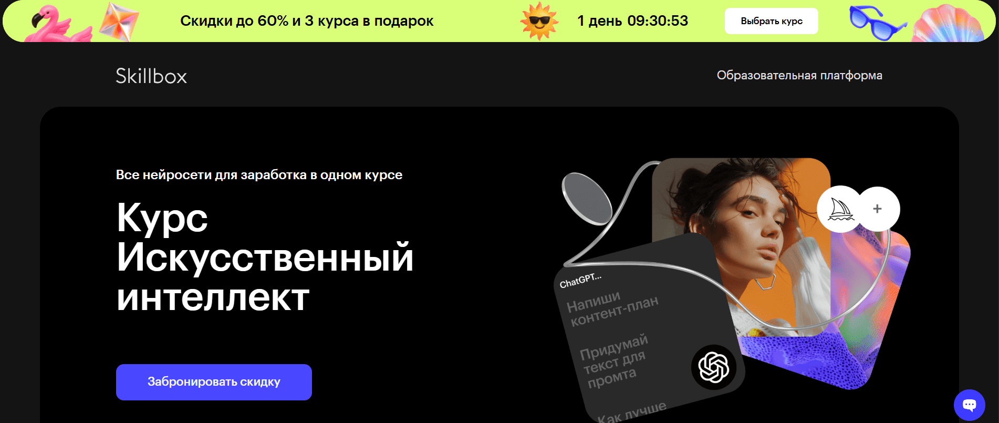- ✅ Официальный сайт: skillbox.ru
- 💸 Цена обучения: 69 804 ₽, со скидкой 50%.
- 💳 Рассрочка: доступна от 5 817 ₽/мес до 12 месяцев без переплаты.
- 📚 Формат: онлайн-уроки, практические задания, кейсы, тесты, консультации.
- ⏳ Продолжительность: 3 месяца.
- 📜 Документ: сертификат установленного образца, лицензия №Л035−1 298−77/179 609.
- 📝 Трудоустройство: поддержка в трудоустройстве, акция «Поможем найти работу или вернём деньги».
- 🔷 Для кого подходит курс: для дизайнеров, маркетологов, копирайтеров, предпринимателей, IT-специалистов и новичков без опыта.
Особенности:
Обучение построено на практике: более 120 уроков и 25 кейсов позволяют студентам сразу применять знания в реальных задачах. Программа охватывает работу с популярными нейросетями для создания текстов, изображений, видео и аудио. Студенты научатся использовать искусственные интеллекты без навыков программирования, осваивая инструменты для автоматизации процессов, генерации контента и анализа данных. Каждый месяц материалы обновляются, что гарантирует актуальные знания о моделях машинного обучения. Образовательная платформа предоставляет доступ в сообщество специалистов и экспертов, где можно обмениваться опытом. Студенты смогут освоить основы машинного обучения и применения нейронных сетей в разных сферах, что открывает возможность внедрения ИИ в любые рабочие процессы.
Чему учатся студенты:
- Эффективному использованию ChatGPT и текстовых моделей
- Генерации изображений в Midjourney, DALL·E 3 и Stable Diffusion
- Созданию видео и аудио с помощью Luma, Runway, HeyGen, Suno
- Применению алгоритмов машинного обучения в реальных кейсах
- Автоматизации рутинных задач и оптимизации рабочих процессов
- Созданию презентаций, сайтов и уникального визуального контента
Преподаватели:
- Александр Доброкотов — креативный директор DADA AGENCY, автор канала Ai molodca, эксперт по нейросетям
- Александр Жадан — продакт-менеджер проектов с использованием нейросетей
- Артемий Калинин — дизайнер в команде Phygital+
Преимущества:
- Актуальная программа с обновлением каждый месяц
- Доступ в нейрокомьюнити для обмена опытом
- Применение знаний на реальных проектах
- Более 190 готовых промптов для любых задач
- Поддержка экспертов и помощь кураторов
- Гибкий график без дедлайнов
- Возможность совмещения с работой и учебой
Отзывы учеников:
По данным опроса, 93% студентов довольны прохождением обучения. Чаще всего отмечают удобный график занятий, практическую пользу заданий и доступность преподавателей. Многие студенты подчеркивают, что курс помогает освоить базовые навыки работы с ИИ и получить реальные результаты в маркетинге, дизайне и IT.
Перейти на официальный сайт курса4. Нейросети. Практический курс – Skillbox
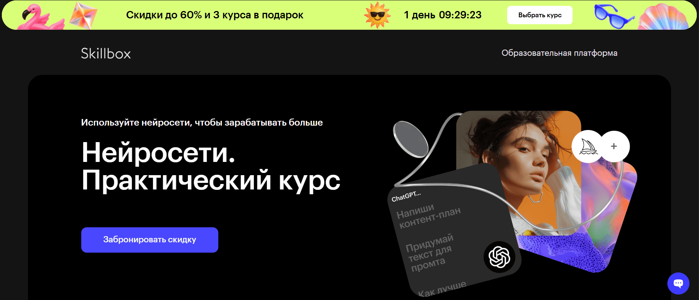- ✅ Официальный сайт: skillbox.ru
- 💸 Цена: 69 804 ₽ со скидкой 50% (139 605 ₽ без скидки).
- 💳 Рассрочка: 5 817 ₽/мес на 12 месяцев без переплат.
- 📚 Формат: видеоуроки, практические задания, тесты, проекты, чат с экспертами.
- ⏳ Продолжительность: 3 месяца.
- 📜 Документ: сертификат установленного образца (гослицензия №Л035−1 298−77/179 609).
- 📝 Трудоустройство: действует гарантия «Поможем найти работу или вернем деньги».
- 🔷 Для кого подходит курс: для дизайнеров, маркетологов, IT-специалистов, предпринимателей и всех, кто хочет освоить искусственные интеллекты для решения задач.
Особенности:
Обучение построено на практических кейсах с использованием популярных нейросетей: ChatGPT, Midjourney, Stable Diffusion, DALL·E 3, Suno и других. Студенты проходят обучение с поддержкой кураторов и получают доступ в профессиональное сообщество. Программа регулярно обновляется, включая новейшие алгоритмы машинного обучения и генеративные модели. Участники научатся автоматизировать задачи бизнеса, создавать контент, работать с текстовыми моделями и графической нейросетью. После прохождения обучения можно внедрить ИИ в реальных проектах и получить конкурентное преимущество на рынке труда. Практика ориентирована на реальные примеры использования искусственного интеллекта в маркетинге, дизайне, IT и аналитике данных.
Чему учатся студенты:
- Научишься применять ChatGPT для генерации текстов, кода и автоматизации процессов
- Сможешь освоить базовые и продвинутые инструменты Midjourney и Stable Diffusion для генерации изображений
- Изучишь основы машинного обучения и применение нейронных сетей в разных задачах
- Получишь практические навыки генерации видео и аудио с помощью Luma, Kling и Suno
- Сможешь решать реальные задачи бизнеса, создавая контент, презентации и автоматизируя рабочие процессы
Преподаватели:
- Александр Доброкотов — креативный директор DADA AGENCY, автор канала Ai molodca, эксперт по нейросетям
- Александр Жадан — продакт-менеджер проектов с использованием искусственного интеллекта
- Артемий Калинин — дизайнер в команде нейросети Phygital+
Преимущества:
- Доступ к 20 топ-нейросетям в одном курсе
- Программа включает 120+ уроков и 25+ практических кейсов
- Обновление материалов каждый месяц
- Добавление в портфолио 10 готовых проектов
- Поддержка экспертов и возможность общения с преподавателями в чате
- Рассрочка на обучение и акции «Учись сейчас — плати потом»
Отзывы учеников:
Выпускники отмечают, что курс помогает освоить основы нейронных сетей и научиться создавать уникальные тексты, изображения и видео. 93% студентов считают обучение полезным для карьеры, а 78% рекомендуют платформу друзьям и коллегам. Чаще всего выделяют практические задания, поддержку преподавателей и возможность сразу внедрять ИИ в работу.
Перейти на официальный сайт курса5. ChatGPT: практический курс — Skillbox
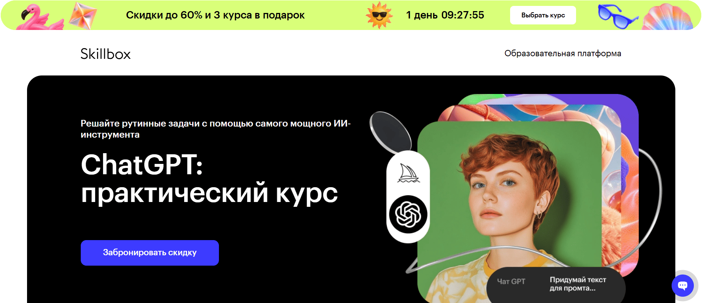- ✅ Официальный сайт: skillbox.ru
- 💸 Цена обучения: 45 984 ₽ - со скидкой 50%.
- 💳 Рассрочка: доступна от 3 832 ₽/мес на 12 месяцев.
- 📚 Формат: онлайн-уроки, практические задания, кейсы, консультации с экспертами, чат с преподавателями.
- ⏳ Продолжительность: 2 месяца.
- 📜 Документ: сертификат установленного образца, лицензия №Л035−1 298−77/179 609.
- 📝 Трудоустройство: поддержка в поиске работы, возможность убедить работодателя оплатить курс.
- 🔷 Для кого подходит курс: копирайтерам, программистам, маркетологам, предпринимателям, врачам, HR-специалистам, юристам и всем, кто работает с информацией.
Особенности:
Программа создана для тех, кто хочет освоить навыки работы с искусственными интеллектами и получить практический опыт на реальных кейсах. Студенты изучают популярные нейросети, включая ChatGPT, Perplexity, Gamma и Claude, и применяют их для текстов, кода, презентаций и анализа данных. В рамках прохождения обучения акцент сделан на практическом применении инструментов, автоматизации процессов и генерации контента. Каждую неделю в курс добавляются новые материалы и инструкции по современным технологиям, что позволяет быть в курсе последних обновлений. Вы научитесь создавать тексты, автоматизировать задачи, разрабатывать решения с помощью машинного обучения и внедрять ИИ в рабочие процессы. Программа помогает освоить базовые знания и методы машинного обучения без сложных теорий, но с акцентом на реальных проектах. Участники получают доступ к чату со спикерами и комьюнити, где можно обмениваться опытом и примерами использования ИИ в разных сферах.
Чему учатся студенты:
- Эффективному использованию ChatGPT и других нейросетей
- Созданию текстов, презентаций и сценариев
- Генерации изображений и визуального контента
- Автоматизации рутинных задач с помощью ИИ
- Работе с кодом и исправлению ошибок в программировании
- Монетизации навыков работы с искусственным интеллектом
Преподаватели:
- Александр Доброкотов — креативный директор DADA AGENCY, автор канала Ai molodca, эксперт по нейросетям
- Александр Жадан — продакт-менеджер проектов с использованием ИИ
- Артемий Калинин — дизайнер в команде Phygital+
Преимущества:
- Обучение строится на практических проектах и заданиях
- Доступ к сообществу специалистов по нейросетям
- Регулярное обновление материалов с новыми инструментами
- Гибкий график обучения, удобный для совмещения с работой
- Возможность получить налоговый вычет за обучение
- Поддержка экспертов и помощь в решении задач
Отзывы учеников:
Студенты отмечают, что курс помогает научиться применять ИИ в реальных проектах и оптимизировать рабочие процессы. Среди плюсов чаще всего выделяют практические кейсы, поддержку преподавателей и актуальность знаний. 93% выпускников подтверждают, что обучение помогло достичь целей, а 78% рекомендуют курс коллегам.
Перейти на официальный сайт курса6. Нейросети для каждого: как решать рабочие задачи быстрее – Нетология
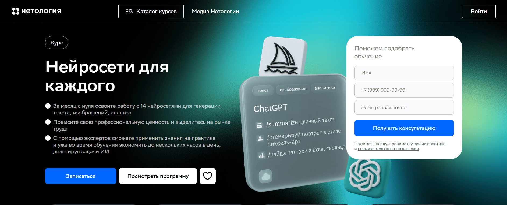- ✅ Официальный сайт: netology.ru
- 💸 Цена: от 61 000 ₽ (со скидкой 40%)
- 💳 Рассрочка: от 2 673 ₽/мес до 24 месяцев без переплат, есть вариант оплаты одним платежом со скидкой 5%
- 📚 Формат: видеолекции, вебинары, домашние задания, тесты, лонгриды, практические проекты, библиотека промптов
- ⏳ Продолжительность: 4 недели (8–10 часов в неделю)
- 📜 Документ: удостоверение о повышении квалификации
- 📝 Трудоустройство: сертификат можно добавить в резюме, предусмотрена поддержка экспертов
- 🔷 Для кого подходит курс: новичкам, специалистам по маркетингу, дизайну, копирайтингу, управленцам и предпринимателям
Особенности:
Программа обучения сфокусирована на практическом применении искусственного интеллекта в реальных задачах. Студенты за месяц научатся работать с 14 популярными нейросетями, включая ChatGPT и Midjourney. Курс помогает освоить инструменты без необходимости владеть сложными навыками программирования, что делает его доступным широкому кругу специалистов. Занятия построены в формате онлайн, поэтому вы сможете учиться в любом удобном месте и совмещать обучение с работой. В рамках программы уделяется внимание алгоритмам машинного обучения, генерации текстового контента и созданию изображений. Участники получают пакет промптов и полезные материалы для оптимизации рабочих процессов. Дополнительно даются советы по безопасному использованию ИИ. Уже в процессе обучения слушатели смогут делегировать рутинные задачи нейронным сетям и экономить несколько часов ежедневно.
Чему учатся студенты:
- Писать эффективные промпты для генеративных ИИ
- Создавать тексты и маркетинговый контент с помощью ChatGPT
- Генерировать изображения и прототипы с Midjourney
- Применять нейросети для анализа данных и автоматизации задач
- Создавать видео и аудиоконтент с помощью специализированных инструментов
- Разбираться в моделях машинного обучения и принципах работы нейронных сетей
Преподаватели:
- Анна Свирщевская — продуктовый исследователь, упрощает сложные процессы в ИИ и ускоряет разработку IT-продуктов
- Нина Мазур — IT-предприниматель, коммерческий директор студии разработчиков, внедряет ИИ в бизнес
- Артём Денисов — исследователь XR и ИИ, изучает компьютерное зрение и автоматизацию процессов
Преимущества:
- Можно освоить базовые навыки работы с нейросетями за месяц
- Знания применяются сразу на реальных примерах и практических заданиях
- Бонусы: библиотека готовых промптов и гайд по безопасности
- Гибкий график обучения — вечером и в удобное время онлайн
- Поддержка кураторов и экспертов на протяжении всего курса
- Скидки и рассрочка без переплат делают курс доступным
Отзывы учеников:
Выпускники отмечают насыщенность программы, современный подход и полезность практических заданий. Многие подчеркивают, что обучение помогает быстрее решать рабочие задачи, автоматизировать процессы и создавать качественный контент без лишних затрат времени.
Перейти на официальный сайт курса7. Нейросети для жизни: как повысить личную эффективность — Нетология
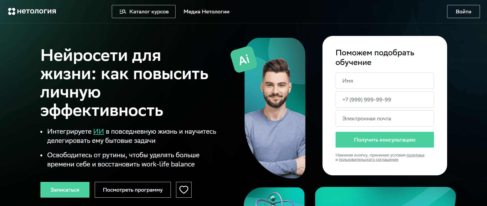- ✅ Официальный сайт: netology.ru
- 💸 Цена: уточняется на сайте, возможны скидки и акции.
- 💳 Рассрочка: доступна, включая оплату частями.
- 📚 Формат: вебинары, лонгриды, практические задания и работа с кейсами.
- ⏳ Продолжительность: 14 дней.
- 📜 Документ: сертификат по завершении обучения.
- 📝 Трудоустройство: помогает внедрить ИИ в рабочие и личные процессы для повышения эффективности.
- 🔷 Для кого подходит курс: для тех, кто хочет научиться использовать нейросети в учебе, быту, хобби и творчестве, а также для тех, кто сомневается в возможностях искусственного интеллекта.
Особенности:
Программа строится на практическом применении искусственных интеллектов для повседневных задач. Студенты изучают основы машинного обучения, учатся писать эффективные запросы и адаптировать алгоритмы под личные цели. Курс помогает освоить инструменты популярных нейросетей и получить базовые навыки работы с ними без необходимости глубоких знаний программирования. Занятия включают реальные примеры применения ИИ, что делает обучение прикладным и полезным в любой сфере. Участники смогут интегрировать генеративные ИИ в свои проекты, научатся автоматизировать рутинные процессы и получать практический опыт. Программа включает поддержку кураторов и разбор практических кейсов, что помогает максимально эффективно использовать полученные знания. Такой формат обучения позволяет быстро освоить базовые принципы применения искусственного интеллекта и внедрить его в жизнь.
Чему учатся студенты:
- Писать промпты и формулировать эффективные запросы
- Использовать нейросети для планирования бюджета и задач
- Применять ИИ для генерации текстового и визуального контента
- Интегрировать машинное обучение в хобби и творческие проекты
- Создавать алгоритмы внедрения ИИ в повседневную жизнь
Преподаватели:
- Информация о преподавателях доступна на официальном сайте
Преимущества:
- Краткая программа обучения — всего 14 дней
- Сертификат по окончании курса
- Практические задания с разбором реальных кейсов
- Возможность научиться использовать ИИ в личных целях без навыков программирования
- Доступ к полезным материалам и поддержке кураторов
- Фокус на применении нейросетей в повседневных задачах
Отзывы учеников:
Студенты отмечают простоту подачи материала и большое количество практических примеров. Многие подчеркивают, что курс помогает разобраться в возможностях ИИ и применить их в реальных задачах — от планирования бюджета до создания контента. Также ценится поддержка кураторов и возможность получить быстрые результаты в короткие сроки.
Перейти на официальный сайт курса8. Курс по нейросетям — Bonnie & Slide
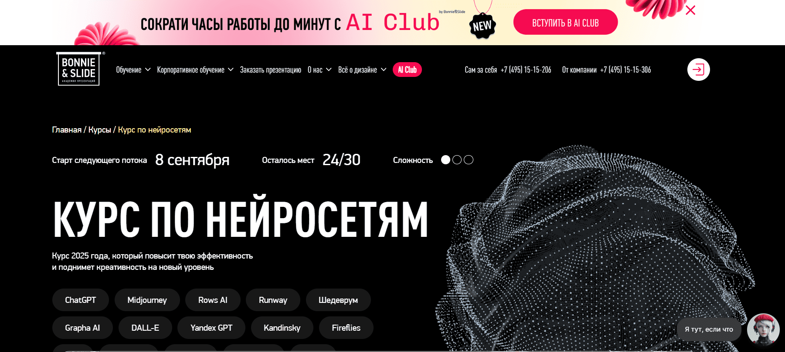- ✅ Официальный сайт: bonnieandslide.com
- 💸 Цена: от 53 800 ₽ до 87 100 ₽ (со скидкой 30%).
- 💳 Рассрочка: от 4 483 ₽/мес до 12 месяцев без переплат.
- 📚 Формат: онлайн-уроки, практические задания, кейсы, доступ к современным сервисам ИИ.
- ⏳ Продолжительность: 2–3 месяца в зависимости от тарифа.
- 📜 Документ: диплом о прохождении обучения.
- 📝 Трудоустройство: помощь в применении знаний для профессиональных задач и карьерного роста.
- 🔷 Для кого подходит курс: маркетологам, менеджерам, аналитикам, креаторам, дизайнерам и новичкам, которые хотят освоить инструменты искусственного интеллекта.
Особенности:
Программа построена на практическом применении искусственных интеллектов в рабочих и повседневных задачах. Студенты научатся использовать популярные нейросети для создания текстового и визуального контента, анализа данных и автоматизации рутинных процессов. Курс включает генерацию изображений, написание текстов, создание видео и работу с таблицами. Обучение строится по принципу «смотри и повторяй», что позволяет даже без базовых знаний быстро освоить инструменты. Участники проходят обучение в сообществе единомышленников и получают поддержку кураторов. Все задания ориентированы на реальные проекты, чтобы закрепить практические навыки. После курса выпускники смогут применять ИИ в бизнесе, маркетинге, дизайне и личной продуктивности.
Чему учатся студенты:
- Работать с ChatGPT, Midjourney, DALL-E, Yandex GPT и другими сервисами
- Анализировать данные и находить ошибки с помощью Rows AI и Grapha AI
- Создавать тексты, изображения и видео с использованием нейросетей
- Автоматизировать задачи в маркетинге и менеджменте
- Использовать алгоритмы машинного обучения для решения рабочих задач
Преподаватели:
- Кристина Заболоцкая — эксперт в сфере ИИ, CEO Wetalent.AI, спикер и автор статей. Более 10 лет в финансах и инвестициях, победитель Intema и McKinsey Achievement Award.
Преимущества:
- Обучение основано на практических заданиях и реальных кейсах
- Возможность освоить навыки без опыта программирования
- Помощь кураторов и поддержка комьюнити
- Гибкие тарифы и доступная рассрочка
- Регулярные потоки, старт каждые две недели
- Фокус на практическом применении ИИ для бизнеса и личных задач
Отзывы учеников:
Студенты отмечают высокое качество преподавания, доступность материалов и оперативную помощь кураторов. Отзывы подчеркивают ценность практических упражнений, индивидуальный подход и удобный график обучения. Многие выпускники отмечают экономию времени в работе и возможность внедрить искусственный интеллект в повседневные задачи.
Перейти на официальный сайт курса9. Онлайн-курс «Работа с нейросетями» – Бруноям
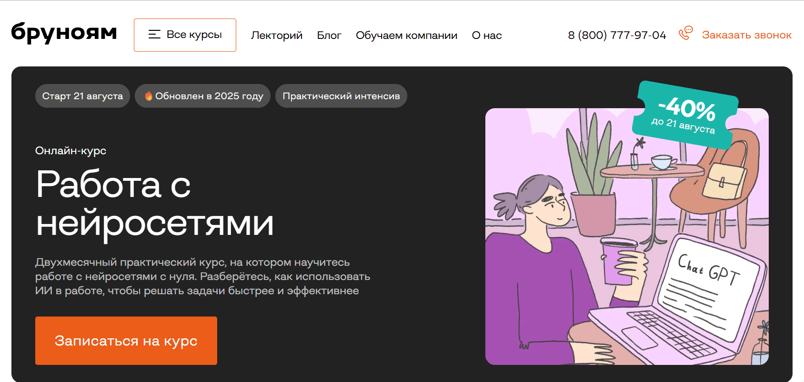- ✅ Официальный сайт: brunoyam.com
- 💸 Цена: 19 900 ₽ (33 500 ₽ без скидки).
- 💳 Рассрочка: доступна на 12 месяцев, от 1 658 ₽/мес без процентов. Оплата возможна от юрлица.
- 📚 Формат: онлайн-занятия, видеоуроки, практические задания, проекты, чат с наставником и поддержкой.
- ⏳ Продолжительность: 2 месяца.
- 📜 Документ: сертификат от Бруноям.
- 📝 Трудоустройство: знания помогают использовать ИИ в реальных задачах и повышают конкурентоспособность.
- 🔷 Для кого подходит курс: для новичков, которые хотят освоить базовые навыки применения искусственного интеллекта, а также для специалистов, желающих внедрить ИИ в рабочие процессы.
Особенности:
Программа обновлена в 2025 году и включает только актуальные знания. В обучении используется подход 15% теории и 85% практики: студенты выполняют реальные проекты, создают контент с помощью ИИ и осваивают популярные нейросети. Занятия проходят в удобном формате с поддержкой наставников, которые дают обратную связь в течение 24 часов. Курс помогает освоить инструменты машинного обучения, научиться создавать тексты и изображения, а также автоматизировать рабочие процессы. Доступ к материалам открыт онлайн, а обучение можно совмещать с учебой или работой. Участники получают практические навыки и знакомятся с примерами применения ИИ в разных сферах. Все задания построены так, чтобы студент научился применять знания в реальных задачах и смог использовать ИИ максимально эффективно.
Чему учатся студенты:
- Использовать ChatGPT, DALL·E, MidJourney, Kandinsky, PromeAI, Runway
- Создавать тексты, изображения, видео и визуальный контент
- Формировать эффективные запросы для генеративных моделей
- Автоматизировать задачи и процессы с помощью ИИ
- Применять алгоритмы машинного обучения для анализа данных
- Осваивать практические навыки работы с нейронными сетями
Преподаватели:
- Дмитрий Васильев — директор отдела маркетинга и PR
- Анна Абрамова — специалист в области интеллектуальных систем
- Оксана Никонова — менеджер по обучению в компании «Петрович»
Преимущества:
- 85% программы занимает практика на реальных проектах
- Поддержка личного наставника и команды специалистов
- Регулярное обновление уроков каждые 3 месяца
- Гарантия возврата оплаты в течение месяца
- Сертификат Бруноям, который можно добавить в резюме
- Гибкий график и удобная образовательная платформа
Отзывы учеников:
Студенты отмечают удобный формат занятий, много практических заданий и доступное объяснение сложных тем. Пользователи хвалят поддержку наставников и возможность сразу применять знания в рабочих задачах. Особенно ценят генерацию изображений и текстов, а также практику на реальных кейсах. Курс помогает понять возможности ИИ и уверенно использовать его в профессиональной сфере.
Перейти на официальный сайт курса10. Онлайн-курс ChatGPT с нуля — Бруноям
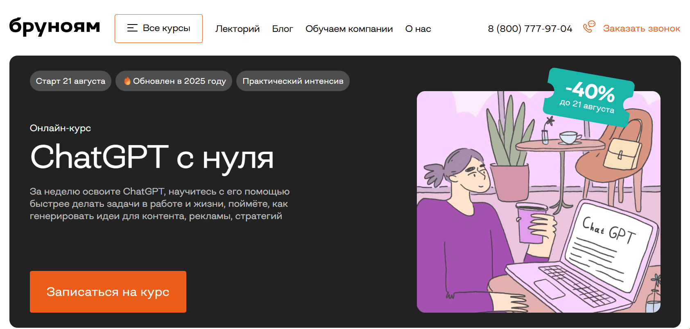- ✅ Официальный сайт: brunoyam.com
- 💸 Цена: 9 900 ₽ (16 500 ₽ без скидки).
- 💳 Рассрочка: доступна от 825 ₽/мес, через Тинькофф и Сбербанк без переплат.
- 📚 Формат: онлайн-занятия, видеоуроки, практические задания, чат с наставником.
- ⏳ Продолжительность: 1 неделя.
- 📜 Документ: сертификат Бруноям, который можно добавить в резюме.
- 📝 Трудоустройство: формирование портфолио и помощь в позиционировании на рынке труда.
- 🔷 Для кого подходит курс: специалисты из digital-сферы, предприниматели, копирайтеры, маркетологи и все, кто хочет быстрее выполнять задачи с помощью ИИ.
Особенности:
Курс дает возможность освоить инструменты искусственного интеллекта за короткий срок и на практике научиться использовать их в рабочих и личных задачах. Программа обновлена в 2025 году и пересматривается каждые 3 месяца, что гарантирует актуальность знаний. Обучение строится вокруг практических кейсов, чтобы сразу применять ИИ для генерации текстового и визуального контента. Студенты работают с промптами, учатся формировать эффективные запросы и анализировать полученные ответы. Личный наставник помогает пройти обучение и дает обратную связь по заданиям в течение суток. Формат курса позволяет учиться в любом удобном месте и совмещать занятия с работой. Доступ к материалам остается навсегда, а поддержка специалистов не ограничена по времени.
Чему учатся студенты:
- Применению нейросетей и алгоритмов машинного обучения
- Составлению и оптимизации промпт-запросов
- Созданию текстов, сценариев и стратегий с помощью ChatGPT
- Генерации изображений и визуального контента
- Работе с платными функциями и библиотеками запросов
- Освоению базовых знаний о нейронных сетях и их применении
Преподаватели:
- Анна Абрамова — специалист в области интеллектуальных систем
- Оксана Никонова — менеджер по обучению в компании «Петрович»
Преимущества:
- 85% обучения занимает практика на реальных проектах
- Поддержка личного наставника без ограничений
- Актуальные знания о применении искусственного интеллекта
- Гарантия возврата денег в течение месяца после оплаты
- Возможность налогового вычета 13% от стоимости обучения
- Гибкий график обучения и доступ к курсу навсегда
Отзывы учеников:
Студенты отмечают структурированность программы, компетентность преподавателей и ценность практических заданий. Многие подчеркивают, что после прохождения обучения начали быстрее решать рабочие задачи и создавать уникальный контент. Особенно выделяют удобный формат обучения, постоянную поддержку наставников и возможность применять навыки в реальных проектах.
Перейти на официальный сайт курса11. ИИ: нейросети для увеличения дохода — Компьютерная Академия Топ
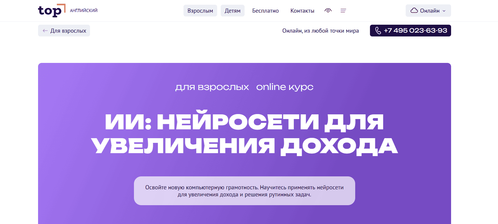- ✅ Официальный сайт: online.top-academy.ru
- 💸 Цена обучения: от 28 200 ₽.
- 💳 Рассрочка: доступна от 4 700 ₽ в месяц, возможна оплата по частям.
- 📚 Формат: онлайн-занятия, практические задания, проекты, консультации с преподавателями.
- ⏳ Продолжительность: 6 месяцев, 192 академических часа.
- 📜 Документ: международный сертификат на русском и английском языках.
- 📝 Трудоустройство: помощь в поиске работы, рекомендации, поддержка карьерного развития.
- 🔷 Для кого подходит курс: для взрослых, начинающих в сфере искусственного интеллекта, желающих освоить практические навыки и применять нейросети в работе.
Особенности:
Программа построена на практических заданиях и дает возможность изучать популярные нейросети и их применение в бизнесе и повседневных задачах. Студенты научатся работать с генерацией изображений, текстов и видео, а также освоят навыки программирования с использованием искусственного интеллекта. Учеба строится на примерах из реальных проектов, что позволяет быстрее внедрить ИИ в работу. Академия поддерживает студентов обратной связью, а лучшие выпускники получают предложения о трудоустройстве. Программа разработана выпускником Гарвардского университета и постоянно обновляется с учетом требований рынка. Учебный процесс сочетает теорию и практику, обеспечивая полезные знания для специалистов разных сфер.
Чему учатся студенты:
- Создавать и редактировать тексты с помощью языковых моделей
- Использовать генеративные ИИ для создания изображений и видео
- Автоматизировать задачи и процессы с помощью API
- Применять алгоритмы машинного обучения для анализа данных
- Работать с ChatGPT, Midjourney и другими инструментами
- Разрабатывать сайты и автоматизировать действия с помощью ИИ
Преподаватели:
- Евгений Абумов — преподаватель, автор программы курса, выпускник Harvard University по направлению Machine Learning, спикер образовательных мероприятий в Сколково.
Преимущества:
- Обучение с нуля с поддержкой преподавателей
- 80% практических занятий и проектов в портфолио
- Возможность освоить востребованные навыки программирования и применения нейросетей
- Международный сертификат по окончании обучения
- Доступ к современным инструментам ИИ и реальным кейсам
- Гибкий график занятий онлайн
Отзывы учеников:
Студенты отмечают простое объяснение сложных тем, большое количество практики и проектов, которые помогают быстро освоить инструменты ИИ. Чаще всего выделяют поддержку преподавателей и реальную пользу для трудоустройства. Многие подчеркивают, что курс помог внедрить искусственный интеллект в рабочие процессы и увеличить доход.
Перейти на официальный сайт курса12. Искусственный интеллект для жизни: от первых шагов — Компьютерная Академия Топ
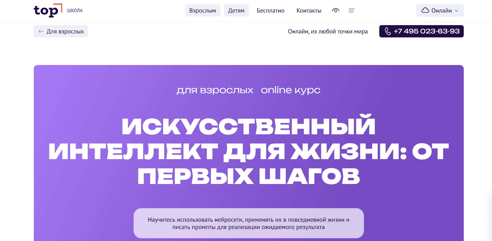- ✅ Официальный сайт: online.top-academy.ru
- 💸 Цена обучения: от 22 020 ₽.
- 💳 Рассрочка: доступна от 3 670 ₽ в месяц для онлайн- и очной формы.
- 📚 Формат: онлайн-уроки с преподавателем, самостоятельные занятия, практические задания, кейсы и итоговый проект.
- ⏳ Продолжительность: 6 месяцев (192 ак. часа с преподавателем и 192 ак. часа самостоятельно).
- 📜 Документ: международный сертификат на русском и английском языках.
- 📝 Трудоустройство: лучших студентов приглашают в компании-партнеры, выпускники успешно работают в IT и смежных сферах.
- 🔷 Для кого подходит курс: программистам, студентам IT-специальностей и специалистам других профессий, желающим освоить применение нейросетей и автоматизировать задачи.
Особенности:
Обучение проходит онлайн, что позволяет заниматься из любой точки мира. Программа включает живые уроки с преподавателями и практические проекты, благодаря чему студенты получают реальные навыки работы с популярными нейросетями. Слушатели учатся автоматизировать процессы, анализировать данные и создавать качественный контент. Академия использует современные инструменты и сервисы, включая ChatGPT, Midjourney, Perplexity AI и другие. Знания применимы в профессиях, связанных с IT, маркетингом, HR и бизнес-аналитикой. После прохождения обучения выпускники получают сертификат международного образца, подтверждающий их компетенции. Стоимость обучения доступна, а рассрочка делает курс еще удобнее. Компьютерная Академия Топ является номинантом «Бренд Года 2025», что подтверждает высокое качество образования.
Чему учатся студенты:
- Работать с генеративными моделями: создавать тексты, изображения, видео и аудио
- Автоматизировать задачи в Excel, Notion и через платформы Zapier и Make
- Использовать алгоритмы машинного обучения для анализа данных и прогнозирования трендов
- Внедрять искусственные интеллекты в маркетинг, продажи, HR и образование
- Разрабатывать собственные проекты с применением нейросетей
Преподаватели:
- Трофимова Маргарита — опыт преподавания 5 лет, автор проектов по автоматизации и разработке сервисов
- Савинов Виктор — основатель компании по автоматизации бизнеса, архитектор систем
- Евгений Абумов — выпускник Harvard University, специалист по машинному обучению, спикер Сколково
- Евгений Зенцов — разработчик Qt/С++ Embedded, победитель конкурса A:СТАРТ 2020
- София Мещерякова — дизайнер, фотограф, опыт работы более 7 лет
- Анна Скрипченко — дизайнер-проектировщик, преподаватель курсов по дизайну и графике
Преимущества:
- Обучение строится на реальных примерах и практических кейсах
- Поддержка преподавателей и обратная связь на каждом этапе
- Доступ к современным инструментам и сервисам ИИ
- Сертификат международного образца после окончания курса
- Гибкий график занятий и возможность совмещать обучение с работой
- Высокая востребованность выпускников на рынке труда
Отзывы учеников:
Студенты отмечают понятную подачу материала и большое количество практики. Чаще всего в отзывах хвалят опытных преподавателей, удобный онлайн-формат и возможность сразу применять знания в рабочих задачах. Также многие выделяют, что после прохождения курса легче автоматизировать рутинные процессы и создавать качественный контент с помощью нейросетей.
Перейти на официальный сайт курса13. Нейросети как инструмент повышения личной и профессиональной эффективности — Национальная академия дополнительного профессионального образования
- ✅ Официальный сайт: nadpo.ru
- 💸 Цена: 35 500 ₽ (44 400 ₽ без скидки, действует акция -20%).
- 💳 Рассрочка: 0%, от 2 958 ₽ в месяц.
- 📚 Формат: дистанционное обучение, видеолекции, практические задания, тесты, доступ к библиотекам ЛитРес и Библиоклуб.
- ⏳ Продолжительность: 2 месяца (108 часов).
- 📜 Документ: удостоверение о повышении квалификации государственного образца (вносится в ФИС ФРДО).
- 📝 Трудоустройство: возможность начать частную практику, работать в стартапах, бизнесе или онлайн.
- 🔷 Для кого подходит курс: для новичков, желающих освоить базовые знания о нейросетях, и специалистов, которые хотят эффективно использовать ИИ в работе и жизни.
Особенности:
Программа направлена на практическое освоение инструментов искусственного интеллекта и нейронных сетей. Обучение строится на разборе реальных кейсов и практических заданий, что помогает быстро внедрить навыки в работу. Студенты изучают генерацию текстового контента, работу с визуальными нейросетями и алгоритмами машинного обучения. Программа подходит как для тех, кто хочет научиться использовать ИИ для оптимизации повседневных задач, так и для специалистов, стремящихся повысить свою конкурентоспособность. Обучение доступно онлайн, с поддержкой кураторов и возможностью совмещать с рабочим графиком. Курсы включают полезные материалы, которые помогут эффективно использовать нейросети для автоматизации процессов и создания контента.
Чему учатся студенты:
- Формулировать эффективные запросы для ChatGPT и других популярных нейросетей
- Освоить инструменты генерации изображений в Midjourney, Kandinsky, Stable Diffusion
- Применять ИИ для анализа данных и автоматизации задач в Excel и Google Таблицах
- Создавать тексты, изображения и видео с помощью нейронных сетей
- Научиться использовать генеративные модели для бизнеса и личных целей
- Освоить базовые навыки применения искусственного интеллекта в разных сферах
Преподаватели:
- Тарасов Сергей Васильевич — кандидат психологических наук, доцент, стаж работы с 2000 года
- Егорова Наталья Николаевна — кандидат психологических наук, 22 года научной и практической деятельности
- Челнокова Ирина Александровна — кандидат психологических наук, член Российской ассоциации КПТ, стаж с 2008 года
- Санжапова Эльмира Викторовна — кандидат педагогических наук, доцент, стаж работы с 2005 года
Преимущества:
- Входит в ТОП-3 онлайн-школ по соотношению цены и качества
- Официальное удостоверение в государственном реестре ФИС ФРДО
- Бесплатный доступ к библиотекам ЛитРес и Библиоклуб
- Гибкая система оплаты: рассрочка 0% и кешбэк
- Курс подходит для новичков без навыков программирования
- Возможность монетизировать знания уже во время прохождения обучения
Отзывы учеников:
Студенты отмечают, что курс помогает разобраться в сложных темах и сразу применять полученные знания на практике. Чаще всего выделяют доступность объяснений, удобный график обучения, поддержку преподавателей и пользу от практических заданий. Многие подчеркивают, что смогли освоить новые инструменты ИИ и внедрить их в работу.
Перейти на официальный сайт курса14. Онлайн-курсы AI-дизайна: нейросети для работы и творчества — Международная школа профессий
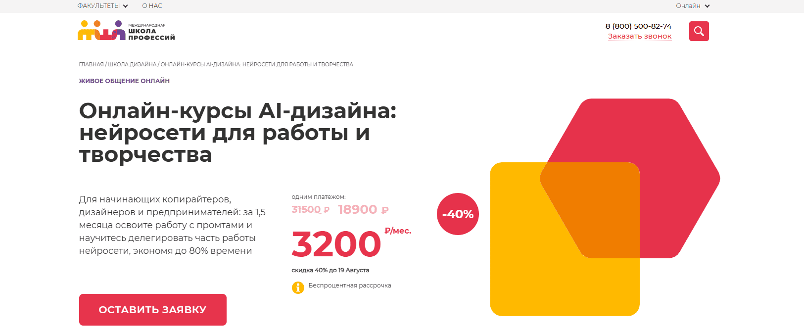- ✅ Официальный сайт: online.videoforme.ru
- 💸 Цена: 18 900 ₽ (скидка 40%, обычная цена 31 500 ₽).
- 💳 Рассрочка: доступна беспроцентная, от 3 200 ₽ в месяц.
- 📚 Формат: онлайн-занятия, практические задания, вебинары, записи уроков, интерактивные упражнения.
- ⏳ Продолжительность: 5 недель, 2 занятия в неделю, всего 15 часов обучения.
- 📜 Документ: персональный сертификат о прохождении курса.
- 📝 Трудоустройство: возможность монетизации навыков через создание изображений, текстов и рекламных материалов.
- 🔷 Для кого подходит курс: для дизайнеров, копирайтеров, предпринимателей и начинающих специалистов, которые хотят научиться работать с искусственным интеллектом.
Особенности:
Программа помогает освоить базовые навыки работы с искусственными интеллектами и популярными нейросетями, которые применяют в бизнесе и творчестве. Курс подходит тем, кто хочет изучать нейросети без навыков программирования и уже на практике научиться использовать их для решения реальных задач. Обучение строится вокруг практических кейсов, чтобы студенты научились создавать тексты, изображения и видео при помощи ИИ. Формат занятий позволяет совмещать учебу с работой и личными делами. В курс включены современные инструменты, такие как Midjourney, ChatGPT, Шедеврум, Кандинский. Студенты получают доступ к материалам на три месяца и поддержку кураторов. Возможна оплата с использованием социальных программ и налоговых льгот.
Чему учатся студенты:
- Изучать основы машинного обучения и применения нейросетей
- Научиться использовать текстовые модели для генерации контента
- Создавать изображения и анимации при помощи графической нейросети
- Освоить инструменты Midjourney и их ключевые параметры
- Применять ИИ для аналитики и прогнозов
- Научиться монетизировать навыки и использовать их в реальных проектах
Преподаватели:
- Виктор Виноградов — маркетолог, преподаватель Международной школы профессий, опыт более 12 лет, основатель веб-студии «Лаборатория» и сооснователь маркетингового агентства IQ Brand, более 600 реализованных проектов.
Преимущества:
- Возможность обучения онлайн с гибким графиком
- Сильный акцент на практическом применении знаний
- Работа с реальными проектами и практическими кейсами
- Поддержка наставников на каждом этапе
- Официальный сертификат после окончания обучения
- Доступ к материалам курса и записям занятий на 3 месяца
- Возможность бесплатного обучения по социальным программам
- Применение инструментов, которые используют разработчики искусственного интеллекта
Отзывы учеников:
Студенты отмечают простую подачу сложных тем и удобный график обучения. Чаще всего выделяют практические задания, которые помогают сразу научиться применять нейросети в работе. Также подчеркивают доступность материалов, поддержку кураторов и пользу для профессионального развития. Многие после прохождения курса успешно создают контент и зарабатывают на заказах в сфере дизайна и копирайтинга.
Перейти на официальный сайт курсаТОП-21 онлайн-курсов по нейросетям для Разработчиков
- 🏆 Курс по нейронным сетям — SkillFactory
- 🏆 Специалист по нейронным сетям — SkillFactory
- 🏆 Machine Learning и Deep Learning – Skillfactory
- Инженер по глубокому обучению нейросетей — АНО ДПО «Образовательные технологии Яндекса - Практикум»
- Специалист по Data Science — АНО ДПО «Образовательные технологии Яндекса - Практикум»
- Обработка естественного языка — NLP — АНО ДПО «Образовательные технологии Яндекса - Практикум»
- Нейросети для дизайна — АНО ДПО «Образовательные технологии Яндекса - Практикум»
- Компьютерное зрение - АНО ДПО «Образовательные технологии Яндекса - Практикум»
- Профессия Machine Learning Engineer – Skillbox
- Специалист по компьютерному зрению дронов и нейросетям — Skillbox
- Deep Learning – Нетология
- Нейросети для анализа данных — Нетология
- Компьютерное зрение — OTUS
- Компьютерное зрение. Advanced – OTUS
- Специализация Machine Learning — OTUS
- Deep Learning Engineer — KARPOV.COURSES
- Аналитика больших данных – KARPOV.COURSES
- Онлайн-курс Data Scientist с нуля — Школа Бруноям
- Специалист по интеграции искусственного интеллекта — GeekBrains
- Разработчик искусственного интеллекта – GeekBrains
- Искусственный интеллект и большие данные — Московский институт технологий и управления
Отличительные преимущества каждой дистанционной программы обучения по нейросетям для Разработчиков
| № | Курс и школа | Отличительные преимущества | |
|---|---|---|---|
| 🥇 | Курс по нейронным сетям — SkillFactory | 10 недель, акцент на практику с TensorFlow и Keras, хакатон, проекты для портфолио, помощь в трудоустройстве. | Перейти |
| 🥈 | Специалист по нейронным сетям — SkillFactory | 24 месяца, диплом о проф. переподготовке, карьерное сопровождение, стажировки, английский и soft skills. | Перейти |
| 🥉 | Machine Learning и Deep Learning — SkillFactory | 10–12 мес, Kaggle и хакатоны, участие в стажировках, поддержка наставников, реальные бизнес-кейсы. | Перейти |
| 4 | Инженер по глубокому обучению нейросетей — Яндекс Практикум | Выбор специализации CV/NLP, PyTorch, Transformers, проекты в портфолио, облачная инфраструктура. | Перейти |
| 5 | Специалист по Data Science — Яндекс Практикум | 13–17 мес, диплом, 17–22 проекта, YandexGPT модуль, гибкий график, карьерный трек до 6 мес. | Перейти |
| 6 | Обработка естественного языка — NLP — Яндекс Практикум | 2 мес, BERT, RoBERTa, LLaMA, RAG, 4 проекта, карьерная поддержка, воркшопы и YandexGPT-помощник. | Перейти |
| 7 | Нейросети для дизайна — Яндекс Практикум | 2 мес, KREA AI бесплатно, Midjourney и Stable Diffusion, генерация визуала и текста, портфолио проектов. | Перейти |
| 8 | Компьютерное зрение — Яндекс Практикум | 2 мес, PyTorch, YOLO, U-Net, CLIP, мультимодальные модели, 4 проекта в портфолио, налоговый вычет. | Перейти |
| 9 | Профессия Machine Learning Engineer — Skillbox | 12 мес, 3 проекта, Kaggle, гарантированное трудоустройство или возврат денег, доступ к обновлениям курса. | Перейти |
| 10 | Специалист по компьютерному зрению дронов и нейросетям — Skillbox | 8 мес, 3 курса в одном (Python, математика, CV), кейсы из индустрии, сертификат гос. образца, скидка 50%. | Перейти |
| 11 | Deep Learning — Нетология | 2,5 мес, удостоверение гос. образца, GAN, NLP и CV, мобильное приложение, доступ к материалам 3 года. | Перейти |
| 12 | Нейросети для анализа данных — Нетология | 2 мес, фокус на аналитике с AI, Jupyter Notebook, n8n-интеграции, ChatGPT/DeepSeek/Gemini, мобильное приложение. | Перейти |
| 13 | Компьютерное зрение — OTUS | 4 мес, PyTorch, OpenCV, HuggingFace, проекты для резюме, записи занятий навсегда, карьерные консультации. | Перейти |
| 14 | Компьютерное зрение. Advanced — OTUS | 4 мес, Vision Transformers, Diffusion, PyTorch 2.0, 3D CV, выпускной проект в портфолио, карьерная поддержка. | Перейти |
| 15 | Специализация Machine Learning — OTUS | 11 мес, диплом о проф. переподготовке, A/B-тесты, NLP и CV, портфолио проектов, доступ к материалам навсегда. | Перейти |
| 16 | Deep Learning Engineer — KARPOV.COURSES | 4–5 мес, проекты в NLP, CV и аудио, трансформеры, карьерное сопровождение, сертификат на 2 языках. | Перейти |
| 17 | Аналитика больших данных — KARPOV.COURSES | 2 года, диплом магистра ВШЭ, BI-системы, Spark, Python, академическая + практическая экспертиза, господдержка кредита. | Перейти |
| 18 | Онлайн-курс Data Scientist с нуля — Школа Бруноям | 8 мес, личный наставник без ограничений, проекты в портфолио, обновления уроков каждые 3 мес, карьерная поддержка. | Перейти |
| 19 | Специалист по интеграции искусственного интеллекта — GeekBrains | 6 мес, проекты стоимостью от 50 000 ₽ во время курса, генерация контента с ИИ, портфолио из 4–12 проектов. | Перейти |
| 20 | Разработчик искусственного интеллекта — GeekBrains | 12 мес, диплом гос. образца, Python, PyTorch, SQL, NLP и CV, гибкий график, гарантия помощи в трудоустройстве. | Перейти |
| 21 | Искусственный интеллект и большие данные — МИТУ | 3,5–4,5 года, диплом бакалавра гос. образца, Big Data, ML, генеративные модели, возможность поступления без ЕГЭ. | Перейти |
1. 🏆 Курс по нейронным сетям — SkillFactory
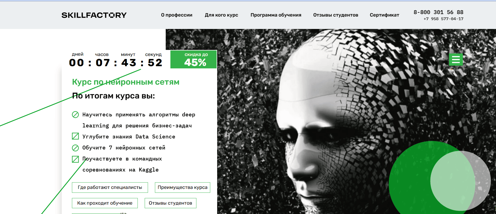- ✅ Официальный сайт: skillfactory.ru
- 💸 Цена обучения: от 38 511 ₽ со скидкой до 55%.
- 💳 Рассрочка: от 1 189 ₽/мес до 36 месяцев, первый платеж через месяц.
- 📚 Формат: онлайн-курсы, видеолекции, практические задания, тесты, командные соревнования на Kaggle, выпускной хакатон.
- ⏳ Продолжительность: 10 недель.
- 📜 Документ: сертификат о прохождении курса (на русском или английском языке).
- 📝 Трудоустройство: помощь в составлении портфолио, проекты в резюме, поддержка в поиске работы.
- 🔷 Для кого подходит курс: для специалистов Data Science, разработчиков с базовыми навыками машинного обучения и знаниями Python.
Особенности:
Программа обучения строится вокруг практического применения нейросетей для бизнеса. Студенты осваивают популярные библиотеки TensorFlow и Keras, изучают сверточные и рекуррентные модели. В ходе курса они научатся эффективно использовать искусственные интеллекты для анализа данных, распознавания изображений, работы с текстовыми моделями и построения рекомендательных систем. Особое внимание уделяется практическим кейсам: от построения кредитных скоринговых моделей до увеличения продаж в ритейле. Обучение проходит в удобном онлайне с поддержкой кураторов. Выпускники получают практический опыт и навыки программирования, востребованные на рынке.
Чему учатся студенты:
- Создавать нейросети для распознавания изображений и текстов
- Работать с алгоритмами машинного обучения и глубокого обучения
- Применять методы обработки естественного языка
- Разрабатывать рекомендательные системы
- Научиться использовать GPU-серверы для глубокого обучения
- Создавать проекты по генерации изображений и текстов с помощью нейросетей
Преподаватели:
- Андрей Зимовнов — старший разработчик в Яндекс.Дзен
- Дмитрий Коробченко — Deep Learning R&D Engineer, NVIDIA
Преимущества:
- Практические задания на реальных кейсах
- Доступ к современным инструментам и библиотекам
- Опыт участия в командных соревнованиях
- Поддержка экспертов и наставников на протяжении всего курса
- Гибкий график обучения в онлайн-формате
- Сертификат, подтверждающий профессиональные навыки
- Возможность освоить навыки уровня middle Data Scientist
Отзывы учеников:
Студенты отмечают доступность материала, практическую направленность и удобный график обучения. Многие выделяют поддержку кураторов, структурированную программу и возможность решать реальные задачи бизнеса. Особенно ценят проекты, которые можно включить в портфолио для трудоустройства.
Перейти на официальный сайт курса2. 🏆 Специалист по нейронным сетям — SkillFactory
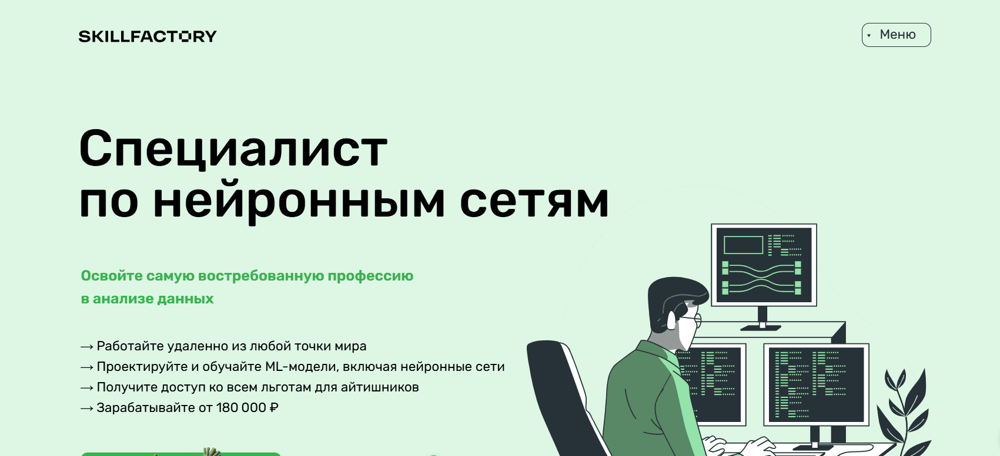- ✅ Официальный сайт: skillfactory.ru
- 💸 Цена обучения: от 66 552 ₽ со скидкой до 55%.
- 💳 Рассрочка: доступна от 5 546 ₽/мес, включая беспроцентные платежи.
- 📚 Формат: онлайн-курсы: видеоуроки, практические задания, тесты, проекты, хакатоны.
- ⏳ Продолжительность: 24 месяца.
- 📜 Документ: диплом о профессиональной переподготовке.
- 📝 Трудоустройство: карьерные консультации, помощь в подготовке резюме, стажировки, база работодателей.
- 🔷 Для кого подходит курс: новичков без опыта, программистов, аналитиков и специалистов, желающих освоить работу с машинным обучением и искусственным интеллектом.
Особенности:
Обучение строится на сочетании теории и практики: 20% времени уделяется теоретическим блокам, а 80% — практическим заданиям. Студенты научатся работать с алгоритмами машинного обучения и современными инструментами анализа данных. Программа включает карьерное сопровождение: тренажеры собеседований, консультации с HR и помощь в составлении резюме. Курсы включают бесплатные направления по soft skills и английскому для IT-специалистов. Уже к середине обучения можно собрать портфолио из реальных проектов. Занятия проходят в онлайне, что позволяет совмещать обучение с работой. Доступна поддержка менторов и кураторов. Программа помогает освоить инструменты для работы с ИИ, получить базовые знания математики и программирования и применить их в реальных кейсах.
Чему учатся студенты:
- Освоить основы программирования на Python и работу с SQL
- Научиться использовать алгоритмы машинного обучения
- Создавать модели для анализа и прогнозирования данных
- Решать бизнес-задачи с помощью нейросетей
- Разрабатывать рекомендательные системы и проекты по классификации
- Применять навыки в реальных кейсах и практических заданиях
Преподаватели:
- Опытные практики из IT-индустрии: специалисты по Data Science, ML и нейронным сетям
- Менторы с опытом работы в крупных компаниях и реальных проектах
- Карьерные консультанты и HR-эксперты для сопровождения студентов
Преимущества:
- Совмещение обучения с работой благодаря гибкому графику
- Карьерная поддержка до выхода на рынок труда
- Большое количество практических проектов и кейсов
- Менторская поддержка и персональные консультации
- Рассрочка и доступные скидки
- Возможность освоить навыки применения ИИ с нуля
- Портфолио реальных проектов к окончанию курса
Отзывы учеников:
Студенты отмечают высокое качество преподавания, доступность материала и большое количество практических заданий. Многие подчеркивают ценность карьерного сопровождения, помощь с резюме и подготовкой к собеседованиям. Часто упоминают сильную поддержку менторов и удобный формат обучения, который позволяет совмещать учебу с работой.
Перейти на официальный сайт курса3. 🏆 Machine Learning и Deep Learning – Skillfactory
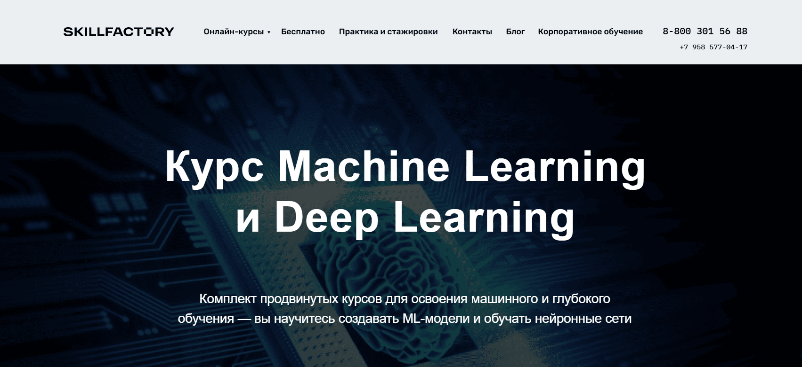- ✅ Официальный сайт: skillfactory.ru
- 💸 Цена обучения: от 57 321 ₽ со скидкой, полная стоимость 115 800 ₽.
- 💳 Рассрочка: доступна от 2 654 ₽ в месяц при рассрочке до 24 месяцев, первый платеж через месяц.
- 📚 Формат: онлайн-курсы, видеолекции, домашние задания, хакатоны, соревнования на Kaggle, поддержка наставников.
- ⏳ Продолжительность: около 10–12 месяцев в зависимости от графика обучения.
- 📜 Документ: сертификат о прохождении курса.
- 📝 Трудоустройство: помощь с резюме, возможность стажировки в компаниях-партнерах.
- 🔷 Для кого подходит курс: начинающим Data Scientist, программистам на Python, аналитикам, желающим освоить навыки работы с нейронными сетями и алгоритмами машинного обучения.
Особенности:
Программа сочетает практику и теорию, обучая работе с машинным обучением и глубокими нейросетями. Участники проходят задания на основе реальных кейсов, решают задачи по анализу данных и созданию моделей для бизнеса. Курс основан на практическом применении искусственного интеллекта и включает участие в соревнованиях. Обучение проходит в удобном онлайн-формате с еженедельным открытием новых модулей. Студенты получают доступ к полезным материалам, базе знаний и поддержке кураторов. Программа охватывает как основы программирования, так и сложные темы нейронных сетей. Обучение помогает научиться использовать ИИ для автоматизации процессов и внедрения решений в различных сферах.
Чему учатся студенты:
- Создавать модели машинного обучения и рекомендательные системы
- Работать с нейронными сетями и фреймворками TensorFlow, Keras
- Применять алгоритмы регрессии, кластеризации и ансамблей деревьев
- Решать задачи с временными рядами и NLP
- Создавать чат-ботов и системы генерации контента
- Участвовать в хакатонах и соревнованиях на Kaggle
Преподаватели:
- Эмиль Магеррамов — COO Data Lab, компания EORA
- Антон Киселев — Head of R&D, компания EORA
- Сергей Веренцов — CTO, компания EORA
- Андрей Зимовнов — Старший разработчик, Яндекс.Дзен
- Дмитрий Коробченко — Deep Learning R&D Engineer, NVIDIA
- Эмиль Богомолов — инженер-исследователь в группе ADASE, Сколтех
Преимущества:
- Практическое обучение на реальных кейсах и проектах
- Участие в командных соревнованиях и хакатонах
- Помощь в подготовке портфолио и трудоустройстве
- Доступ к современным инструментам машинного обучения и глубоких нейросетей
- Стажировки для лучших студентов в компании-партнеры
- Поддержка наставников и профессиональное сообщество
Отзывы учеников:
Студенты отмечают, что программа сбалансирована между теорией и практикой, много задач для закрепления материала. Подчеркивают ценность взаимодействия с преподавателями и куратором, доступность объяснений и большое количество практических кейсов. Отмечается возможность применить знания сразу в рабочих проектах и на фрилансе.
Перейти на официальный сайт курса4. Инженер по глубокому обучению нейросетей — АНО ДПО «Образовательные технологии Яндекса - Практикум»
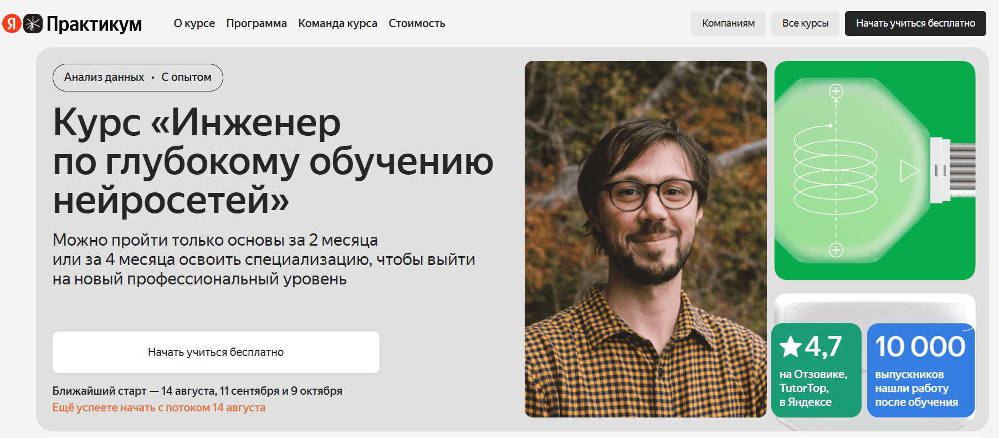- ✅ Официальный сайт: practicum.yandex.ru
- 💸 Цена: от 60 000 ₽ - зависит от способа оплаты, возможна скидка до 20%.
- 💳 Рассрочка: доступна от 2 449 ₽/мес, также возможна частичная оплата работодателем.
- 📚 Формат: онлайн обучение, видеоуроки, домашние задания, тесты, практические проекты, воркшопы.
- ⏳ Продолжительность: 2 месяца (основы) или 4 месяца (специализация).
- 📜 Документ: удостоверение о повышении квалификации или диплом о профессиональной переподготовке.
- 📝 Трудоустройство: помощь в поиске работы, более 10 000 выпускников нашли работу.
- 🔷 Для кого подходит курс: IT-специалисты с опытом работы с данными, машинным обучением и языком Python.
Особенности:
Программа 2025 года включает самые актуальные инструменты искусственных интеллектов и популярных нейросетей. Обучение строится на практических кейсах и реальных задачах, чтобы студенты могли освоить базовые и углубленные знания. Участники проходят обучение с поддержкой наставников, получают практические навыки на 4–8 проектах для портфолио и учатся эффективно использовать нейросети в рабочих задачах. Можно выбрать специализацию: компьютерное зрение или обработку естественного языка. Гибкий график обучения позволяет совмещать процесс с работой. Практика проходит в облачной инфраструктуре, что дает возможность научиться использовать современные инструменты и алгоритмы машинного обучения. Курсы включают воркшопы и работу с текстовыми моделями, где студенты научатся создавать и внедрять готовые решения.
Чему учатся студенты:
- Освоить инструменты PyTorch, CNN, RNN, LSTM, GRU, Attention, Transformers
- Научиться применять предобученные модели для анализа текста и изображений
- Разобраться в алгоритмах машинного обучения и принципах работы нейронных сетей
- Освоить создание решений для анализа данных и генерацию контента
- Изучить применение нейросетей в задачах NLP и CV
- Научиться работать с данными: подготовка, обработка, визуализация
Преподаватели:
- Антон Моргунов — Senior инженер по компьютерному зрению в Базис Центре
- Даниил Вяжев — исследователь в ВШЭ, PhD Student в Сколтехе, DL/ML-инженер
- Артур Мутолапов — ML-инженер в бигтехе, 4+ года опыта в машинном обучении
- Яна Петрова — преподаватель Deep Learning в МГТУ им. Баумана, Ex-Head of ML в АссистАгро
- Кирилл Бобылев — Senior Data Scientist в Ozon Tech, специализация в Moderation, Anti-Fraud, QC
Преимущества:
- Возможность освоить навыки работы с современными моделями искусственного интеллекта
- Гибкий график обучения для совмещения с работой
- Практическое обучение на реальных проектах
- Выбор специализации по интересам: CV или NLP
- Поддержка наставников и обратная связь по проектам
- Помощь в трудоустройстве и возможность оплачивать обучение через работодателя
- Доступ к актуальным материалам и сервисам для работы с нейросетями
Отзывы учеников:
Выпускники отмечают высокое качество обучения, полезные материалы и практическую направленность. Многие выделяют гибкий график обучения и помощь наставников. По данным отзывов, сильной стороной курса стали практические проекты, которые позволяют закрепить знания и получить навыки программирования в сфере ИИ. Большинство студентов указывают, что курс помог им выйти на новый профессиональный уровень и найти работу в сфере искусственного интеллекта и нейронных сетей.
Перейти на официальный сайт курса5. Специалист по Data Science — АНО ДПО «Образовательные технологии Яндекса - Практикум»
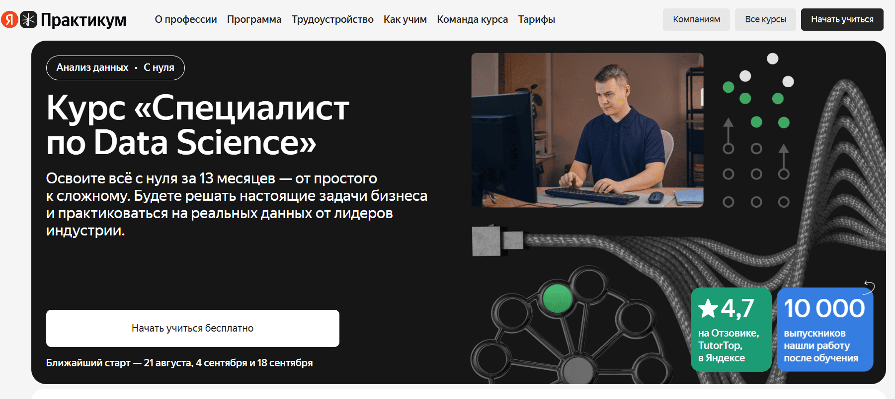- ✅ Официальный сайт: practicum.yandex.ru
- 💸 Цена обучения: от 154 000 ₽ (базовый формат), от 202 000 ₽ (расширенный формат).
- 💳 Рассрочка: от 6 287 ₽/мес до 36 месяцев.
- 📚 Формат: онлайн-обучение, интерактивные задания, проекты, воркшопы с экспертами.
- ⏳ Продолжительность: 13 месяцев (базовый), 17 месяцев (расширенный).
- 📜 Документ: диплом о профессиональной переподготовке.
- 📝 Трудоустройство: карьерный трек, акселерация поиска работы, помощь HR-экспертов.
- 🔷 Для кого подходит курс: для новичков без опыта в IT и тех, кто хочет освоить профессию Data Scientist с нуля.
Особенности:
Программа разработана в соответствии с требованиями рынка 2025 года и акцентирована на практическом применении искусственных интеллектов и машинного обучения. В ходе прохождения обучения студенты работают над реальными кейсами, решая задачи бизнеса и применяя современные алгоритмы машинного анализа. В курс встроен модуль по YandexGPT, где изучается использование нейросетей и генеративных ИИ для задач анализа данных. Нагрузка не превышает 15 часов в неделю, что позволяет совмещать учебу с работой. Важно, что программа обновляется регулярно, чтобы студенты осваивали только актуальные инструменты. После окончания курса выпускники получают диплом установленного образца и доступ к карьерной поддержке до 6 месяцев. Это помогает внедрить ИИ в профессиональную сферу и быстро выйти на новый уровень дохода.
Чему учатся студенты:
- Работе с Python, SQL, Git, Jupyter Notebook
- Применению алгоритмов машинного обучения
- Использованию нейросетей и генеративных моделей
- Построению моделей для классификации и регрессии
- Работе с библиотеками Pandas, NumPy, Scikit-learn, PyTorch
- Анализу данных и визуализации результатов
- Подготовке к собеседованиям и презентации проектов
Преподаватели:
- Сослан Табуев — аналитик-разработчик в Яндексе, более 20 лет в IT и математике.
- Анна Осина — руководитель отдела дата-анализа в AliExpress Россия, более 5 лет опыта в Data Science.
- Ольга Макаревич — аналитик данных в Университете 2035, 2 года опыта в сфере Data Science.
Преимущества:
- Большое портфолио: 17 проектов в базовом и 22 в расширенном формате
- Наставничество и обратная связь от экспертов-практиков
- Реальные кейсы от Яндекса и индустриальных партнеров
- Доступ к Мастерской Практикума и хакатонам
- Гибкий график обучения и поддержка кураторов
- Подготовка к трудоустройству и помощь HR-экспертов
Отзывы учеников:
Выпускники отмечают, что курс помогает освоить базовые навыки анализа данных и научиться эффективно использовать ИИ в реальных проектах. Чаще всего подчеркивают качество практических заданий, возможность применять знания сразу на работе и помощь в трудоустройстве. Многие пишут, что уже в первые месяцы после окончания курса нашли работу в IT и смежных сферах.
Перейти на официальный сайт курса6. Обработка естественного языка — NLP — АНО ДПО «Образовательные технологии Яндекса - Практикум»
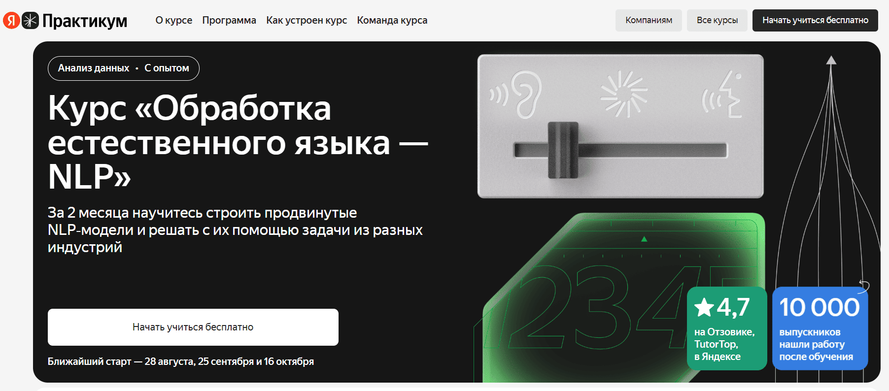- ✅ Официальный сайт: practicum.yandex.ru
- 💸 Цена: 60 000 ₽ за весь курс (со скидкой).
- 💳 Рассрочка: доступна - 31 000 ₽/мес, включая оплату частями и возможность оплаты работодателем.
- 📚 Формат: онлайн обучение: видеоуроки, практические задания, тесты, воркшопы с экспертами, проекты.
- ⏳ Продолжительность: 2 месяца при нагрузке от 15 часов в неделю.
- 📜 Документ: удостоверение о повышении квалификации установленного образца.
- 📝 Трудоустройство: помощь карьерного центра, подтвержденные данные о трудоустройстве выпускников по исследованию НИУ ВШЭ.
- 🔷 Для кого подходит курс: специалисты с опытом в анализе данных, ML и DL, инженеры, разработчики, желающие освоить применение нейросетей в задачах бизнеса.
Особенности:
Программа обновлена на 2025 год и включает лучшие практики обработки естественного языка. Обучение строится на практических кейсах и реальных задачах компаний. Студенты осваивают современные архитектуры — от BERT и RoBERTa до LLaMA и RAG, что позволяет освоить базовые и продвинутые навыки применения искусственного интеллекта. В рамках курса предусмотрено 4 проекта, которые помогут сформировать портфолио. Теория подается через интерактивную платформу, а практические проекты закрепляют навыки использования нейросетей. Обучение сопровождается поддержкой наставников и экспертов, а YandexGPT помогает разобраться в сложных темах и подготовить краткие конспекты. Студенты проходят обучение на базе PyTorch и современных инструментов машинного обучения, что делает программу максимально эффективной для внедрения ИИ в бизнес-задачи.
Чему учатся студенты:
- Понимать и применять архитектуры BERT, RoBERTa, DeBERTa, XLM-R.
- Строить модели генерации текстов, машинного перевода и NER.
- Адаптировать большие языковые модели под конкретные задачи.
- Оценивать качество моделей (BLEU, ROUGE, chrF).
- Работать с поисковыми алгоритмами: Elasticsearch, BM25, FAISS.
- Использовать современные подходы: SFT, RLHF, LoRA, RAG.
- Научиться создавать проекты с использованием нейросетей для реальных компаний.
Преподаватели:
- Антон Моргунов — Senior ML-инженер в Базис Центре, программный эксперт курса.
Преимущества:
- Совмещение теории и практики на реальных примерах.
- 4 полноценных проекта в портфолио с обратной связью.
- Воркшопы с экспертами по актуальным кейсам индустрии.
- Поддержка наставников и YandexGPT для эффективного усвоения материала.
- Возможность учиться в удобном темпе и совмещать с работой.
- Официальный документ о повышении квалификации.
- Карьерная поддержка и помощь в трудоустройстве.
Отзывы учеников:
Студенты отмечают высокое качество преподавателей, большое количество практических заданий и проектов, удобный график обучения и доступность материалов. Особенно ценится возможность сразу применять полученные знания в реальных проектах и практических кейсах, а также поддержка кураторов и экспертов, которые помогают освоить сложные темы.
Перейти на официальный сайт курса7. Нейросети для дизайна — АНО ДПО «Образовательные технологии Яндекса - Практикум»
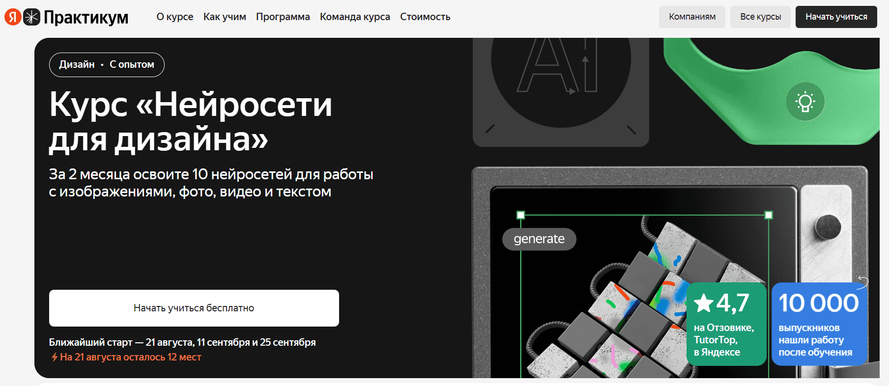- ✅ Официальный сайт: practicum.yandex.ru
- 💸 Цена обучения: 63 000 ₽ (со скидкой при единовременной оплате).
- 💳 Рассрочка: 32 500 ₽/мес на 2 месяца, списания происходят автоматически.
- 📚 Формат: онлайн-занятия с экспертами, воркшопы, Q&A-сессии, домашние задания и рабочая тетрадь.
- ⏳ Продолжительность: 2 месяца (~5 часов в неделю).
- 📜 Документ: удостоверение о повышении квалификации или сертификат (в зависимости от образования).
- 📝 Трудоустройство: более 10 000 выпускников нашли работу после прохождения обучения, доступен карьерный центр.
- 🔷 Для кого подходит курс: дизайнеры, маркетологи, менеджеры, предприниматели, а также все, кто работает с изображениями и текстами.
Особенности:
Программа рассчитана на тех, кто хочет освоить навыки работы с популярными нейросетями без глубоких знаний программирования. Обучение строится вокруг практических заданий, что помогает быстро внедрить искусственные интеллекты в рабочие процессы. Студенты научатся работать с алгоритмами машинного обучения и освоят инструменты для генерации визуального и текстового контента. Занятия проходят онлайн с поддержкой кураторов и экспертов. В рамках курса уделяется внимание реальным проектам, что позволяет накопить практический опыт. Студенты осваивают базовые принципы работы с генеративными моделями и учатся решать задачи в сфере ИИ. Доступ к KREA AI предоставляется бесплатно, а это упрощает освоение инструментов на практике. По окончании участники получают документ, подтверждающий уровень подготовки, и могут применить навыки в любых сферах бизнеса и маркетинга.
Чему учатся студенты:
- Создавать изображения и видеоролики с помощью нейросетей
- Редактировать фото: удалять и добавлять объекты, менять фон
- Использовать ИИ для генерации текстов и презентаций
- Применять ChatGPT и YandexGPT для анализа данных и генерации идей
- Осваивать генерацию визуального контента с Midjourney, Stable Diffusion и Recraft
- Применять ИИ в задачах маркетинга, дизайна и менеджмента
- Создавать проекты на основе реальных кейсов и усиливать портфолио
Преподаватели:
- Любовь Дементьева — исследователь ИИ в Яндекс Крауде, графический дизайнер.
- Петя Москалёв — арт-директор в «Самолёте», наставник, опыт в профессии более 13 лет.
- Илья Макаров — исследователь ИИ в Яндекс Крауде, специалист по генеративным моделям.
- Виктория Фоминых — ИИ-дизайнер, интегрирует технологии искусственного интеллекта в проекты Яндекса.
Преимущества:
- Бесплатный доступ к KREA AI на весь период обучения
- Обновляемая программа под каждый поток
- Возможность совмещать обучение с работой
- Реальные проекты и кейсы для портфолио
- Карьерная поддержка и помощь в трудоустройстве
- Практические навыки применения искусственного интеллекта в задачах бизнеса
- Возможность вернуть деньги за оставшийся срок обучения
Отзывы учеников:
Выпускники отмечают структурированность программы, большое количество практических заданий и возможность научиться использовать искусственные интеллекты в реальных проектах. Студенты подчеркивают ценность воркшопов с экспертами, поддержку кураторов и удобство онлайн-формата. Многие отмечают, что после курса начали быстрее создавать контент, эффективнее применять ИИ и получили готовые проекты для портфолио.
Перейти на официальный сайт курса8. Компьютерное зрение - АНО ДПО «Образовательные технологии Яндекса - Практикум»
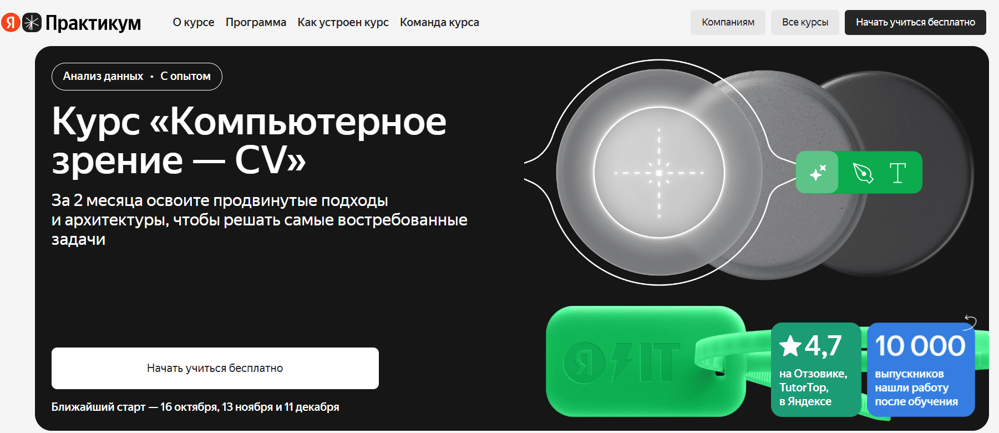- ✅ Официальный сайт: practicum.yandex.ru
- 💸 Цена обучения: 60 000 ₽ (со скидкой при полной оплате).
- 💳 Рассрочка: доступна - 31 000 ₽/мес, можно оплачивать частями или в кредит.
- 📚 Формат: онлайн-обучение, видеолекции, практические задания, тесты, проекты, воркшопы.
- ⏳ Продолжительность: 2 месяца (от 15 часов в неделю).
- 📜 Документ: удостоверение о повышении квалификации установленного образца.
- 📝 Трудоустройство: 10 000 выпускников нашли работу после прохождения обучения, помощь карьерного центра.
- 🔷 Для кого подходит курс: для специалистов в Data Science, DL- и ML-инженеров, разработчиков с опытом в машинном обучении и программировании.
Особенности:
Программа рассчитана на слушателей со сферой ИИ и опытом работы с данными. Студенты учатся внедрять искусственные интеллекты в реальные бизнес-задачи, работать с популярными нейросетями и моделями компьютерного зрения. Обучение строится на практических кейсах, что помогает освоить базовые и продвинутые навыки программирования для анализа изображений и видео. Участники проходят обучение с поддержкой экспертов, выполняют 4 проекта для портфолио и применяют алгоритмы машинного обучения на практике. Программа курса обновляется регулярно, чтобы студенты изучали только актуальные технологии. Применяют нейросети для сегментации, детекции и генерации контента, включая изображения и тексты. Курс помогает освоить инструменты вроде PyTorch, YOLO, U-Net и CLIP, которые используют нейронные сети для решения сложных задач. После прохождения курсов слушатели смогут внедрить ИИ в разработку и создавать контент с помощью генеративных моделей.
Чему учатся студенты:
- Создавать решения для сегментации и детекции объектов
- Обучать генеративные модели и применять их для собственных задач
- Работать с мультимодальными данными и трансформерами (ViT, CLIP, VQA)
- Оценивать результаты работы моделей и интерпретировать их
- На практике использовать PyTorch, TorchVision, LoRA, DeepLab, GAN, Diffusion
Преподаватели:
- Антон Моргунов — программный эксперт курса, Senior ML-инженер в Базис Центре
Преимущества:
- Практические проекты на реальных данных
- Поддержка наставников и кураторов на протяжении курса
- Гибкий график обучения, можно совмещать с работой
- Воркшопы с экспертами для разбора кейсов из разных сфер
- Бесплатная вводная часть для знакомства с программой
- Налоговый вычет 13% от стоимости обучения
Отзывы учеников:
Студенты отмечают удобный формат обучения, насыщенную практику и поддержку экспертов. Плюсами называют возможность научиться использовать ИИ и нейронные сети для реальных проектов, добавление новых проектов в портфолио и доступ к актуальным инструментам. Высоко ценится качество обратной связи и практическая направленность курса.
Перейти на официальный сайт курса9. Профессия Machine Learning Engineer – Skillbox
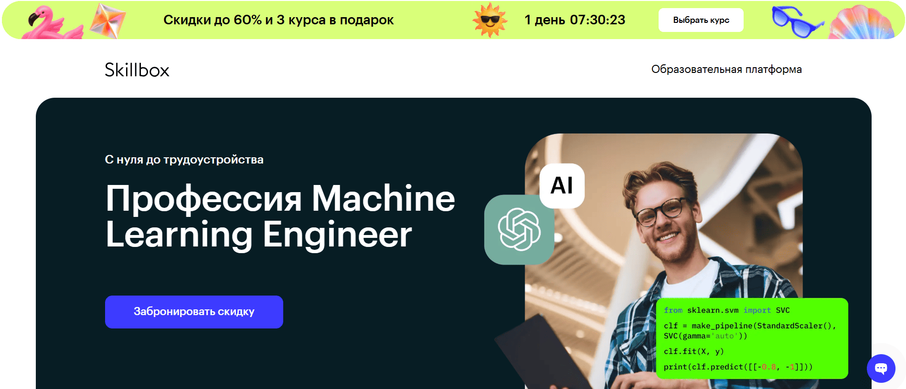- ✅ Официальный сайт: skillbox.ru
- 💸 Цена: от 128 328 ₽ (со скидкой 50%).
- 💳 Рассрочка: от 5 347 ₽/мес до 31 месяца, без процентов и первого взноса.
- 📚 Формат: онлайн-обучение, видеолекции, более 80 практических заданий, тесты, проекты, обратная связь от наставников.
- ⏳ Продолжительность: 12 месяцев.
- 📜 Документ: сертификат установленного образца, лицензия №Л035−1 298−77/179 609.
- 📝 Трудоустройство: Центр карьеры Skillbox помогает найти работу или возвращает деньги.
- 🔷 Для кого подходит курс: для новичков без опыта, специалистов в IT, аналитиков и всех, кто хочет освоить профессию ML-инженера.
Особенности:
Программа помогает освоить все ключевые навыки работы с машинным обучением и искусственными интеллектами. Студенты выполняют проекты на Kaggle и получают опыт применения нейросетей в реальных кейсах. Обучение строится без жёстких дедлайнов: можно совмещать с работой и проходить модули в удобном темпе. На протяжении курса доступны консультации экспертов, персональная поддержка кураторов и HR-сопровождение. В портфолио выпускника входят три проекта на основе реальных данных партнёров, включая модель для банковского риск-менеджмента. По окончании выпускники получают доступ к базе вакансий и сообществу специалистов в сфере искусственного интеллекта.
Чему учатся студенты:
- Освоить базовые навыки работы с Python, SQL и библиотеками для анализа данных
- Проводить разведочный анализ, очистку и подготовку данных
- Применять алгоритмы машинного обучения и работать с нейронными сетями
- Создавать рекомендательные системы и модели прогнозирования
- Решать задачи NLP и компьютерного зрения
- Внедрять модели в продакшн и строить пайплайны для автоматизации процессов
Преподаватели:
- Юлдуз Фаттахова — AI Product Manager, SberData, Сбербанк
- Владимир Васильев — руководитель продукта рекомендаций в VK, автор курса Deep Learning
- Пётр Емельянов — R&D Director, UBIC Tech
Преимущества:
- Доступ ко всем обновлениям курса навсегда
- Три реальных проекта в портфолио
- Персональная обратная связь от наставников
- Возможность участия в студенческом чате и Skill-сообществе
- Помощь в трудоустройстве с гарантией возврата денег
- Практика в Kaggle на реальных датасетах
Отзывы учеников:
Студенты чаще всего отмечают удобный формат обучения, доступность материалов и практических кейсов, а также полезность обратной связи от кураторов. Многие подчеркивают, что курс помогает собрать сильное портфолио и успешно трудоустроиться в сфере искусственного интеллекта.
Перейти на официальный сайт курса10. Специалист по компьютерному зрению дронов и нейросетям — Skillbox
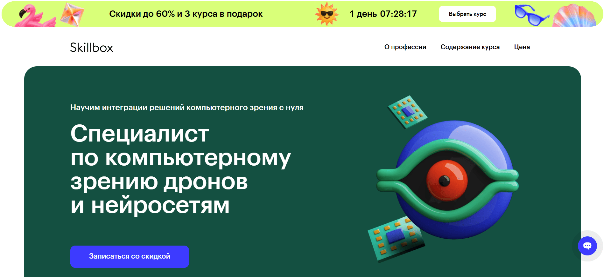- ✅ Официальный сайт: skillbox.ru
- 💸 Цена: 92 856 ₽ - со скидкой 50% .
- 💳 Рассрочка: 7 738 ₽/мес на 12 месяцев без переплат.
- 📚 Формат: онлайн-уроки, практические задания, кейсы из индустрии, тесты, консультации и вебинары.
- ⏳ Продолжительность: 8 месяцев.
- 📜 Документ: сертификат установленного образца, гослицензия №Л035−1 298−77/179 609.
- 📝 Трудоустройство: помощь с поиском работы, поддержка «Поможем найти работу или вернем деньги».
- 🔷 Для кого подходит курс: для тех, кто хочет освоить машинное обучение, применение нейросетей и получить практические навыки программирования с нуля.
Особенности:
Программа объединяет три курса: Python для инженеров, математика для робототехников и компьютерное зрение с нейросетями. Обучение строится на практике, включая задачи из сельского хозяйства, логистики и промышленности. Участники изучают алгоритмы машинного обучения и научатся использовать искусственные интеллекты для создания прикладных решений. Курсы включают множество практических проектов, где студенты применяют нейросети в реальных примерах. Благодаря такой программе легко освоить базовые знания и перейти к глубоком обучении. Все участники получают доступ к образовательной платформе с удобными форматами занятий. В конце студенты смогут показать реальные проекты в портфолио, что повышает шансы на трудоустройство.
Чему учатся студенты:
- Ориентироваться в задачах машинного обучения и компьютерного зрения
- Понимать сильные и слабые стороны популярных нейросетей
- Разрабатывать решения на базе Python с использованием PyTorch, Keras, TensorFlow
- Собирать и размечать данные, обучать и тестировать модели
- Применять математику и алгоритмы машинного обучения для решения задач
- Создавать прикладные проекты на основе искусственных интеллектов
Преподаватели:
- Дмитрий Шадрин: PhD, Сколтех, старший научный сотрудник
- Арсений Павлов: эксперт в области компьютерного зрения и глубокого обучения
- Олег Буличев: старший преподаватель и инженер-исследователь университета Иннополис
Преимущества:
- Скидка 50% и 3 бесплатных курса в подарок
- Доступ к практическим кейсам из разных отраслей
- Поддержка кураторов и общение в профессиональном сообществе
- Сертификат государственного образца
- Возможность совмещать обучение с работой
- Навыки программирования, полезные в реальных проектах
Отзывы учеников:
Выпускники Skillbox отмечают высокое качество программы, удобный график обучения и большое количество практики. Студенты подчеркивают, что задания помогают закрепить навыки и дают реальный опыт. Отдельно выделяют поддержку кураторов и возможность трудоустройства после окончания обучения.
Перейти на официальный сайт курса11. Deep Learning – Нетология
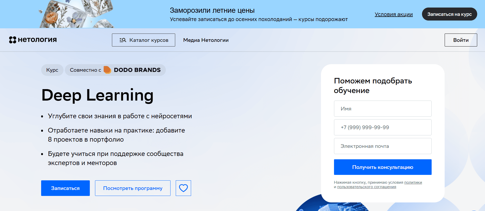- ✅ Официальный сайт: netology.ru
- 💸 Цена обучения: 49 900 ₽ (со скидкой 40%).
- 💳 Рассрочка: до 24 месяцев без переплат, от 2 918 ₽ в месяц.
- 📚 Формат: онлайн-уроки, вебинары, практические задания, тесты, доступ к материалам в приложении.
- ⏳ Продолжительность: 2,5 месяца.
- 📜 Документ: удостоверение о повышении квалификации государственного образца.
- 📝 Трудоустройство: проекты для портфолио, помощь экспертов, возможность реальных кейсов от партнеров.
- 🔷 Для кого подходит курс: программистам, аналитикам данных, дата-сайентистам с базовыми навыками Python и опытом работы с библиотеками машинного обучения.
Особенности:
Программа создана для тех, кто хочет освоить инструменты и практическое применение нейросетей. Во время прохождения обучения студенты учатся работать с моделями машинного обучения, внедрять ИИ в реальные проекты и решать задачи анализа данных. Курс включает практические кейсы, где применяют нейросети для генерации текстов, изображений и автоматизации задач. Участники получают доступ к платформе с полезными материалами и мобильным приложением, что делает обучение удобным. В процессе обучения уделяется внимание алгоритмам машинного обучения и их применению для различных задач. Формат построен так, чтобы студенты смогли освоить новые навыки без отрыва от работы. Участники выполняют домашние задания, проекты и получают поддержку кураторов. После окончания курса можно использовать полученные знания для внедрения ИИ в бизнес или карьеру в сфере искусственного интеллекта.
Чему учатся студенты:
- Работать с многослойными и сверточными нейронными сетями
- Создавать генеративные модели для текстов и изображений
- Применять методы NLP и работать с рекуррентными архитектурами
- Решать задачи компьютерного зрения и object detection
- Использовать GAN для создания уникальных изображений и текстов
- Строить языковые модели и применять их к реальным кейсам
Преподаватели:
- Алексей Миронов — ведущий инженер по разработке, «ДомКлик»
- Мурат Апишев — руководитель направления R&D в NLU/NLP, Just AI
- Юлия Пономарева — Data Scientist, фрилансер
- Даниил Корогодский — сооснователь и генеральный директор ИИ-стартапа ess.ai
Преимущества:
- Интенсивное обучение с реальными практическими проектами
- Поддержка экспертов и менторов на всех этапах
- Возможность обучения в удобное время через мобильное приложение
- Рассрочка до 24 месяцев без переплат
- Доступ к записям вебинаров и материалам в течение 3 лет
- Работа над дипломом на основе реальных задач партнеров
Отзывы учеников:
Выпускники отмечают, что курс помогает освоить практические навыки и эффективно использовать ИИ в рабочих проектах. Многие подчеркивают пользу от реальных кейсов и удобный формат обучения, а также доступ к полезным материалам и поддержке преподавателей. Студенты ценят, что программа учит применять нейросети не только теоретически, но и в практических задачах.
Перейти на официальный сайт курса12. Нейросети для анализа данных — Нетология
- ✅ Официальный сайт: netology.ru
- 💸 Цена обучения: 35 000 ₽ со скидкой 40% (61 404 ₽ без скидки).
- 💳 Рассрочка: от 3 070 ₽ в месяц без переплат.
- 📚 Формат: видеолекции, вебинары, практические задания, лонгриды и материалы в личном кабинете.
- ⏳ Продолжительность: 2 месяца (36,5 часов теории и 37 часов практики).
- 📜 Документ: удостоверение о повышении квалификации.
- 📝 Трудоустройство: помощь с портфолио и практическими кейсами.
- 🔷 Для кого подходит курс: аналитикам, новичкам в сфере ИИ, специалистам по отчетам и всем, кто хочет научиться использовать искусственные интеллекты в работе.
Особенности:
Обучение строится так, чтобы студенты могли освоить базовые навыки и научиться использовать искусственные интеллекты в ежедневных рабочих задачах. Программа сочетает теорию и практику, включая анализ таблиц, генерацию SQL-запросов и применение ChatGPT для аналитики. На курсе показывают примеры использования нейросетей для оптимизации процессов, внедрения ИИ в аналитику и создания отчетов. Студенты осваивают методы машинного обучения без глубоких знаний программирования, а также изучают современные сервисы автоматизации. Доступ к материалам сохраняется, включая мобильное приложение с возможностью учиться офлайн. По окончании курса участники получают удостоверение о повышении квалификации. Обучение подойдет как новичкам, так и тем, кто уже работает с данными, но хочет упростить рутинные задачи.
Чему учатся студенты:
- Анализировать Excel-таблицы и писать SQL-запросы
- Готовить данные к анализу и находить в них тренды и закономерности
- Работать с Jupyter Notebook и использовать Python без глубоких знаний кода
- Интегрировать процессы с помощью n8n и автоматизировать рутинные задачи
- Интерпретировать результаты и делать выводы с применением ИИ
- Создавать шаблоны отчетов и использовать AI-ассистентов
- Разбираться в нейронных сетях, включая ChatGPT, DeepSeek и Gemini
Преподаватели:
- Артём Денисов — эксперт-практик, исследователь проектов в области XR и ИИ, 15 лет в fullstack-анализе и интеграции, 5 лет в no-code/low-code, 3 года в GenAI, разработчик чат-ботов для бизнеса.
Преимущества:
- Освоение практических навыков на реальных проектах
- Возможность научиться применять искусственные интеллекты без глубоких знаний программирования
- Поддержка кураторов и общение с сообществом студентов
- Мобильное приложение с офлайн-доступом к материалам
- Гибкий график занятий — не чаще двух раз в неделю вечером
- Возврат денег в течение первых занятий, если курс не подошел
- Бонусы: библиотека промптов и курс английского для аналитиков
Отзывы учеников:
Студенты отмечают простоту объяснений и большое количество практических заданий. Часто подчеркивают ценность поддержки кураторов и возможность сразу применять полученные знания на работе. Многие положительно отзываются о мобильном приложении, где удобно учиться даже офлайн. Отмечают, что курс помогает освоить инструменты искусственного интеллекта для реальных рабочих задач и значительно упрощает аналитику.
Перейти на официальный сайт курса13. Компьютерное зрение — OTUS
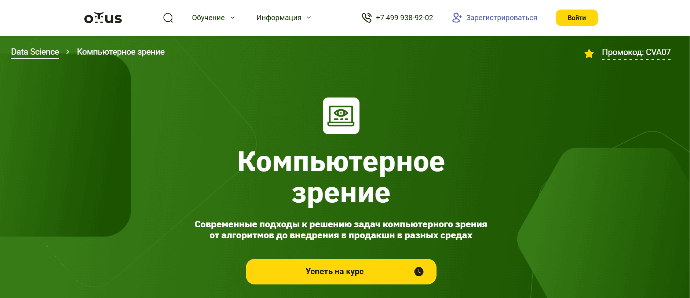- ✅ Официальный сайт: otus.ru
- 💸 Цена: 88 000 ₽ (для физических лиц, возможен налоговый вычет 13%).
- 💳 Рассрочка: доступна от 7 333 ₽/мес.
- 📚 Формат: онлайн-занятия, вебинары, домашние задания, тесты, выпускной проект, поддержка менторов.
- ⏳ Продолжительность: 4 месяца (2 раза в неделю по 2 акад. часа).
- 📜 Документ: сертификат об окончании обучения.
- 📝 Трудоустройство: размещение резюме в базе OTUS, карьерные консультации, помощь в поиске работы.
- 🔷 Для кого подходит курс: студенты профильных ВУЗов, специалисты Data Science, программисты с базовыми знаниями Python, линейной алгебры и машинного обучения.
Особенности:
Программа позволяет освоить навыки компьютерного зрения на практике и закрепить знания в реальных проектах. Обучение строится вокруг использования нейросетей, алгоритмов машинного обучения и применения искусственного интеллекта для анализа изображений, видео и 3D-сцен. Занятия включают практические кейсы с визуальными нейросетями, работа с современными инструментами вроде PyTorch, OpenCV и HuggingFace. Студенты создают проекты, которые можно демонстрировать работодателям, что особенно важно для трудоустройства. Программа рассчитана на тех, кто хочет эффективно использовать искусственные интеллекты в рабочих задачах, научиться создавать уникальный контент и внедрять ИИ в реальные процессы. Доступ к материалам сохраняется после окончания курса, а домашние задания помогают закрепить практический опыт.
Чему учатся студенты:
- Решать задачи классификации и сегментации изображений
- Применять нейросети для детекции объектов и распознавания лиц
- Анализировать видео и 3D-сцены с помощью ИИ
- Создавать и оптимизировать модели глубокого обучения
- Разворачивать проекты на сервере и внедрять их в продакшн
- Использовать генеративные модели для создания изображений и описаний
Преподаватели:
- Антон Витвицкий — к.ф.-м.н., Director of Computer Vision Boost Arria NLG
- Дмитрий Колесников — Lead Computer Vision Engineer, Wildberries
- Иван Мордовец — Senior ML Engineer, Samokat.Tech
Преимущества:
- Практические задания и проекты на базе реальных кейсов
- Возможность совмещать учебу с работой
- Поддержка экспертов и доступ к комьюнити студентов
- Навыки работы с современными инструментами ИИ и CV
- Карьерные мероприятия и помощь в поиске работы
- Записи всех занятий доступны навсегда
Отзывы учеников:
Студенты отмечают систематизацию знаний, практическую направленность и доступ к полезным материалам. Подчеркивают высокий уровень преподавателей, удобный график обучения и возможность применять полученные навыки сразу в реальных проектах. Многие выпускники говорят о росте профессиональной уверенности и перспективе повышения дохода после прохождения программы.
Перейти на официальный сайт курса14. Компьютерное зрение. Advanced – OTUS
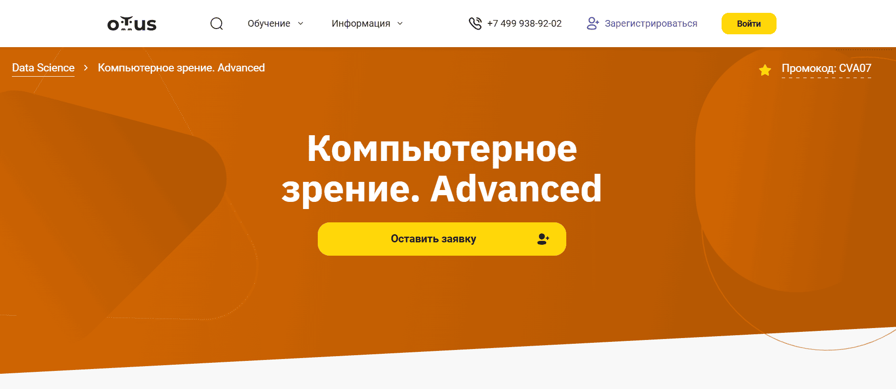- ✅ Официальный сайт: otus.ru
- 💸 Цена обучения: 88 000 ₽, есть возможность вернуть до 13% через налоговый вычет.
- 💳 Рассрочка: доступна от 7 333 ₽/мес.
- 📚 Формат: онлайн-вебинары, домашние задания, итоговый проект, общение в чате Telegram, записи занятий остаются навсегда.
- ⏳ Продолжительность: 4 месяца.
- 📜 Документ: сертификат OTUS и удостоверение о повышении квалификации.
- 📝 Трудоустройство: помощь в оформлении резюме, возможность попасть в базу вакансий партнеров.
- 🔷 Для кого подходит курс: для специалистов с опытом в CV, разработчиков на Python, тех, кто уже знаком с нейросетями и машинным обучением.
Особенности:
Программа рассчитана на тех, кто уже имеет базовые навыки в компьютерном зрении и хочет углубиться в сложные задачи. Обучение строится на сочетании теории и практики: каждое занятие сопровождается практическими заданиями. Студенты учатся применять нейросети и алгоритмы машинного обучения для реальных задач. В курсе используются современные инструменты, включая PyTorch 2.0, Vision Transformers и генеративные модели. Практические проекты помогают освоить навыки, востребованные в сфере искусственного интеллекта. По окончании студенты создают выпускной проект, который можно прикрепить к резюме. Занятия проходят в удобное вечернее время, что позволяет совмещать учебу с работой. Все участники получают доступ к полезным материалам и обратной связи от преподавателей.
Чему учатся студенты:
- Применять методы глубокого обучения в задачах CV
- Использовать генеративные модели для создания изображений и видео
- Оптимизировать инференс и готовить модели к продакшену
- Решать задачи action detection и 3D CV
- Осваивать инструменты для анализа и обработки данных
Преподаватели:
- Антон Витвицкий — к.ф.-м.н., Director of Computer Vision, Boost Arria NLG
- Дмитрий Колесников — Lead Computer Vision Engineer, Wildberries
- Борис Цейтлин — Senior ML Scientist, Planet Farms
Преимущества:
- Современные технологии: PyTorch, Vision Transformers, Diffusion models
- Гибкий график обучения с доступом к записям
- Индивидуальная проектная работа в портфолио
- Поддержка преподавателей и комьюнити в Telegram
- Помощь в трудоустройстве и доступ к базе партнеров OTUS
- Практическая направленность — обучение через реальные кейсы
Отзывы учеников:
Студенты отмечают сильный состав преподавателей и широкий спектр тем. Многие подчеркивают ценность практических проектов и возможность работать над реальными задачами. Положительно выделяют удобный график занятий, обратную связь и качественную подачу материала. Выпускники указывают, что обучение помогает получить практический опыт и повысить востребованность на рынке труда.
Перейти на официальный сайт курса15. Специализация Machine Learning — OTUS
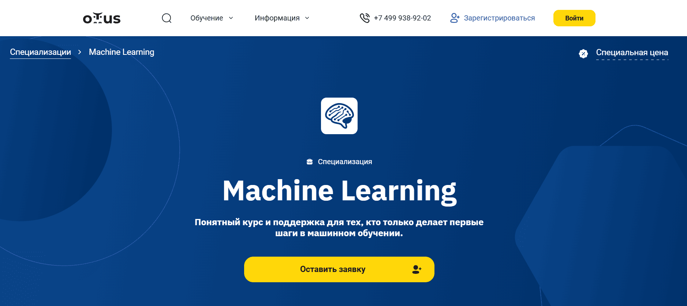- ✅ Официальный сайт: otus.ru
- 💸 Цена: от 209 000 ₽, доступны спецпредложения, при этом действует скидка 5% .
- 💳 Рассрочка: предоставляется от 18 333 ₽/мес, включая налоговый вычет до 13%.
- 📚 Формат: онлайн-вебинары 2 раза в неделю, записи занятий, домашние задания с проверкой, групповые консультации, проектные работы.
- ⏳ Продолжительность: 11 месяцев (2 ступени по 5,5 месяцев + интенсив 1 месяц).
- 📜 Документ: сертификат о прохождении курса и диплом о профессиональной переподготовке.
- 📝 Трудоустройство: карьерная поддержка, публичные разборы резюме и собеседований, база вакансий от партнеров.
- 🔷 Для кого подходит курс: аналитикам, разработчикам, тестировщикам, инженерам и всем, кто хочет освоить работу с искусственным интеллектом и нейронными сетями.
Особенности:
Программа строится поэтапно: сначала участники осваивают базовые навыки и основы машинного обучения, затем переходят к более сложным моделям и практическим проектам. Обучение включает изучение Python и языков программирования, алгоритмы машинного обучения и глубокое обучение. Студенты выполняют реальные проекты, что позволяет получить практический опыт и портфолио. В процессе обучения используются современные сервисы и инструменты, а также применяются популярные нейросети для реальных задач. Программа помогает освоить навыки работы с искусственными интеллектами, включая анализ данных, генерацию контента и применение нейронных моделей. Студенты научатся использовать методы анализа для различных сфер бизнеса и смогут внедрить ИИ в рабочих процессах. Поддержка преподавателей и менторов позволяет максимально эффективно закрепить практику на конкретных кейсах.
Чему учатся студенты:
- Освоить базовые принципы Python и SQL для анализа данных
- Научиться применять алгоритмы машинного обучения и глубоком обучении
- Работать с ML-библиотеками: pandas, numpy, matplotlib, seaborn, sklearn
- Научиться использовать нейронные сети для изображений и текстов
- Понимать основы A/B-тестирования и анализа временных рядов
- Создавать рекомендательные системы и внедрять их в проекты
- Работать с NLP для анализа текстовых материалов
- Выполнять полный цикл подготовки моделей — от датасета до production
Преподаватели:
- Мария Тихонова — Руководитель направления, Ph.D. in Computer Science, Сбер, ВШЭ
- Игорь Стурейко — к.ф.-м.н., Teamlead, главный инженер FinTech
- Кирилл Панфилов — блогер, программист [dirty_python]
Преимущества:
- Практическое обучение на реальных датасетах и проектах
- Обновляемая программа с учетом актуальных технологий
- Карьерные мероприятия и поддержка при трудоустройстве
- Обратная связь и разбор домашних заданий с менторами
- Формирование портфолио для собеседований и повышения
- Доступ к учебным материалам навсегда
Отзывы учеников:
Студенты отмечают практический подход и удобный график обучения. Многие выделяют, что программа помогает разобраться с базовыми знаниями и постепенно перейти к сложным задачам. Плюсом считают наличие проектной работы и возможность получить консультации у экспертов. Чаще всего отмечают высокое качество преподавателей и полезность практических заданий.
Перейти на официальный сайт курса16. Deep Learning Engineer — KARPOV.COURSES
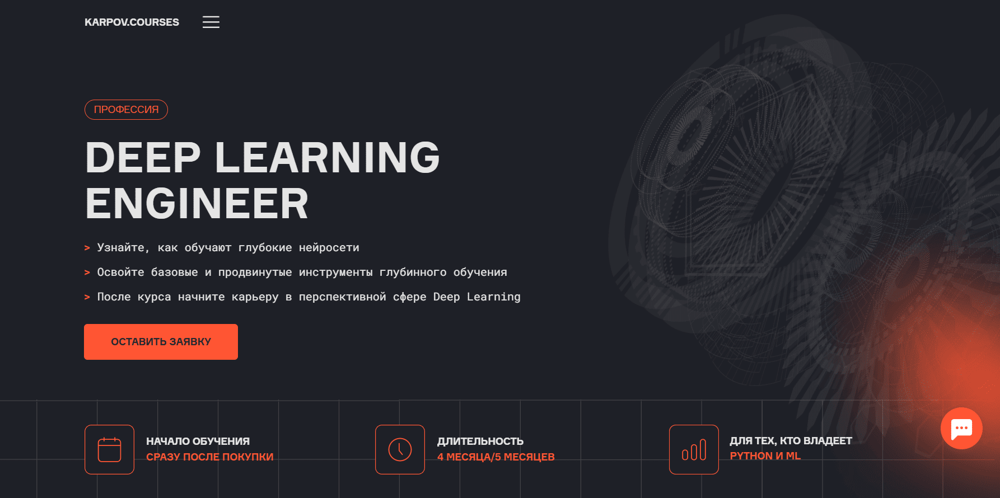- ✅ Официальный сайт: karpov.courses
- 💸 Цена: от 85 000 ₽ (при полной оплате со скидкой).
- 💳 Рассрочка: от 4 971 ₽/мес от 4 до 24 месяцев, беспроцентная.
- 📚 Формат: онлайн-обучение, видеолекции, практические задания, проекты, поддержка кураторов и ревьюеров.
- ⏳ Продолжительность: 4–5 месяцев.
- 📜 Документ: сертификат на русском и английском языках.
- 📝 Трудоустройство: карьерное сопровождение, помощь в создании резюме, разбор вакансий, поддержка в карьерном чате.
- 🔷 Для кого подходит курс: для специалистов с базовыми знаниями Python и машинного обучения, аналитиков данных и тех, кто хочет развиваться в сфере искусственного интеллекта.
Особенности:
Обучение строится на практике и применении искусственных интеллектов в реальных задачах. Студенты изучают алгоритмы машинного обучения, учатся использовать современные модели и осваивают инструменты для работы с нейронными сетями. Программа включает направления NLP, Computer Vision и аудиоанализ. Каждое направление завершается проектом, ориентированным на реальные кейсы. Курс помогает освоить базовые и продвинутые навыки программирования, разобраться в возможностях нейросетей и научиться применять ИИ в разных сферах. Благодаря поддержке экспертов участники получают доступ к полезным материалам и учатся работать с популярными нейросетями. Практика на реальных примерах формирует уверенность в решении сложных задач, а карьерное сопровождение ускоряет процесс трудоустройства.
Чему учатся студенты:
- Освоить основы глубокого обучения и построение нейронных сетей
- Работать с текстовыми моделями и применять методы NLP
- Использовать методы Computer Vision для анализа изображений
- Научиться создавать и обучать модели для распознавания речи, объектов и генерации контента
- Применять трансформеры, BERT, GPT и другие архитектуры
- Решать реальные задачи с помощью нейросетей
Преподаватели:
- Алексей Биршерт — Senior Machine Learning Engineer, TechLead в Raiffeisen CIB, специализируется на глубинном обучении
- Александр Шабалин — исследователь в Bayes Group, эксперт по NLP
- Алексей Кожарин — Backend-разработчик в Яндекс.Диске, преподаватель машинного обучения
- Анастасия Белозерова — Head of Research Projects в VisionLabs, эксперт по Computer Vision
- Нерсес Багиян — Head of Data Science в Raiffeisen CIB, руководитель курса
Преимущества:
- Программа включает практические задания и проекты
- Доступ к карьерному сопровождению и поддержке кураторов
- Возможность выбрать специализацию: NLP, Computer Vision или аудиоанализ
- Преподаватели — эксперты индустрии с опытом работы в крупных компаниях
- Гибкая система оплаты: скидка или рассрочка
- Сертификаты на двух языках для подтверждения квалификации
- Обучение с использованием современных инструментов и библиотек
Отзывы учеников:
Студенты отмечают высокое качество преподавания, удобный график обучения и практический подход. Многие подчеркивают ценность карьерного центра и помощь в трудоустройстве. Популярны отзывы о том, что курс помогает освоить новые навыки и уверенно применять ИИ в реальных проектах.
Перейти на официальный сайт курса17. Аналитика больших данных – НИУ ВШЭ и KARPOV.COURSES
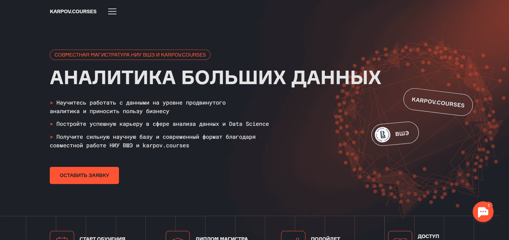- ✅ Официальный сайт: karpov.courses
- 💸 Цена обучения: от 245 000 ₽ за семестр.
- 💳 Рассрочка: образовательный кредит под 3% с господдержкой.
- 📚 Формат: онлайн-лекции, вебинары, тесты, практические проекты, доступ к онлайн-ресурсам НИУ ВШЭ.
- ⏳ Продолжительность: 2 года (4 семестра).
- 📜 Документ: диплом магистра НИУ ВШЭ и сертификат KARPOV.COURSES.
- 📝 Трудоустройство: выпускники находят работу уже в процессе прохождения обучения, карьерный центр помогает в подборе вакансий.
- 🔷 Для кого подходит курс: начинающим, специалистам IT, выпускникам вузов технического и социально-экономического профиля, аналитикам, менеджерам и маркетологам.
Особенности:
Программа магистратуры совмещает академическую экспертизу НИУ ВШЭ и практический подход KARPOV.COURSES. Студенты получают доступ к современным инструментам анализа данных, изучают основы искусственного интеллекта и машинного обучения, а также методы работы с нейронными сетями. Обучение строится на реальных кейсах из бизнеса и позволяет освоить практические навыки для решения конкретных задач. Формат гибкий, что дает возможность совмещать учебу и работу. Доступ к материалам сохраняется на протяжении всего курса. Образовательный кредит делает стоимость обучения доступной. В процессе обучения студенты учатся применять нейросети и осваивают навыки программирования. Курс подойдет тем, кто хочет освоить базовые инструменты анализа и углубиться в применение искусственного интеллекта.
Чему учатся студенты:
- Составлять SQL-запросы и оптимизировать их в Spark
- Работать с базами данных и создавать BI-системы
- Применять алгоритмы машинного обучения и строить ML-модели
- Проводить A/B-тестирования и анализировать продуктовые метрики
- Использовать Python для анализа данных и автоматизации процессов
- Научиться создавать визуализации и отчеты для бизнеса
Преподаватели:
- Анатолий Карпов — основатель KARPOV.COURSES, руководил аналитикой в VK
- Нерсес Багиян — Head of DS в Raiffeisen CIB, преподаватель машинного обучения НИУ ВШЭ
- Роман Бунин — к.т.н., Head of Data Nebius Group, специалист по BI и визуализации данных
- Евгений Ермаков — руководитель платформы данных toloka.ai, автор научных работ
- Никита Табакаев — аналитик Raiffeisen CIB, эксперт по продуктовой аналитике
- Александр Волынский — технический менеджер ML сервисов в VK Cloud
Преимущества:
- Доступ к онлайн-ресурсам НИУ ВШЭ и гибкий график обучения
- Фокус на практике и реальных кейсах бизнеса
- Диплом магистра НИУ ВШЭ и сертификат международного уровня
- Индивидуальная траектория обучения и поддержка кураторов
- Возможность совмещать учебу и работу
- Высокая востребованность выпускников в ведущих компаниях
Отзывы учеников:
Студенты отмечают сильную программу, практическую направленность и доступность материалов. Подчеркивают ценность поддержки кураторов и преподавателей, а также возможность учиться у экспертов, работающих с нейросетями и искусственным интеллектом. Отзывы часто выделяют удобный формат обучения и реальные проекты, которые помогают трудоустройству.
Перейти на официальный сайт курса18. Онлайн-курс Data Scientist с нуля — Школа Бруноям
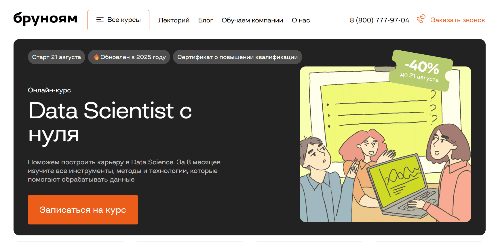- ✅ Официальный сайт: brunoyam.com
- 💸 Цена: от 79 900 ₽ (с учетом скидки -40%) полная стоимость 108 900 ₽.
- 💳 Рассрочка: до 12 месяцев, платеж от 6 658 ₽ в месяц.
- 📚 Формат: онлайн-уроки, проекты, тесты, чат с наставником, карьерная поддержка.
- ⏳ Продолжительность: 8 месяцев.
- 📜 Документ: удостоверение о повышении квалификации + сертификат.
- 📝 Трудоустройство: помощь в создании резюме, портфолио и подготовке к собеседованиям.
- 🔷 Для кого подходит курс: для новичков, желающих освоить основы программирования, работу с нейросетями и применением искусственного интеллекта в реальных проектах.
Особенности:
Программа построена на практическом применении алгоритмов машинного обучения и изучении базовых навыков работы с данными. Студенты научатся работать с Python, базами данных, современными библиотеками анализа и визуализации. Каждый проходит обучение с поддержкой личного наставника и выполняет практические проекты для портфолио. Важная часть курса — использование нейросетей и искусственного интеллекта для решения реальных задач. Учебный процесс адаптирован под удобный график, а материалы обновляются каждые три месяца. После окончания обучения студенты получают поддержку в трудоустройстве и могут внедрить ИИ в рабочих процессах.
Чему учатся студенты:
- Основам программирования на Python
- Работе с библиотеками NumPy, pandas, matplotlib
- SQL и управлению базами данных
- Моделям машинного обучения
- Применению нейронных сетей и генеративных моделей
- Проведению A/B-тестов и анализу данных
- Навыкам работы с временными рядами и текстовыми моделями
Преподаватели:
- Эмиль Шакиров — специалист по Data Science в Сбере
- Святослав Ковалёв — разработчик-аналитик в Яндексе
- Максим Эмбаухов — эксперт в области машинного обучения
Преимущества:
- Личный наставник без ограничений по вопросам
- Обновление уроков каждые три месяца
- Реальные проекты для портфолио и практических кейсов
- Поддержка центра карьеры после окончания курса
- Скидки и возможность рассрочки без переплат
- Доступ к платформе и материалам навсегда
- Налоговый вычет до 13% от стоимости обучения
Отзывы учеников:
Студенты отмечают большое количество практики и полезных материалов, удобную образовательную платформу и быстрые ответы наставников. Многие подчеркивают, что обучение помогает освоить базовые навыки работы с данными и эффективно использовать нейросети в проектах. Среди плюсов выделяют практические кейсы, карьерную помощь и возможность совмещать учебу с работой.
Перейти на официальный сайт курса19. Специалист по интеграции искусственного интеллекта — GeekBrains
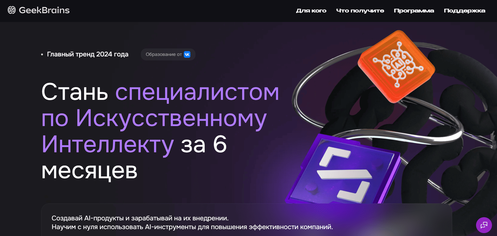- ✅ Официальный сайт: gb.ru
- 💸 Цена обучения: от 50 000 ₽ за проекты в процессе прохождения курса.
- 💳 Рассрочка: доступна, включая варианты с налоговым вычетом.
- 📚 Формат: онлайн-занятия в прямом эфире (95%), домашние задания, практические проекты, дополнительное обучение по поиску заказов.
- ⏳ Продолжительность: 6 месяцев.
- 📜 Документ: сертификаты GeekBrains и партнеров.
- 📝 Трудоустройство: портфолио из 4–12 реальных проектов, помощь наставников и кураторов, карьерная поддержка.
- 🔷 Для кого подходит курс: новичков без опыта программирования, специалистов, которые хотят внедрять AI-решения в бизнес.
Особенности:
Обучение построено на решении реальных задач компаний. Студенты осваивают работу с популярными нейросетями и учатся применять ИИ в разных сферах бизнеса. Курс помогает освоить базовые навыки автоматизации процессов и генерации контента без глубоких знаний программирования. Участники выполняют практические проекты стоимостью от 50 000 ₽ уже в период обучения. После завершения программы выпускники получают востребованные компетенции и могут претендовать на доход от 150 000 ₽ в месяц. Поддержка кураторов и наставников обеспечивает качественную подготовку и мотивацию. Практические кейсы позволяют научиться использовать искусственные интеллектуальные технологии для оптимизации бизнес-процессов. Программа включает работу с современными инструментами вроде ChatGPT, Midjourney, Stable Diffusion и другими. Студенты не только учатся, но и собирают реальное портфолио для старта в профессии.
Чему учатся студенты:
- Создавать и внедрять AI-продукты в разные сферы бизнеса
- Осваивать генерацию текстов, изображений и видео с помощью нейросетей
- Автоматизировать рутинные процессы в компаниях
- Применять алгоритмы машинного обучения в реальных кейсах
- Использовать ChatGPT и другие сервисы для оптимизации рабочих задач
- Формировать портфолио из проектов для настоящих компаний
Преподаватели:
- Андрей Кузнецов — Руководитель научной группы FusionBrain в AIRI
- Илья Чувашов — Руководитель разработки платформы Haiku AI
- Ильнар Шафигуллин — Директор по методологии образовательных продуктов GeekBrains
- Дмитрий Чинянин — Декан факультетов продакт-маркетинга и нейросетей в GeekBrains
Преимущества:
- Курс подходит даже для тех, кто никогда не изучал программирование
- Возможность работать над заказами компаний уже во время обучения
- Практическая направленность — от простых задач к сложным проектам
- Кураторы и наставники поддерживают студентов на каждом этапе
- Выпускники получают портфолио, подтверждающее их профессиональные навыки
- Программа охватывает самые востребованные направления искусственного интеллекта
- Доступ к дополнительным материалам и промокодам на сервисы
Отзывы учеников:
Студенты отмечают высокий уровень преподавателей и практическую ценность занятий. Многие выделяют возможность сразу применять знания в проектах и собирать портфолио. Отдельно подчеркивают быструю обратную связь от кураторов и поддержку сообщества. Положительно оценивают доступность материала и удобный формат онлайн-обучения.
Перейти на официальный сайт курса20. Разработчик искусственного интеллекта – GeekBrains
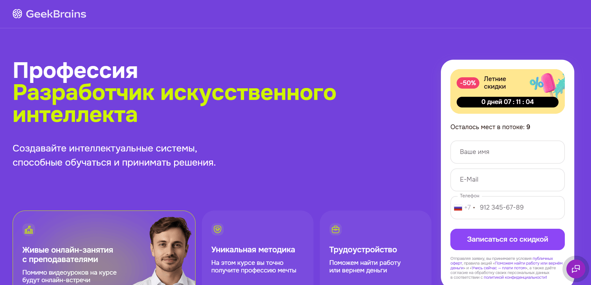- ✅ Официальный сайт: gb.ru
- 💸 Цена: 157 320 ₽ со скидкой.
- 💳 Рассрочка: от 4 370 ₽/мес при рассрочке на 36 месяцев - 0%, без переплат и скрытых платежей.
- 📚 Формат: онлайн-занятия, видеоуроки, практические проекты, тесты, дипломная работа.
- ⏳ Продолжительность: до 12 месяцев.
- 📜 Документ: официальный сертификат по лицензии № Л035-01298-77/00179609.
- 📝 Трудоустройство: помощь в поиске работы, подготовка резюме, тестовые собеседования.
- 🔷 Для кого подходит курс: для новичков и тех, кто хочет освоить сферу ИИ и машинного обучения.
Особенности:
Обучение строится на сочетании теории и практики: студенты проходят видеолекции, выполняют задания и создают реальные проекты. В программе — основы программирования, алгоритмы машинного обучения, использование нейронных сетей и методов анализа данных. Слушатели получают доступ к инструментам Python, PyTorch, TensorFlow и другим сервисам. Курсы включают онлайн-встречи с преподавателями и поддержку кураторов. После прохождения обучения участники получают диплом, подтверждающий профессиональные навыки. GeekBrains гарантирует помощь в трудоустройстве: от подготовки документов до рекомендаций работодателям. Все занятия проходят на образовательной платформе, удобной для самостоятельной практики. Курс подойдет тем, кто хочет изучить основы искусственного интеллекта и научиться применять ИИ в реальных проектах.
Чему учатся студенты:
- Освоить базовые навыки Python и работу с библиотеками для анализа данных
- Изучить алгоритмы машинного обучения и нейронные сети
- Научиться использовать ИИ для обработки текстов и изображений
- Применять ИИ в реальных кейсах и практических проектах
- Создавать и оптимизировать базы данных, работать с SQL
- Решать задачи компьютерного зрения и NLP
Преподаватели:
- Ильнар Шафигуллин — кандидат физико-математических наук, IT-преподаватель
- Александр Иванов — Head Of Project, Senior Data Scientist в Сбере
- Евгений Абумов — инженер умных устройств, IT-преподаватель
Преимущества:
- Живые онлайн-занятия с экспертами и поддержкой кураторов
- Возможность трудоустройства или возврат денег
- Участие в командных проектах и работа на практике
- Гибкий график обучения в любом удобном формате
- Доступ к полезным материалам и библиотекам после окончания курса
- Возможность налогового вычета до 13% от стоимости обучения
Отзывы учеников:
Студенты отмечают практическую направленность курса, доступность материала и поддержку преподавателей. Среди плюсов чаще всего выделяют удобный график обучения, большое количество реальных проектов, помощь с трудоустройством и высокое качество преподавания.
Перейти на официальный сайт курса21. Искусственный интеллект и большие данные — Московский институт технологий и управления

- ✅ Официальный сайт: mitm.institute
- 💸 Цена обучения: 110 040 ₽ (со скидкой).
- 💳 Рассрочка: от 9 170 ₽/мес, беспроцентная рассрочка на 12 месяцев, образовательный кредит от банков с господдержкой.
- 📚 Формат: дистанционные лекции, записи занятий, практические задания и онлайн-проекты.
- ⏳ Продолжительность: 4 года 6 месяцев (сокращённо 3,5 года при наличии образования).
- 📜 Документ: диплом бакалавра государственного образца.
- 📝 Трудоустройство: программа содействия трудоустройству и поддержка выпускников.
- 🔷 Для кого подходит курс: выпускники школ, студенты колледжей, желающие перевестись из других вузов, а также абитуриенты со средним или высшим образованием.
Особенности:
Учебная программа ориентирована на освоение базовых навыков работы с данными и практическому применению искусственного интеллекта. Студенты научатся использовать нейросети в реальных задачах, освоят инструменты анализа и машинного обучения. Обучение строится полностью онлайн, поэтому можно совмещать учебу с работой и другими проектами. Все занятия сохраняются в личном кабинете, что позволяет возвращаться к материалам в любое время. В рамках курса студенты проходят обучение на примерах реальных кейсов, что помогает освоить инструменты и внедрить ИИ в различных сферах. Благодаря практическим проектам выпускники получают навыки программирования и применения нейросетей для создания текстового и визуального контента, автоматизации процессов и анализа больших объемов данных.
Чему учатся студенты:
- Освоить основы программирования и алгоритмы машинного обучения
- Научиться использовать статистические методы и аналитику данных
- Работать с базами данных и проектировать системы Big Data
- Применять нейронные сети для анализа информации и создания моделей
- Изучать методы глубокого обучения и генеративных моделей
- Применять ИИ и нейросети для генерации текстов, изображений и видео
Преподаватели:
- Информация о преподавателях представлена на официальном сайте института.
Преимущества:
- Возможность поступить без ЕГЭ по специальной программе
- Поддержка кураторов и преподавателей 24/7
- Перевод из других вузов без потери курса
- Практические задания и реальные проекты в образовательной платформе
- Дистанционный формат обучения доступен из любой страны
- Возможность вернуть 13% от стоимости обучения в виде налогового вычета
Отзывы учеников:
Студенты отмечают удобный график обучения, возможность совмещать учебу с работой, а также доступность преподавателей. Положительно выделяют практические занятия и проекты, которые помогают научиться эффективно использовать ИИ и нейросети в рабочих задачах. Многие подчеркивают, что курс помогает освоить новые профессии и выйти на рынок с актуальными знаниями.
Перейти на официальный сайт курсаТОП-9 онлайн-курсов по нейросетям для Дизайнеров
- 🏆 Нейросети для дизайнеров — Contented
- 🏆 Нейросети для дизайнеров – дизайн-студия «Логомашина»
- 🏆 Нейросети для дизайна — АНО ДПО «Образовательные технологии Яндекса» Практикум
- Нейросети для дизайнера – Pentaschool
- Фабрика AI Filmmaker — Хохлов Сабатовский KHS
- Нейросети для дизайнеров – Бруноям
- Нейросетевые эффекты в графике — Bang Bang Education
- Нейросети для дизайнеров и художников – Школа дизайна НИУ ВШЭ
- Нейросети для генерации визуального контента — OTUS
Отличительные преимущества каждой дистанционной программы обучения по нейросетям для Дизайнеров
| № | Курс и школа | Отличительные преимущества | |
|---|---|---|---|
| 🥇 | Нейросети для дизайнеров — Contented | Доступ к 10+ востребованным нейросетям (Midjourney, ChatGPT и др.), гибкий график обучения, возможность создать 5+ работ для портфолио, бонусные онлайн-курсы и бесплатные сервисы во время учебы. | Перейти |
| 🥈 | Нейросети для дизайнеров – дизайн-студия «Логомашина» | Изучение более 30 нейросетей в одном курсе, помощь в выходе на заказы, закрытое сообщество, сертификат и удостоверение о повышении квалификации, упор на практические кейсы для портфолио. | Перейти |
| 🥉 | Нейросети для дизайна — АНО ДПО «Образовательные технологии Яндекса» Практикум | Бесплатный доступ к KREA AI, воркшопы и практика на реальных примерах, помощь карьерного центра Яндекса, дополнительный курс «Основы дизайна в Figma» в подарок. | Перейти |
| 4 | Нейросети для дизайнера — Pentaschool | Длительная программа (18 недель), бессрочный доступ к материалам, упор на автоматизацию задач и развитие личного бренда, 91% студентов рекомендуют курс. | Перейти |
| 5 | Фабрика AI Filmmaker — Хохлов Сабатовский KHS | Уникальный фокус на видеопродакшн с ИИ, участие в фестивале, возможность попасть в продакшн KHS, участие приглашённых экспертов (в т.ч. Тимур Бекмамбетов). | Перейти |
| 6 | Нейросети для дизайнеров — Бруноям | 85% обучения занимает практика на реальных кейсах, индивидуальная поддержка наставников, регулярное обновление программы каждые 3 месяца, доступная цена. | Перейти |
| 7 | Нейросетевые эффекты в графике — Bang Bang Education | Упор на основы ML и графику, работа с Google Colab и библиотеками, обучение созданию собственных моделей, подходит художникам и CG-специалистам. | Перейти |
| 8 | Нейросети для дизайнеров и художников — Школа дизайна НИУ ВШЭ | Очный формат обучения, работа над проектом с 20 иллюстрациями, документ установленного образца НИУ ВШЭ, акцент на практику и интеграцию ИИ в дизайн-процессы. | Перейти |
| 9 | Нейросети для генерации визуального контента — OTUS | Практика с Kandinsky и Stable Diffusion, модификация архитектуры сетей, карьерная поддержка и база работодателей OTUS, упор на бизнес-кейсы. | Перейти |
1. 🏆 Нейросети для дизайнеров — Contented
- ✅ Официальный сайт: contented.ru
- 💸 Цена: от 56 304 ₽ (со скидкой до 50%).
- 💳 Рассрочка: от 4 692 ₽/мес на 12 месяцев без переплат.
- 📚 Формат: онлайн-уроки, записи занятий, практические задания, вебинары с экспертами, доступ к сервисам.
- ⏳ Продолжительность: 2 месяца.
- 📜 Документ: сертификат о прохождении обучения.
- 📝 Трудоустройство: формирование портфолио и повышение конкурентоспособности на рынке труда.
- 🔷 Для кого подходит курс: для дизайнеров, диджитал-специалистов и всех, кто хочет освоить искусственный интеллект для работы и личных проектов.
Особенности:
Программа обновлена в 2025 году и дает доступ к 10+ востребованным нейросетям, включая Midjourney и ChatGPT. Студенты получают бонусные онлайн-курсы и бесплатный доступ к генеративным сервисам на время учебы. Формат обучения сочетает видеолекции, домашние задания и живые вебинары с экспертами. На курсе разбирают алгоритмы машинного обучения, принципы генерации контента и методы практического применения нейронных сетей. Студенты учатся эффективно использовать инструменты ИИ в реальных проектах и создают работы для портфолио. Программа построена так, чтобы можно было изучать материалы в удобное время и совмещать с работой. После прохождения курса выпускники умеют автоматизировать задачи, создавать уникальный контент и внедрять ИИ в профессиональную деятельность.
Чему учатся студенты:
- Работать с ChatGPT для генерации идей и текстов
- Создавать визуальные образы с помощью Midjourney
- Генерировать изображения в Stable Diffusion
- Создавать видео, 3D-модели, анимации и музыку
- Повышать качество изображений и подготавливать макеты
- Совмещать нейросети с Figma и Adobe Illustrator
- Формировать фирменный стиль и логотипы
- Решать задачи с помощью алгоритмов машинного обучения
Преподаватели:
- Кожевников Михаил: Senior Multimedia Designer в Social Discovery Group, более 9 лет в дизайне, внедряет генеративный ИИ в проекты, обучает работе с искусственным интеллектом.
- Кирилл Староста: продуктовый дизайнер, победитель хакатона «Лидеры цифровой трансформации» 2023, разработал собственную нейросеть вместе с командой.
Преимущества:
- Скидки до 50% и бонусные бесплатные курсы
- Практика на реальных кейсах и домашних заданиях
- Доступ к популярным сервисам ИИ во время обучения
- Поддержка кураторов и экспертов на всех этапах
- Возможность создать 5+ работ для портфолио
- Гибкий график: уроки в записи и живые вебинары
- Программа учитывает актуальные требования работодателей
Отзывы учеников:
Студенты отмечают удобный формат обучения, практическую направленность и возможность сразу применять знания в проектах. Чаще всего подчеркивают ценность доступа к популярным нейросетям и помощь экспертов. Выпускники пишут, что курс помогает освоить новые инструменты и повысить конкурентоспособность на рынке труда.
Перейти на официальный сайт курса2. 🏆 Нейросети для дизайнеров – дизайн-студия «Логомашина»
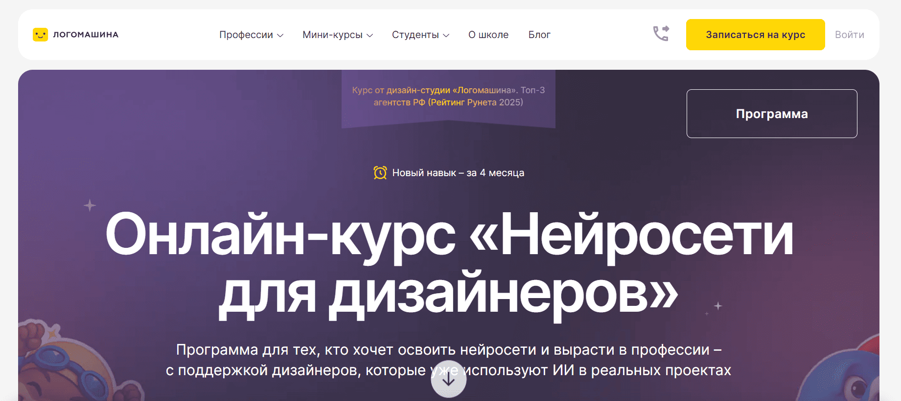- ✅ Официальный сайт: study.logomachine.ru
- 💸 Цена: 66 000 ₽ (скидка 40%).
- 💳 Рассрочка: 5 500 ₽/мес до 12 месяцев без процентов, возможна оплата материнским капиталом и налоговый вычет 13%.
- 📚 Формат: онлайн-уроки по 15–20 минут, практические кейсы, тесты, доступ к закрытому сообществу, разборы с экспертами.
- ⏳ Продолжительность: 4 месяца + 1 год доступа к материалам.
- 📜 Документ: сертификат и удостоверение о повышении квалификации (при наличии образования).
- 📝 Трудоустройство: помощь в формировании портфолио, консультации по развитию и выходу на заказы.
- 🔷 Для кого подходит курс: начинающим дизайнерам, практикующим специалистам, кто хочет освоить инструменты искусственного интеллекта для работы и роста дохода.
Особенности:
Курс помогает освоить навыки работы с популярными нейросетями без глубоких знаний программирования. Обучение строится на практическом применении искусственных интеллектов в реальных проектах, что позволяет сразу внедрять ИИ в рабочую рутину. Студенты получают базовые знания и практический опыт в генерации изображений, текстов и видео. Обучение проходит в удобном темпе, доступ к материалам сохраняется на год. Программа включает изучение более 30 сервисов, среди которых Midjourney, Stable Diffusion, ChatGPT и другие. Каждое задание направлено на создание проектов для портфолио, которые помогают выйти на рынок фриланса или устроиться в студии. После прохождения обучения слушатели получают официальный документ и востребованную профессию с перспективой роста дохода.
Чему учатся студенты:
- Создавать визуальные концепции с помощью Midjourney, Stable Diffusion, Recraft AI и Leonardo AI
- Работать с ChatGPT для текстовых задач и идейных решений
- Автоматизировать рутинные процессы: мокапы, презентации, удаление фонов
- Генерировать уникальный визуальный и текстовый контент
- Составлять эффективные запросы для разных задач
- Собирать проекты для портфолио и правильно их упаковывать
Преподаватели:
- Ксения Есипова — эксперт по Midjourney и ChatGPT, веб-дизайнер
- Мария Коваль — арт-директор, эксперт по Stable Diffusion
- Валерия Краева — цифровой нейро-художник, AI-ресерчер
- Ксения Болдина — эксперт по текстовым нейросетям
- Максим Ким — блогер, владелец канала NEUROMANIA
- Тина Маневская — специалист по генерации видео и аудио
- Тарас Ревякин — эксперт по Midjourney и Stable Diffusion
- Вероника Вагнер — графический дизайнер с опытом 8+ лет
- Иван Кайсаров — эксперт по авторскому праву и нейросетям
Преимущества:
- Изучение более 30 популярных нейросетей в одном курсе
- Практические кейсы и проекты для портфолио
- Поддержка наставников и обратная связь
- Закрытое сообщество единомышленников и экспертов
- Возможность совмещать обучение с работой
- Доступ к материалам и обновлениям программы на год
- Рассрочка без процентов и гибкие варианты оплаты
Отзывы учеников:
Студенты отмечают, что курс помогает быстро освоить использование нейросетей в реальных задачах. Многие подчеркивают рост дохода, появление новых заказов и повышение уверенности в профессии. Отмечают удобный график обучения, сильную поддержку кураторов и практические проекты, которые легко монетизировать.
Перейти на официальный сайт курса3. 🏆 Нейросети для дизайна — АНО ДПО «Образовательные технологии Яндекса» Практикум
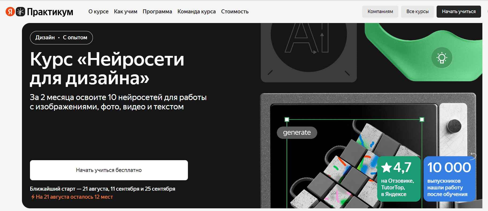- ✅ Официальный сайт: practicum.yandex.ru
- 💸 Цена: 63 000 ₽
- 💳 Рассрочка: доступна 32 500 ₽/мес при помесячной оплате без участия банка, как подписка.
- 📚 Формат: онлайн-курс, воркшопы с экспертами, вопросы и ответы, задания, рабочая тетрадь, практика на реальных примерах.
- ⏳ Продолжительность: 2 месяца (~5 часов в неделю).
- 📜 Документ: удостоверение о повышении квалификации (или сертификат/справка для тех, у кого нет диплома).
- 📝 Трудоустройство: карьерный центр, 10 000 выпускников уже нашли работу (по данным НИУ ВШЭ).
- 🔷 Для кого подходит курс: дизайнеры, маркетологи, менеджеры, предприниматели и все, кто работает с изображениями и текстами.
Особенности:
Программа рассчитана на обучение современным инструментам, которые применяют нейросети и искусственные интеллекты в сфере дизайна. За короткий срок вы сможете освоить базовые и практические навыки для работы с изображениями, видео и текстами. В курс входят популярные нейросети Midjourney, Runway, Stable Diffusion, Recraft AI, Vizcom, ChatGPT и YandexGPT. Участники получают бесплатный доступ к KREA AI с широким функционалом. Преподаватели акцентируют внимание на практическом применении алгоритмов машинного обучения и генеративных моделей. Обучение строится на реальных проектах и практических кейсах. По окончании прохождения обучения выпускники формируют портфолио, где демонстрируют умение использовать ИИ для создания визуального и текстового контента. Формат подойдет и новичкам без навыков программирования, и специалистам, которые хотят внедрить ИИ в рабочие процессы.
Чему учатся студенты:
- Созданию изображений, анимаций и видео при помощи искусственных интеллектов
- Редактированию фото: удаление фона, улучшение качества, ретушь
- Генерации текстов, идей и концепций для маркетинговых кампаний
- Работе с промптами и генеративными ИИ для оптимизации задач
- Сбору и анализу данных о целевой аудитории и конкурентах
- Созданию презентаций, графиков и диаграмм
- Работе над итоговым проектом для портфолио
Преподаватели:
- Любовь Дементьева — исследователь ИИ в Яндекс Крауде, графический дизайнер, внедряет результаты научных разработок.
- Петя Москалёв — арт-директор в Самолёте, дизайнер с опытом более 13 лет, наставник курса «Графический дизайн».
- Илья Макаров — исследователь генеративных нейросетей в Яндекс Крауде, специалист по автоматизации визуального контента.
- Виктория Фоминых — ИИ-дизайнер и графический дизайнер в Яндекс Крауде, интегрирует ИИ-технологии в рабочие процессы.
Преимущества:
- Бесплатный доступ к KREA AI на весь период обучения
- Большая практическая часть: воркшопы, задания и проекты
- Программа обновляется к каждому потоку с учетом развития технологий
- Поддержка кураторов и экспертов Яндекса
- Возможность частичной оплаты и рассрочки
- Помощь в трудоустройстве и карьерный центр
- Дополнительный курс «Основы дизайна в Figma» в подарок
Отзывы учеников:
Выпускники отмечают структурированность программы, доступное объяснение сложных тем и практическую направленность. Многие подчеркивают, что курс помогает научиться применять нейросети в реальных проектах, создавать качественный визуальный и текстовый контент и быстрее решать рабочие задачи. Особенно выделяют воркшопы и поддержку наставников, которые делают обучение максимально эффективным и мотивирующим.
Перейти на официальный сайт курса4. Нейросети для дизайнера — Pentaschool
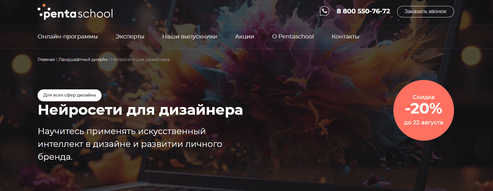- ✅ Официальный сайт: pentaschool.ru
- 💸 Цена: от 17 500 ₽ (со скидкой 20%).
- 💳 Рассрочка: от 4 375 ₽/мес - 0% без переплат на 2 месяца, либо до 12 месяцев с комиссией.
- 📚 Формат: видеолекции, практические задания, тесты, подкасты, лонгриды, обратная связь от эксперта.
- ⏳ Продолжительность: 18 недель.
- 📜 Документ: удостоверение о повышении квалификации или сертификат.
- 📝 Трудоустройство: повышение ценности специалиста на рынке, рост дохода до 150–300 тыс. ₽ в месяц.
- 🔷 Для кого подходит курс: дизайнеры всех направлений, новички, креаторы, бренд-дизайнеры.
Особенности:
Программа обучения создана для тех, кто хочет освоить инструменты искусственного интеллекта без навыков программирования. Студенты изучают применение нейросетей для разработки концептов, текстового и визуального контента. В процессе прохождения обучения участники научатся автоматизировать рабочие задачи, что позволяет тратить меньше времени на рутину и больше на творчество. Образовательная платформа предлагает удобный график обучения — вы сможете совмещать практику с основной работой. Курс помогает внедрить ИИ в проекты, а также использовать современные алгоритмы машинного обучения для анализа и оптимизации процесса создания дизайна. По итогам студенты смогут освоить базовые и прикладные инструменты, которые уже применяют нейросети в сфере дизайна и маркетинга.
Чему учатся студенты:
- Понимать основы работы нейросетей и моделей машинного обучения
- Освоить инструменты для генерации текстов, изображений, видео и аудио
- Создавать и редактировать промпты для работы с ИИ
- Научиться использовать ChatGPT и другие популярные сервисы
- Применять ИИ для автоматизации задач и развития личного бренда
- Формировать портфолио с проектами, созданными с помощью нейросетей
Преподаватели:
- Вероника Черменская — эксперт по внедрению ИИ в бизнес-процессы, магистр поведенческой экономики и психологии, опыт работы в проектах АСИ, Сколково, цифровой платформе МСП.
Преимущества:
- Подходит как новичкам, так и практикующим дизайнерам
- Доступ к видеолекциям и материалам остаётся бессрочно
- Обучение строится на практических кейсах и реальных проектах
- 5500 студентов прошли обучение, 91% рекомендуют программу
- Поддержка преподавателя и обратная связь по заданиям
- Возможность оплаты в рассрочку без переплат
- Удобный онлайн-формат без жёсткого графика
Отзывы учеников:
Студенты отмечают простое объяснение сложных тем и полезные практические задания. Положительные отзывы связаны с тем, что курс помогает быстро освоить базовые навыки работы с ИИ и применить их в реальных проектах. Также хвалят поддержку преподавателя и удобный формат обучения в любое время.
Перейти на официальный сайт курса5. Фабрика AI Filmmaker — Хохлов Сабатовский KHS
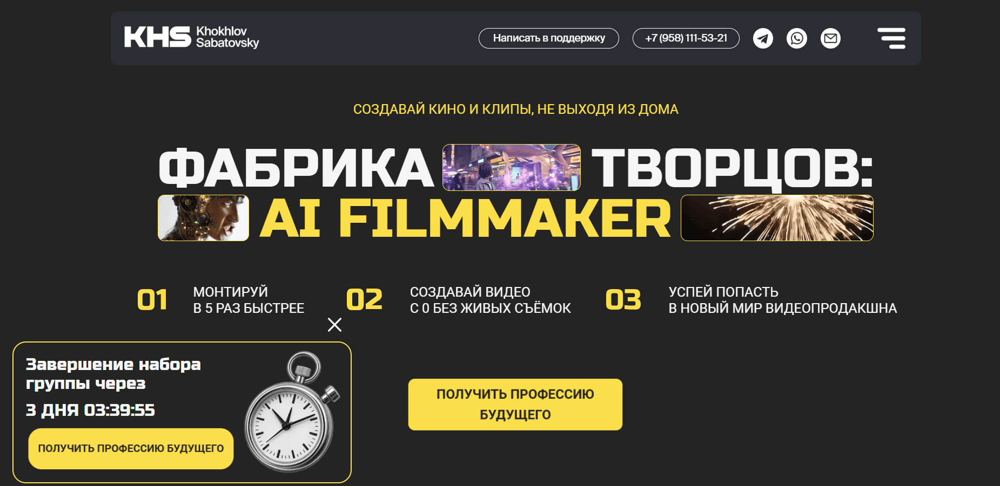- ✅ Официальный сайт: sabatovsky.com
- 💸 Цена: от 71 143 ₽ (со скидкой).
- 💳 Рассрочка: доступна от 5 929 ₽/мес, есть дополнительные скидки при полной оплате.
- 📚 Формат: онлайн обучение, включает видеоуроки, пошаговые туториалы, практические задания, финальный проект, участие в фестивале.
- ⏳ Продолжительность: от 14 дней до нескольких месяцев, в зависимости от темпа прохождения.
- 📜 Документ: сертификат об окончании программы.
- 📝 Трудоустройство: лучшие студенты получают приглашение в продакшн KHS и возможность работать с брендами.
- 🔷 Для кого подходит курс: для новичков, которые хотят освоить базовые навыки создания видео, и для практикующих монтажеров, желающих внедрить ИИ в рабочие процессы.
Особенности:
Программа обучения построена вокруг использования искусственных интеллектов в сфере видеопродакшна. Студенты осваивают популярные нейросети, которые применяют ИИ для генерации изображений, озвучки, музыки и сложных визуальных эффектов. Курс сочетает теорию и практические проекты, что позволяет быстро освоить инструменты и научиться создавать контент профессионального уровня. В процессе обучения студенты выполняют реальные проекты, получают обратную связь и могут попасть в команду продакшна. Программа ориентирована на тех, кто хочет ускорить процесс создания видео в 5 раз, работать с визуальными нейросетями и научиться создавать клипы, мультфильмы и рекламные ролики без съемок. Особое внимание уделяется практическим навыкам и внедрению технологий машинного обучения для генерации контента.
Чему учатся студенты:
- Создавать видео с ИИ от идеи до финального монтажа
- Использовать графическую нейросеть для генерации сцен и эффектов
- Научиться применять нейросети для озвучки и музыки
- Делать киношные переходы и сложную графику
- Работать с аватарами и синхронизированными голосами
- Применять алгоритмы машинного обучения для оптимизации продакшна
Преподаватели:
- Слава Хохлов — создатель медиа-платформы KHS, преподаватель с опытом более 10 лет
- Влад Сабатовский — соавтор программы, эксперт по видеопроизводству
- Женя Тен — специалист по нейросетям и современным инструментам видеомонтажа
- Тимур Бекмамбетов — приглашенный эксперт, режиссер и продюсер
Преимущества:
- Освоение базовых и продвинутых инструментов нейросетей
- Возможность создать 4+ проекта для портфолио
- Поддержка кураторов и индивидуальная обратная связь
- Участие в Фестивале Творцов с реальными шансами на призы
- Практика на реальных проектах во время прохождения обучения
- Помощь в трудоустройстве и возможность попасть в продакшн KHS
- Изучение актуальных моделей машинного обучения 2025 года
Отзывы учеников:
Студенты отмечают, что программа помогает быстро освоить практические навыки и применять нейросети для решения реальных задач. Выпускники подчеркивают рост дохода после прохождения курсов, возможность работать с брендами и создавать качественный контент без съемок. Среди плюсов также выделяют практические кейсы, поддержку наставников и удобный график обучения.
Перейти на официальный сайт курса6. Нейросети для дизайнеров – Бруноям
- ✅ Официальный сайт: brunoyam.com
- 💸 Цена: 19 900 ₽ (33 500 ₽ без скидки). Скидка 40%.
- 💳 Рассрочка: 1 658 ₽ в месяц на 12 месяцев без переплаты.
- 📚 Формат: онлайн-занятия, видеоуроки, практические задания, чат с наставником, дополнительные материалы.
- ⏳ Продолжительность: 2 месяца.
- 📜 Документ: сертификат школы Бруноям.
- 📝 Трудоустройство: помощь в создании резюме, портфолио и подготовке к собеседованиям.
- 🔷 Для кого подходит курс: начинающим и практикующим дизайнерам, желающим освоить инструменты искусственного интеллекта.
Особенности:
Программа создана в 2025 году и регулярно обновляется каждые 3 месяца. Обучение построено на практическом применении популярных нейросетей, где 85% времени занимает выполнение заданий. Студенты учатся работать с графическими и текстовыми моделями машинного обучения, осваивают генерацию контента и автоматизацию задач. Каждый слушатель получает поддержку наставника без ограничений и доступ к удобной образовательной платформе. Программа помогает внедрить ИИ в дизайн-процессы, оптимизировать рабочие задачи и создавать уникальный визуальный контент. Участники курса получают практический опыт работы с реальными проектами, что повышает их ценность для работодателей. Благодаря такому формату можно освоить базовые и продвинутые навыки без лишней теории и с упором на реальные кейсы.
Чему учатся студенты:
- Работать с текстовыми моделями: ChatGPT, YaGPT и другими
- Создавать изображения и концепт-арты с помощью Midjourney, DALL-E, Kandinsky, Stable Diffusion
- Применять алгоритмы машинного обучения в Photoshop
- Автоматизировать задачи с помощью ИИ-сервисов
- Использовать графические и генеративные нейросети для создания контента
- Генерировать тексты, изображения, анимации и презентации
Преподаватели:
- Дмитрий Васильев — директор отдела маркетинга и PR
- Анна Абрамова — специалист в области интеллектуальных систем
- Мария Голубцова — моушн-дизайнер «ЛЕН ТВ»
Преимущества:
- 85% обучения занимает практика на реальных проектах
- Индивидуальная поддержка наставников и команды
- Курс помогает освоить инструменты искусственного интеллекта без навыков программирования
- Регулярное обновление программы и доступ к новым материалам
- Гибкий график обучения и возможность учиться из любой точки мира
- Сертификат, который можно добавить в резюме
Отзывы учеников:
Студенты отмечают, что курс помогает научиться применять ИИ в реальных проектах и уверенно работать с нейросетями. Многие подчеркивают ценность практических заданий и отзывчивость наставников. Среди плюсов часто выделяют удобный формат обучения, доступность материалов и возможность задать вопрос в чате поддержки. По отзывам выпускников, обучение помогает быстрее решать рабочие задачи и создавать уникальный контент с помощью искусственных интеллектов.
Перейти на официальный сайт курса7. Нейросетевые эффекты в графике — Bang Bang Education
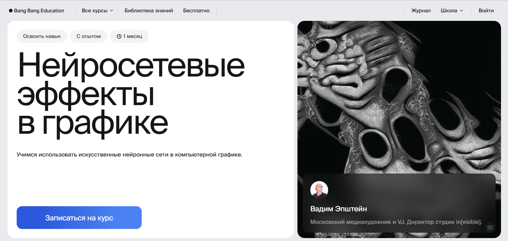- ✅ Официальный сайт: bangbangeducation.ru
- 💸 Цена обучения: 30 000 ₽.
- 💳 Рассрочка: доступна 5 000 ₽ в месяц на 6 месяцев.
- 📚 Формат: онлайн-лекции, вебинары, практические задания, доступ к чатам и материалам.
- ⏳ Продолжительность: 1 месяц, 4 недели.
- 📜 Документ: сертификат школы Bang Bang Education.
- 📝 Трудоустройство: работы студентов используются в портфолио, помощь с развитием в профессии.
- 🔷 Для кого подходит курс: художникам, дизайнерам, CG-специалистам и всем, кто интересуется визуальными нейросетями и графикой.
Особенности:
Программа курса сочетает теорию и практику, что позволяет студентам изучить основы машинного обучения и применение искусственного интеллекта в графике. Участники учатся работать с Google Colab, осваивают популярные библиотеки для визуальных нейросетей и создают изображения с помощью алгоритмов машинного обучения. Курс подходит как новичкам, так и тем, кто уже имеет базовые навыки программирования и хочет углубиться в сферу искусственного интеллекта. Обучение строится на реальных примерах и практических кейсах. В рамках курса проходят вебинары по сверточным и состязательным сетям, а также занятия по трансформации изображений. Выпускники смогут внедрить ИИ в собственные проекты, создавать уникальный визуальный контент и решать реальные задачи в сфере CG и видеографики.
Чему учатся студенты:
- Понимать устройство и принципы работы нейронных сетей
- Работать с популярными библиотеками и инструментами для генерации изображений
- Создавать и обучать собственные модели машинного обучения
- Применять ИИ в визуальных проектах и видеографике
- Решать практические задачи с помощью нейросетевых инструментов
Преподаватели:
- Вадим Эпштейн — московский медиахудожник и VJ, директор студии in[visible], участник международных фестивалей, исследователь медиа и арт-программирования.
Преимущества:
- Совмещение теории и практических проектов
- Обучение на основе реальных кейсов и задач
- Поддержка кураторов и обратная связь в чатах
- Доступ к комьюнити дизайнеров и художников
- Использование готовых инструментов без глубоких знаний программирования
- Возможность собрать портфолио из собственных работ
Отзывы учеников:
Студенты отмечают, что курс дает много полезной информации и помогает разобраться в сложных темах даже новичкам. Положительно выделяют практические задания, четкую подачу материала и возможность применять ИИ в реальных проектах. Многие подчеркивают, что курс помогает освоить новые навыки и создавать качественный визуальный контент.
Перейти на официальный сайт курса8. Нейросети для дизайнеров и художников – Школа дизайна НИУ ВШЭ
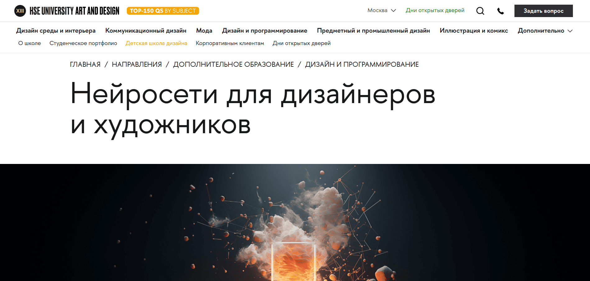- ✅ Официальный сайт: design.hse.ru
- 💸 Цена обучения: 50 000 ₽.
- 💳 Рассрочка: возможна двумя или тремя платежами.
- 📚 Формат: очные занятия 2 раза в неделю, практические задания, работа над проектом.
- ⏳ Продолжительность: 2 месяца (14–16 занятий).
- 📜 Документ: удостоверение о повышении квалификации НИУ ВШЭ.
- 📝 Трудоустройство: курс помогает развить востребованные навыки и пополнить цифровое портфолио.
- 🔷 Для кого подходит курс: для начинающих и практикующих дизайнеров, художников, промпт-дизайнеров, арт-директоров и менеджеров проектов.
Особенности:
Программа сочетает изучение генеративных нейросетей и основ программирования, что позволяет студентам освоить базовые навыки работы с искусственными интеллектами. Обучение строится на практических занятиях с куратором и самостоятельной разработке проекта, включающего 20 иллюстраций. Участники курса научатся применять нейросети в сфере дизайна, создавать визуальный контент и автоматизировать задачи. Гибкий график обучения позволяет совмещать курс с работой. Студенты работают над реальными проектами и получают опыт, который используют в профессиональной деятельности. Программа подойдет тем, кто хочет освоить инструменты ИИ с нуля и внедрить их в творческую практику. После прохождения курсов выпускники получают документ установленного образца, который подтверждает квалификацию. Средний возраст слушателей — 34 года, и курс успешно осваивают даже без высшего образования.
Чему учатся студенты:
- Использовать инструменты нейросетей для генерации изображений и айдентики
- Формулировать и улучшать запросы для ИИ
- Применять алгоритмы машинного обучения для автоматизации процессов
- Создавать визуальный контент для брендов и маркетинговых материалов
- Интегрировать ИИ в рабочие процессы и решать реальные задачи
Преподаватели:
- Булгаков Вадим — дизайнер, арт-директор, digital-продюсер; руководил проектами Lapka, Baselance, Papaton Kids, CardPlace, дизайнер Лаборатории дизайна НИУ ВШЭ.
Преимущества:
- Практическое обучение с упором на реальные проекты
- Поддержка куратора и обратная связь
- Гибкая система оплаты и скидки для студентов и выпускников ВШЭ
- Возможность собрать цифровое портфолио с использованием ИИ
- Доступ к современным инструментам и методам генерации контента
- Обучение навыкам, востребованным в дизайн-индустрии
Отзывы учеников:
Студенты отмечают вовлеченность преподавателей, высокое качество практических занятий и возможность освоить базовые навыки работы с искусственными интеллектами даже без опыта программирования. Многие подчеркивают ценность итогового проекта и полезность реальных кейсов, которые помогают эффективно использовать ИИ в рабочих процессах.
Перейти на официальный сайт курса9. Нейросети для генерации визуального контента — OTUS
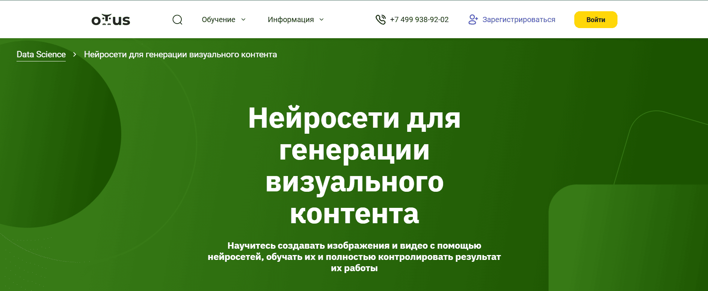- ✅ Официальный сайт: otus.ru
- 💸 Цена: уточняется на сайте.
- 💳 Рассрочка: доступна.
- 📚 Формат: онлайн-занятия, вебинары, домашние задания, проектные работы, доступ к записям и материалам.
- ⏳ Продолжительность: от 2 месяцев, 2 вебинара по 2 ак. часа в неделю.
- 📜 Документ: сертификат OTUS и удостоверение о повышении квалификации.
- 📝 Трудоустройство: помощь в составлении резюме, добавление в базу работодателей, карьерные консультации.
- 🔷 Для кого подходит курс: художникам, дизайнерам, маркетологам, разработчикам, продюсерам, начинающим в сфере машинного обучения и всем, кто хочет освоить генеративные нейросети.
Особенности:
Курс помогает освоить базовые принципы работы с популярными нейросетями, которые создают изображения и видео. Студенты учатся применять искусственные интеллекты для генерации визуального контента, изучают алгоритмы машинного обучения и текстовые модели. Программа сочетает практические задания и теорию, что позволяет научиться использовать графическую нейросетью максимально эффективно. В процессе обучения участники создают проекты, которые можно включить в портфолио. Обучение строится в удобном формате: вебинары и записи остаются доступными. Курс помогает разобраться в возможностях ИИ и научиться работать с визуальными нейросетями в реальных задачах. Студенты получают практические навыки и узнают примеры использования генеративных моделей в разных сферах.
Чему учатся студенты:
- Создавать изображения и видео с помощью нейросетей
- Научиться использовать Stable Diffusion и Kandinsky
- Освоить инструменты для генерации текстов и изображений
- Модифицировать архитектуру нейронных сетей
- Понимать основы машинного обучения и компьютерного зрения
- Решать задачи генерации контента в практических проектах
Преподаватели:
- Валерия Ефимова — к.т.н., руководитель отдела компьютерного зрения Statanly
- Мария Румянцева — разработчик компьютерного зрения Statanly
- Иван Жарский — Senior CV Developer, Team Lead Statanly
Преимущества:
- Практические задания и реальные проекты
- Поддержка преподавателей и активное сообщество в Telegram
- Возможность совмещать обучение с работой
- Доступ к материалам и видеозаписям после прохождения курса
- Карьерная поддержка и помощь с трудоустройством
- Фокус на реальных кейсах и применении ИИ в бизнесе
Отзывы учеников:
Студенты отмечают доступность материала, практическую направленность заданий и полезные проекты, которые можно показать работодателям. Многие положительно отзываются о поддержке кураторов и экспертов, а также о возможности сразу применять знания в рабочих задачах.
Перейти на официальный сайт курсаТОП-5 онлайн-курсов по нейросетям для Маркетологов
- 🏆 Нейросети для маркетинга — Нетология
- 🏆 Нейросети для маркетологов – Бруноям
- 🏆 Нейросети для маркетолога — MAED Academy
- ИИ-менеджер по маркетплейсам — Академия Eduson
- Нейросети для маркетинга и продаж — ИНФОХИТ
Отличительные преимущества каждой дистанционной программы обучения по нейросетям для Маркетологов
| № | Курс и школа | Отличительные преимущества | |
|---|---|---|---|
| 🥇 | Нейросети для маркетинга — Нетология |
Удостоверение о повышении квалификации государственного образца. Сборник промптов в подарок. Гибкий график обучения (вечерние занятия). Практика на воркшопах с экспертами. Скидка 40% и возможность налогового вычета. |
Перейти |
| 🥈 | Нейросети для маркетологов — Бруноям |
85% практики и проектов. Поддержка наставников 24/7 и проверка с обратной связью. Программа обновляется каждые 3 месяца. Бонусный курс «Учись учиться». Сертификат школы для резюме. |
Перейти |
| 🥉 | Нейросети для маркетолога — MAED Academy |
Изучение более 20 нейросетей. Более 100 готовых промптов, шаблонов и гайдов. 4 воркшопа с практикой и разбором кейсов. Обновлённая в июне 2025 программа. Закрытый чат с экспертами и быстрая обратная связь. |
Перейти |
| 4 | ИИ-менеджер по маркетплейсам — Академия Eduson |
Два диплома: удостоверение гос. образца и диплом Академии Eduson. 127 уроков, 24 кейса и 50 чек-листов. AI-ассистент для ускорения задач в 4 раза. Бессрочный доступ к материалам. Гарантия возврата денег при отсутствии трудоустройства. |
Перейти |
| 5 | Нейросети для маркетинга и продаж — ИНФОХИТ |
Скидка 54% (экономия более 50 000 ₽). Юридические аспекты применения ИИ. Создание чат-ботов для бизнеса. Автоматизация до 90% рутинных процессов. Гибкая рассрочка и кешбэк до 10%. |
Перейти |
1. 🏆 Нейросети для маркетинга — Нетология
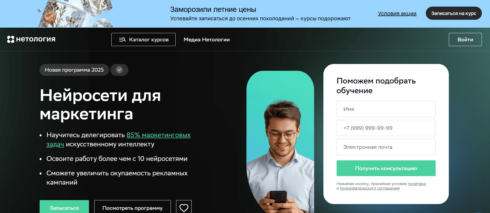- ✅ Официальный сайт: netology.ru
- 💸 Цена обучения: 24 500 ₽ (со скидкой).
- 💳 Рассрочка: 2 150 ₽ до 24 месяцев без переплат, либо единым платежом со скидкой 5%.
- 📚 Формат: вебинары, лонгриды, практические задания, воркшопы, видеолекции, тесты.
- ⏳ Продолжительность: 1 месяц (8 часов теории и 22 часа практики).
- 📜 Документ: удостоверение о повышении квалификации установленного образца.
- 📝 Трудоустройство: помощь в оптимизации навыков, возможность налогового вычета и применения полученных знаний в реальных проектах.
- 🔷 Для кого подходит курс: интернет-маркетологам, предпринимателям, таргетологам, SMM-специалистам, блогерам и управленцам.
Особенности:
Программа построена на практическом применении искусственного интеллекта и позволяет делегировать до 85% маркетинговых задач. В процессе обучения студенты изучают популярные нейросети, включая ChatGPT, YandexGPT, MidJourney и DALLE-3. Занятия проходят по вечерам, что удобно для работающих специалистов. Обучение строится на реальных кейсах и задачах, что помогает освоить инструменты без отрыва от основной деятельности. Участники курса научатся создавать тексты, визуальный контент, видео и персонализированные рекламные материалы с помощью ИИ. Практика на воркшопах с экспертами помогает глубже понять применение нейросетей. Записи всех занятий остаются в личном кабинете, что позволяет возвращаться к материалу в любое время. После окончания курса студенты получают удостоверение государственного образца и сборник промптов в подарок.
Чему учатся студенты:
- Осваивать применение искусственного интеллекта в маркетинговых стратегиях
- Создавать тексты для соцсетей, лендингов и рекламных креативов
- Формировать контент-планы и рубрикаторы
- Анализировать целевую аудиторию и рынок с помощью нейросетей
- Создавать изображения и видео с помощью графических нейросетей
- Проводить SWOT-анализ и находить слабые места стратегий
- Генерировать персонализированный контент с использованием ИИ
Преподаватели:
- Леонид Ткачев — копирайтер, маркетолог, эксперт по применению ИИ в SMM и копирайтинге
- Иван Юхарин — основатель студии ИИ-разработки AIPL
- Павел Баракаев — Head of Digital в click.ru, предприниматель и основатель маркетинговой студии
Преимущества:
- Скидка 40% при оплате до 19 августа
- Возможность вернуть деньги на любом этапе обучения
- Государственная лицензия и удостоверение о повышении квалификации
- Гибкий график обучения — до трёх занятий в неделю после 19:00
- Практика на реальных задачах и поддержка кураторов
- Возможность рассрочки до 24 месяцев без переплат
- Сборник готовых промптов в подарок всем участникам
Отзывы учеников:
Студенты отмечают практическую направленность курса и доступное объяснение сложных тем. Многие подчеркивают ценность работы с реальными кейсами и возможность внедрить ИИ в собственные проекты. Также положительно оценивают поддержку кураторов и экспертов, а записи занятий помогают повторять материал в удобное время.
Перейти на официальный сайт курса2. 🏆 Нейросети для маркетологов – Бруноям
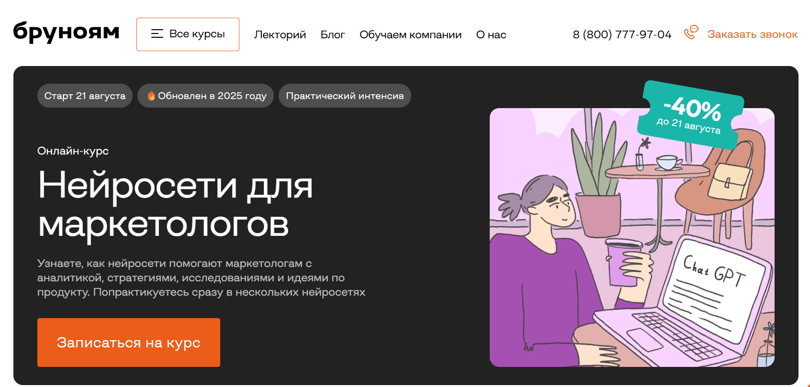- ✅ Официальный сайт: brunoyam.com
- 💸 Цена обучения: от 19 900 ₽ (со скидкой 40%).
- 💳 Рассрочка: от 1 658 ₽ в месяц на 12 месяцев без переплат.
- 📚 Формат: онлайн-занятия, видеоуроки, практические задания, проекты, поддержка наставника.
- ⏳ Продолжительность: 2 месяца.
- 📜 Документ: сертификат школы Бруноям.
- 📝 Трудоустройство: карьерный центр помогает с резюме, портфолио и собеседованиями.
- 🔷 Для кого подходит курс: для новичков, желающих изучать нейросети, и специалистов, которые хотят усилить практические навыки.
Особенности:
Программа обновлена в 2025 году и полностью адаптирована под современные требования маркетинга с использованием искусственных интеллектов. Основное внимание уделяется практическим навыкам и применению нейронных сетей в реальных задачах бизнеса. Более 85% времени занимают практические проекты, где студенты научатся эффективно использовать популярные нейросети. Обучение строится просто и структурно, без лишней теории. В процессе прохождения обучения доступна поддержка наставников в чате. Все задания проверяются с развернутой обратной связью. Платформа удобна и позволяет учиться в любом удобном графике. Курс подходит тем, кто хочет освоить инструменты генеративных моделей, научиться создавать контент и автоматизировать рутинные процессы.
Чему учатся студенты:
- Работать с текстовыми моделями: ChatGPT, YaGPT и другими
- Создавать маркетинговые стратегии с помощью ИИ
- Использовать нейросети для оптимизации бюджета и ROI
- Автоматизировать процессы создания контент-планов
- Работать с графической нейросетью для генерации изображений и логотипов
- Применять ИИ для анализа данных и визуализации
- Создавать видео и аудиоматериалы с помощью генеративных моделей
Преподаватели:
- Дмитрий Васильев — директор отдела маркетинга и PR
- Анна Абрамова — специалист в области интеллектуальных систем
- Никита Долгих — ведущий SEO-специалист компании «Вебзайм»
Преимущества:
- Обновляемая программа каждые 3 месяца
- 85% практических занятий и кейсов
- Личная поддержка наставников 24/7
- Гарантия возврата денег в течение месяца
- Возможность оплаты от юрлица
- Бесплатный бонусный курс «Учись учиться»
- Сертификат, повышающий ценность резюме
Отзывы учеников:
Студенты отмечают структурированную подачу материала, компетентность преподавателей и большое количество практики. Отдельно выделяют, что обучение помогает научиться применять ИИ для генерации текстов и изображений, а также использовать нейросети для решения повседневных рабочих задач. Многие подчеркивают, что полученные знания сразу удалось внедрить в рабочие проекты.
Перейти на официальный сайт курса3. 🏆 Нейросети для маркетолога — MAED Academy
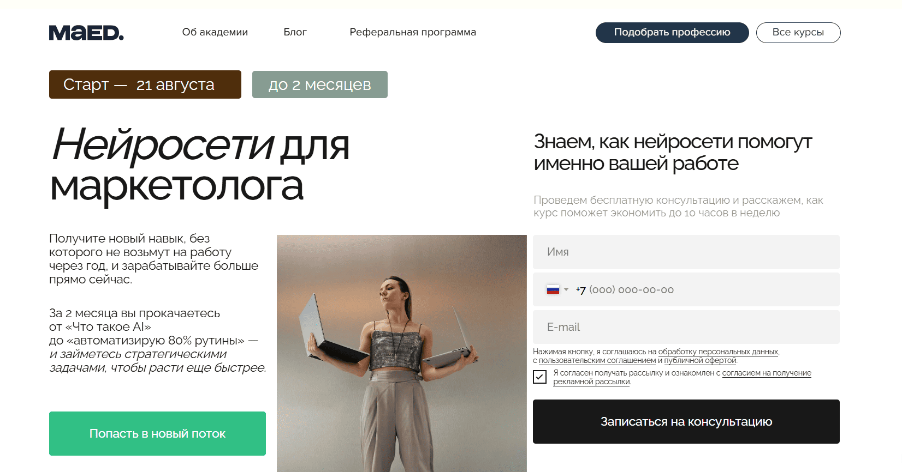- ✅ Официальный сайт: maed.ru
- 💸 Цена обучения: от 20 000 ₽
- 💳 Рассрочка: доступна от 1 667 ₽/мес
- 📚 Формат: онлайн-курс, включает видеоуроки, домашние задания, 25+ практических заданий, 50+ уроков, 4 воркшопа, проекты и закрытый чат
- ⏳ Продолжительность: 2 месяца (4–8 часов в неделю)
- 📜 Документ: сертификат академии
- 📝 Трудоустройство: проекты в портфолио, практические кейсы и помощь наставников для карьерного роста
- 🔷 Для кого подходит курс: для начинающих специалистов и маркетологов, желающих внедрить ИИ в рабочие процессы, а также предпринимателей
Особенности:
Программа разработана с акцентом на практическое применение искусственных интеллектов в маркетинге. Студенты проходят обучение на реальных кейсах и осваивают навыки, которые уже применяют нейросети в компаниях разных сфер. В курс включено изучение более 20 популярных нейросетей, среди которых ChatGPT, Midjourney, Stable Diffusion и другие. Участники учатся работать с текстовым контентом, создавать изображения и видео, автоматизировать рутинные задачи и строить стратегию продвижения. Поддержка кураторов и экспертов позволяет быстрее освоить инструменты и внедрить ИИ в свои рабочие процессы. Каждое задание проверяется наставником с обратной связью в течение 48 часов. После прохождения обучения студенты смогут внедрить ИИ в маркетинговые стратегии и оптимизировать процессы, экономя десятки часов еженедельно.
Чему учатся студенты:
- Использованию более 20 нейросетей для маркетинговых задач
- Формулировке эффективных запросов (промптов) и работе с текстовыми моделями
- Созданию контент-плана, брендбука, текстов и визуального контента
- Разработке маркетинговой стратегии и воронки продаж
- Автоматизации отчетности, email-рассылок и рекламных кампаний с помощью ИИ
- Созданию ИИ-ассистентов, чат-ботов и анализу данных с применением машинного обучения
Преподаватели:
- Михаил Суворов — технический менеджер продуктов искусственного интеллекта в X5 Tech, ex-JETSET AGENCY
- Ангелина Вовк — Product Marketing Manager в MAED, ex-CMO Додо Пицца и Ginza Group
- Ольга Павлюкова — эксперт по внедрению ИИ и основатель AI Business Lab
- Богдан Шаталов — директор по разработке в SMM-агентстве ВИНОУ, специалист по чат-ботам
- Дамир Халилов — основатель первого в России SMM-агентства GreenPR, преподаватель ВШЭ и Сколково
- Ирина Егорова — маркетолог с опытом работы с интернет-бизнесом с оборотом 2 млрд руб.
Преимущества:
- Практические задания на базе реальных кейсов
- Изучение более 100 готовых промптов, шаблонов и гайдов
- Закрытый чат с экспертами и быстрая обратная связь
- 4 воркшопа с практикой и разбором реальных задач
- Обновленная в июне 2025 программа с учетом новых технологий
- Возможность внедрить ИИ в собственный бизнес или компанию
Отзывы учеников:
Выпускники отмечают доступность подачи материала и акцент на практическом применении. Многие подчеркивают ценность обратной связи от экспертов и удобный график обучения. Студенты положительно отзываются о поддержке кураторов и полезных материалах, которые помогают эффективно использовать ИИ в маркетинговых задачах.
Перейти на официальный сайт курса4. ИИ-менеджер по маркетплейсам — Академия Eduson
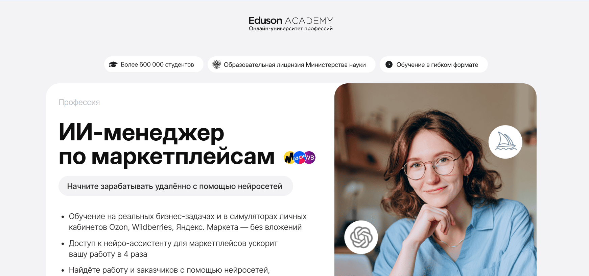- ✅ Официальный сайт: eduson.academy
- 💸 Цена обучения: от 69 672 ₽ со скидкой до -60%.
- 💳 Рассрочка: от 5806 ₽ в месяц, беспроцентная на 12 месяцев.
- 📚 Формат: онлайн-уроки, практические задания, бизнес-кейсы, итоговый проект, доступ к AI-ассистенту.
- ⏳ Продолжительность: от 2 месяцев, бессрочный доступ к материалам.
- 📜 Документ: удостоверение о повышении квалификации и диплом, подтверждённый Сколково.
- 📝 Трудоустройство: помощь в составлении резюме, карьерная консультация, доступ к сервису FindTheJob.
- 🔷 Для кого подходит курс: новичкам без опыта, предпринимателям, специалистам e-commerce, тем, кто ищет удалённую работу и гибкий график.
Особенности:
Программа сочетает обучение с практическими кейсами и моделированием личных кабинетов Wildberries, Ozon и Яндекс.Маркета. Студенты получают доступ к интеллектуальному ассистенту, который ускоряет выполнение задач в 4 раза. Курс основан на реальных бизнес-ситуациях и помогает освоить навыки применения искусственных интеллектов в продажах, логистике и аналитике. Материалы регулярно обновляются, а доступ остаётся навсегда. Поддержка куратора доступна 365 дней в году. Студенты учатся использовать популярные нейросети для анализа, создания контента и оптимизации процессов. После прохождения обучения слушатели уверенно внедряют ИИ в работу и выходят на высокий доход в сфере e-commerce.
Чему учатся студенты:
- Выбирать маркетплейсы и анализировать конкурентов с помощью нейросетей
- Создавать и оптимизировать карточки товаров с использованием генеративных ИИ
- Составлять юнит-экономику и финансовые модели продаж
- Разрабатывать стратегии продвижения и логистики
- Использовать алгоритмы машинного обучения для прогнозирования спроса
- Работать с личными кабинетами Wildberries, Ozon и Яндекс.Маркета
- Автоматизировать рутинные процессы и внедрять ИИ-решения в бизнес
Преподаватели:
- Татьяна Петрищева — руководитель управления товарным каталогом в «МегаМаркете»
- Дмитрий Форсайт — CEO сервиса аналитики «Moneyplace», сооснователь реалити-шоу «Битва селлеров»
- Антон Сиземин — руководитель отдела продаж в «МегаМаркете», 20+ лет опыта
- Мария Зубарева — победитель CX Awards, эксперт в digital и бизнес-коммуникациях
- Никита Плотников — директор отдела снабжения Ozon, спикер форума «Онлайн-торговля»
- Андрей Гумаров — экс-руководитель e-commerce в Kärcher, Marks & Spencer
- Павел Ладуткин — руководитель e-commerce в Wavemaker, опыт в Unilever и Essity
- Елена Васильева — основатель «Форос Аудит», 30+ лет опыта в бухгалтерии
- Роман Воробьев — предприниматель e-commerce, оборот продаж 5 млн ₽
- Александр Барсуков — руководитель e-commerce в Amer Sports Russia
Преимущества:
- Два диплома: государственное удостоверение и диплом Академии Eduson
- Интерактивная платформа с 127 уроками, 24 кейсами и 50 чек-листами
- Доступ к AI-ассистенту для автоматизации задач
- Практика на реальных проектах и итоговый дипломный кейс
- Поддержка куратора на протяжении всего обучения
- Бессрочный доступ и регулярные обновления курса
- Гибкий график занятий без строгих дедлайнов
- Возможность вернуть деньги, если не получится трудоустроиться
Отзывы учеников:
Студенты отмечают удобный формат онлайн-занятий и бессрочный доступ к материалам. Многие подчеркивают практическую ценность заданий и тренажёров, а также реальную помощь преподавателей-практиков. Отмечают возможность совмещать обучение с работой или декретом. Выпускники пишут, что навыки применения ИИ помогают им быстрее находить клиентов и повышать доход.
Перейти на официальный сайт курса5. Нейросети для маркетинга и продаж — ИНФОХИТ
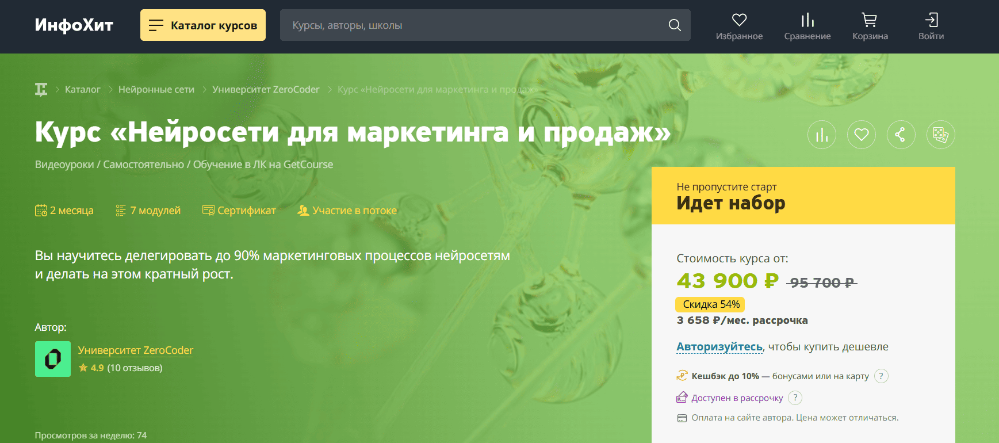- ✅ Официальный сайт: info-hit.ru
- 💸 Цена: от 43 900 ₽ (скидка 54% от 95 700 ₽).
- 💳 Рассрочка: от 3 658 ₽/мес., доступна онлайн.
- 📚 Формат: видеоуроки, обучение в личном кабинете GetCourse, домашние задания с проверкой, поддержка куратора, техническая помощь.
- ⏳ Продолжительность: 2 месяца (7 модулей), доступ к материалам 4 месяца.
- 📜 Документ: сертификат по окончании обучения.
- 📝 Трудоустройство: повышение компетенций для карьерного роста и бизнес-задач.
- 🔷 Для кого подходит курс: маркетологам, предпринимателям, SMM-специалистам, копирайтерам, управленцам и новичкам в сфере искусственного интеллекта.
Особенности:
Обучение строится по четкому расписанию и направлено на практическое применение искусственных интеллектов в маркетинге и продажах. Студенты осваивают базовые навыки работы с популярными нейросетями и учатся автоматизировать до 90% рутинных процессов. Курс подойдет тем, кто хочет внедрить ИИ в рабочие задачи, освоить инструменты генерации контента и научиться использовать ChatGPT и Midjourney для бизнеса. Включены практические кейсы и задания, помогающие закрепить знания на реальных проектах. Программа уделяет внимание юридическим аспектам использования искусственного интеллекта. Сопровождение кураторов позволяет максимально эффективно пройти обучение. В результате участники получают практический опыт применения ИИ для продвижения товаров и услуг.
Чему учатся студенты:
- Применению нейросетей для маркетинговых стратегий
- Созданию рекламных текстов и визуального контента
- Анализу данных и целевой аудитории с помощью алгоритмов машинного обучения
- Работе с ChatGPT и Midjourney
- Созданию чат-ботов в Telegram, Avito и Битрикс24
- Монетизации навыков работы с искусственным интеллектом
- Пониманию юридических основ применения ИИ
Преподаватели:
- Университет ZeroCoder — ведущий онлайн-университет СНГ по созданию цифровых решений без навыков программирования
Преимущества:
- Актуальные знания по применению искусственного интеллекта в бизнесе
- Сочетание теории и практических кейсов
- Поддержка кураторов и технической службы
- Сертификат, подтверждающий освоенные навыки
- Возможность освоить инструменты без навыков программирования
- Практические задания с проверкой
- Гибкая рассрочка и кешбэк до 10%
Отзывы учеников:
Студенты отмечают доступность объяснений, удобный формат обучения и практическую пользу от прохождения курсов. Чаще всего выделяют простоту освоения инструментов, поддержку кураторов и быстрые результаты от внедрения полученных знаний в работу.
Перейти на официальный сайт курсаТОП-3 онлайн-курсов по нейросетям для Создания Видео
- 🏆 Нейросети для работы с графикой и видео — Skillbox
- 🏆 Нейросети для создания видео и музыки — Нетология
- 🏆 AI FilmMaker: создание видео с нейросетями — KHS Хохлов Сабатовский
Отличительные преимущества каждой дистанционной программы обучения по нейросетям для Создания видео
| № | Курс и школа | Отличительные преимущества | |
|---|---|---|---|
| 🥇 | Нейросети для работы с графикой и видео — Skillbox |
Обновление программы каждый месяц. Фокус на графику и видео (Midjourney, Stable Diffusion, DALL·E 3). Портфолио из 10+ работ. Сертификат с гослицензией. Карьерный центр и поддержка трудоустройства. |
Перейти |
| 🥈 | Нейросети для создания видео и музыки — Нетология |
Изучение видео и музыки на практике. Доступ к материалам в течение 3 лет (в приложении, даже офлайн). Формирование портфолио для бизнеса и SMM. Налоговый вычет и гибкая рассрочка. Чек-листы и инструкции для работы с сервисами. |
Перейти |
| 🥉 | AI FilmMaker: создание видео с нейросетями — KHS Хохлов Сабатовский |
Создание видео без живых съёмок (полностью на нейросетях). Шанс попасть в продакшн-команду KHS. Актуальные инструменты 2025 года. Гибкий график: от 14 дней до нескольких месяцев. Практика на реальных проектах и участие в фестивале. |
Перейти |
1. 🏆 Нейросети для работы с графикой и видео — Skillbox
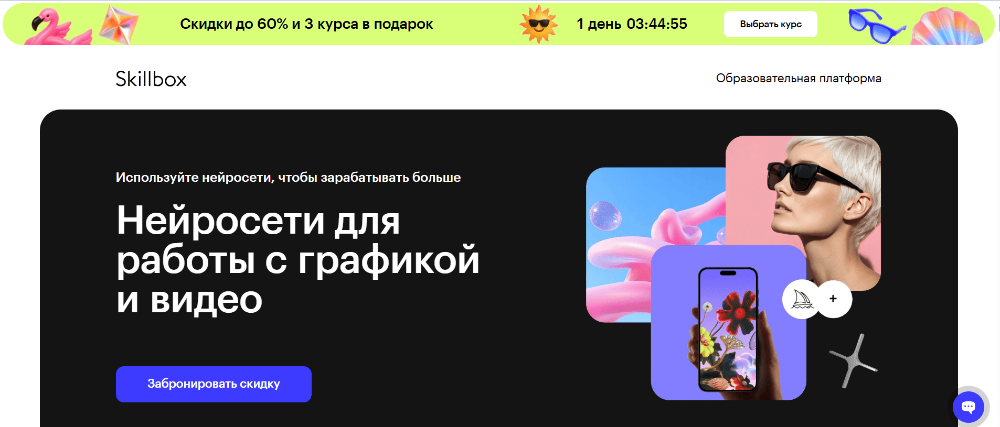- ✅ Официальный сайт: skillbox.ru
- 💸 Цена: 48 400 ₽ (со скидкой 50%).
- 💳 Рассрочка: доступна 4 033 ₽/мес на 12 месяцев.
- 📚 Формат: онлайн-курсы, видеоуроки, практические задания, чат с экспертами, обновления программы каждый месяц.
- ⏳ Продолжительность: 3 месяца, более 80 практических уроков.
- 📜 Документ: сертификат установленного образца, лицензия №Л035−1 298−77/179 609.
- 📝 Трудоустройство: помощь в оплате обучения работодателем, поддержка карьерного центра.
- 🔷 Для кого подходит курс: фотографам, иллюстраторам, веб-дизайнерам, 3D-художникам, стилистам, интерьерам-дизайнерам и всем, кто хочет научиться работать с визуальными нейросетями.
Особенности:
Программа создана для тех, кто хочет освоить навыки применения искусственного интеллекта в графике и видео. Студенты изучают популярные нейросети Midjourney, Stable Diffusion и DALL·E 3, учатся генерировать изображения, видео и анимацию. В рамках прохождения обучения акцент делается на практических кейсах и решении реальных задач. Участники получают доступ к закрытому сообществу и могут напрямую общаться с экспертами. Каждое обновление курса учитывает развитие технологий и внедрение новых инструментов. Благодаря машинному обучению и алгоритмам нейронных сетей студенты научатся создавать уникальный контент и получать практические навыки для сферы ИИ.
Чему учатся студенты:
- Создавать 2D и 3D-графику с помощью ИИ
- Генерировать изображения и видео на основе промптов
- Использовать алгоритмы машинного обучения для визуальных моделей
- Автоматизировать рабочие процессы и оптимизировать задачи
- Применять нейросети для генерации контента и обработки фото
- Научиться использовать базовые инструменты искусственного интеллекта
Преподаватели:
- Александр Доброкотов — креативный директор DADA AGENCY, автор канала Ai molodca
- Александр Жадан — продакт-менеджер проектов с применением нейросетей
- Артемий Калинин — дизайнер в команде Phygital+
Преимущества:
- Фокус на практическом применении искусственных интеллектов
- Обновление учебных материалов каждый месяц
- Возможность научиться создавать визуальный контент без навыков программирования
- Программа подходит для разных профессий, связанных с дизайном и медиа
- Реальные проекты и портфолио из 10+ работ
- Общение со спикерами и экспертами в чате
- Сертификат с гослицензией
Отзывы учеников:
Студенты отмечают удобный график обучения и доступность объяснений. По данным опроса ВШЭ, 93% выпускников достигли своих целей, а 78% готовы рекомендовать обучение. Среди плюсов чаще всего выделяют практические задания, актуальные знания, поддержку кураторов и возможность сразу внедрять ИИ в рабочих задачах.
Перейти на официальный сайт курса2. 🏆 Нейросети для создания видео и музыки — Нетология
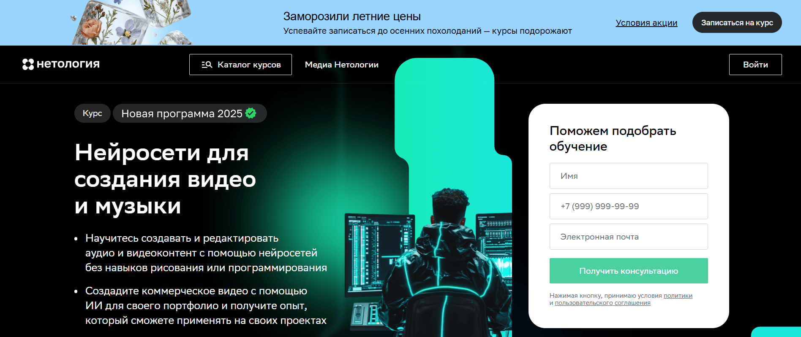- ✅ Официальный сайт: netology.ru
- 💸 Цена обучения: от 28 400 ₽ (со скидкой 40%).
- 💳 Рассрочка: доступна от 2 491 ₽/мес до 18 месяцев без переплат.
- 📚 Формат: воркшопы, вебинары, видеолекции, тесты, практические задания, доступ к материалам в приложении.
- ⏳ Продолжительность: 2 месяца.
- 📜 Документ: свидетельство об окончании курса.
- 📝 Трудоустройство: портфолио проектов и возможность использовать полученные знания в бизнесе и профессии.
- 🔷 Для кого подходит курс: блогеры, маркетологи, SMM-специалисты, дизайнеры, предприниматели и энтузиасты искусственного интеллекта.
Особенности:
Программа сочетает изучение популярных нейросетей и практических кейсов, что помогает освоить инструменты для создания медиа без навыков программирования. На занятиях студенты учатся работать с алгоритмами машинного обучения, создавать тексты, видео и музыку при помощи искусственных интеллектов. Программа построена на практических заданиях, что позволяет сразу применять полученные знания. Каждый участник получит инструкции и чек-листы для работы с сервисами и освоит базовые принципы генерации контента. Материалы доступны в приложении, что удобно для тех, кто совмещает учебу с работой. Курс помогает изучать нейросети на практике, внедрять ИИ в реальные проекты и развивать новые компетенции.
Чему учатся студенты:
- Освоить базовые навыки работы с нейросетями
- Научиться создавать и редактировать видео и аудио с помощью ИИ
- Писать сценарии для контента и подстраивать алгоритмы под задачи
- Использовать машинное обучение для стилизации и монтажа видео
- Формировать портфолио практических проектов
Преподаватели:
- Артём Денисов — эксперт по генерации графического контента, автор более 1000 проектов с нейросетями, создавал коммерческие видео для автомобильных брендов и IT-компаний.
- Гарри Марковский — академический директор Нетологии, специалист в моушен-дизайне и ИИ-технологиях, опыт работы на ТВ и с международными брендами.
Преимущества:
- Изучение с нуля без навыков программирования
- Доступ к учебным материалам в течение 3 лет
- Практическая работа над реальными кейсами
- Поддержка кураторов и координаторов
- Возможность учиться с мобильного приложения даже офлайн
- Гибкие условия оплаты и налоговый вычет
Отзывы учеников:
Студенты отмечают практический подход, удобный график обучения и актуальные знания о применении ИИ. Многие подчеркивают пользу портфолио проектов и возможность научиться создавать качественный контент с помощью нейросетей без лишних затрат. Отмечают поддержку кураторов и доступность материала для новичков.
Перейти на официальный сайт курса3. 🏆 AI FilmMaker: создание видео с нейросетями — KHS Хохлов Сабатовский
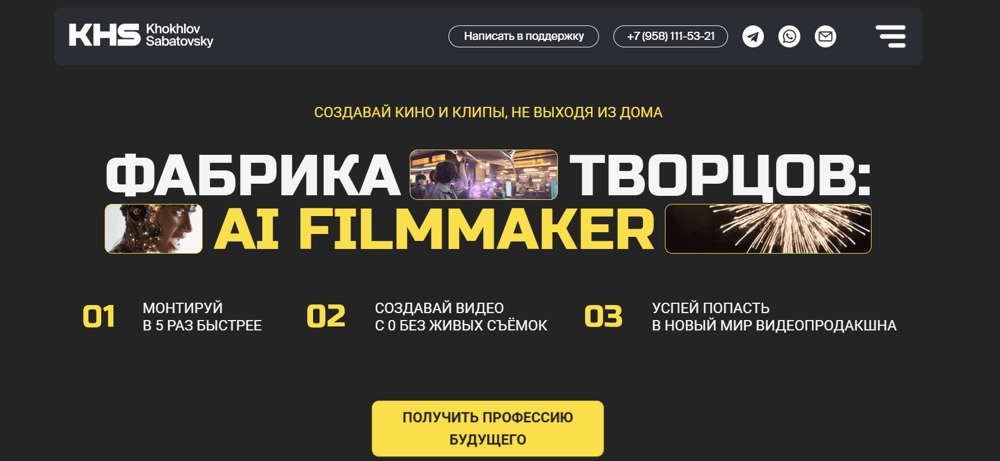- ✅ Официальный сайт: sabatovsky.com
- 💸 Цена обучения: от 71 143 ₽ (со скидкой).
- 💳 Рассрочка: доступна на несколько месяцев.
- 📚 Формат: онлайн-уроки, практические задания, финальные проекты, поддержка кураторов.
- ⏳ Продолжительность: от 14 дней до нескольких месяцев (гибкий график).
- 📜 Документ: сертификат о прохождении программы.
- 📝 Трудоустройство: лучшие участники приглашаются в продакшн-команду KHS, участие в фестивале творцов.
- 🔷 Для кого подходит курс: для новичков, желающих освоить базовые навыки видеопроизводства, и специалистов, которые применяют ИИ для ускорения работы.
Особенности:
Программа построена на работе с популярными нейросетями, которые применяют искусственный интеллект для генерации визуального и звукового контента. Студенты научатся автоматизировать процессы, которые раньше занимали недели: от поиска футажей и музыки до озвучки и визуальных эффектов. Обучение строится на практических кейсах и реальных проектах, где участники получают опыт применения ИИ для создания рекламы, кино и мультфильмов. Курс помогает освоить инструменты машинного обучения и понять применение нейронных сетей в видеопродакшне. Важным преимуществом является возможность научиться создавать видео без живых съемок, полностью опираясь на генеративные модели. Образовательная программа включает обучение базовым принципам и углубление в современные технологии. Уже во время прохождения курсов студенты создают портфолио и получают шанс на карьерный рост.
Чему учатся студенты:
- Создавать видео в 5 раз быстрее с помощью нейросетей
- Применять искусственные алгоритмы для генерации изображений, звуков и сцен
- Освоить базовые навыки работы с графической нейросетью и генеративными ИИ
- Научиться использовать машинное обучение для улучшения качества исходного материала
- Генерировать уникальный контент: от рекламных роликов до анимации
- Работать с текстовыми моделями и создавать озвучку голосами разных интонаций
Преподаватели:
- Слава Хохлов: более 10 лет опыта, сооснователь KHS, автор крупнейшего русскоязычного YouTube-канала о видеопроизводстве
- Влад Сабатовский: эксперт по монтажу и нейросетям, автор обучающих программ
- Женя Тен: специалист по созданию визуальных проектов с применением ИИ
Преимущества:
- Работа с актуальными инструментами искусственного интеллекта 2025 года
- Освоение навыков программирования и применения ИИ для генерации контента
- Возможность прохождения обучения в любом удобном темпе
- Создание портфолио из реальных проектов
- Поддержка кураторов и обратная связь от экспертов
- Шанс попасть в профессиональный продакшн и работать с брендами
- Применение искусственного интеллекта в реальных кейсах бизнеса
Отзывы учеников:
Выпускники отмечают практическую ценность программы: возможность зарабатывать уже после первых проектов, реальное ускорение работы и освоение полезных инструментов. Многие подчеркивают, что курс помогает освоить инструменты искусственного интеллекта даже без базовых знаний программирования. Среди преимуществ студенты чаще всего выделяют понятную подачу материала, поддержку наставников и возможность трудоустройства.
Перейти на официальный сайт курсаТОП-6 онлайн-курсов по нейросетям для Бизнеса и продаж
- 🏆 Нейросети для бизнеса — Skillbox
- 🏆 Нейросети для бизнеса и управленцев — Нетология
- 🏆 Нейросети для HR — Академия Eduson
- Нейросети для руководителей — City Business School
- Нейросети для работы — АНО ДПО «Образовательные технологии Яндекса» Практикум
- Нейросети в продажах – Контур.Школа
Отличительные преимущества каждой дистанционной программы обучения по нейросетям для Бизнеса и продаж
| № | Курс и школа | Отличительные преимущества | Ссылка |
|---|---|---|---|
| 🥇 | Нейросети для бизнеса — Skillbox | Программа трудоустройства с гарантией возврата денег, работа с локальными моделями и API, практические проекты для портфолио, широкий охват инструментов (GPT4All, Midjourney, Gemini, Claude). | Перейти |
| 🥈 | Нейросети для бизнеса и управленцев — Нетология | Удостоверение о повышении квалификации, обучение у экспертов-практиков (Сидорюк, Свирщевская), упор на стратегическое применение ИИ в управлении и маркетинге, доступ к проверенным промптам. | Перейти |
| 🥉 | Нейросети для HR — Академия Eduson | Создан в 2025 году с учетом последних технологий, поддержка куратора 365 дней в году, доступ к материалам навсегда, налоговый вычет 13%, шаблоны и готовые решения для HR-задач. | Перейти |
| 4 | Нейросети для руководителей — City Business School | Экспертный преподавательский состав (6 специалистов из разных областей), быстрый курс 4,5 недели, доступ к базе инструментов и шаблонам автоматизации, реальная интеграция ИИ без программирования. | Перейти |
| 5 | Нейросети для работы — Яндекс Практикум | Бесплатный вводный модуль, карьерный центр с трудоустройством, практика с 10 нейросетями (ChatGPT, Claude, YandexGPT), формирование собственного промпт-бука как рабочего инструмента. | Перейти |
| 6 | Нейросети в продажах — Контур.Школа | Самая доступная цена (9 900 ₽), акцент на продажах и автоматизации звонков/отчетности, практическая направленность для менеджеров, выдаётся удостоверение о повышении квалификации. | Перейти |
1. 🏆 Нейросети для бизнеса — Skillbox
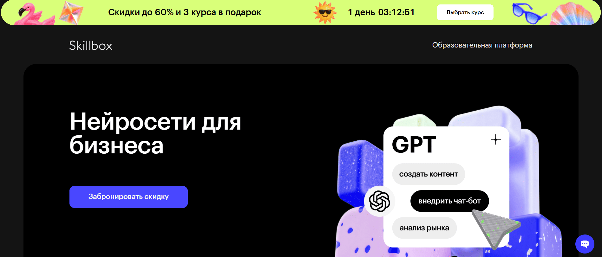- ✅ Официальный сайт: skillbox.ru
- 💸 Цена: 83 124 ₽ со скидкой.
- 💳 Рассрочка: доступна от 6 927 ₽/мес на 12 месяцев без переплат.
- 📚 Формат: онлайн-занятия, практические проекты, воркшопы, домашние задания и консультации.
- ⏳ Продолжительность: 2 месяца.
- 📜 Документ: сертификат установленного образца по окончании обучения.
- 📝 Трудоустройство: действует программа «Поможем найти работу или вернем деньги».
- 🔷 Для кого подходит курс: специалисты по внедрению ИИ, предприниматели, руководители, аналитики, продукт-менеджеры, разработчики и все, кто хочет изучать нейросети.
Особенности:
Курс позволяет освоить инструменты автоматизации задач с помощью искусственного интеллекта и генеративных моделей. Обучение строится на реальных примерах из бизнеса: от автоматизации документооборота до создания рекламных креативов. Участники получают практические навыки работы с популярными нейросетями — GPT4All, Midjourney, Gemini, Claude и другими. В процессе обучения студенты выполняют практические проекты для портфолио, что помогает освоить базовые знания и закрепить их на реальных кейсах. Программа включает работу с локальными моделями и API-интеграциями, чтобы научиться использовать ИИ даже без доступа к интернету. Такой подход обеспечивает практическое применение искусственного интеллекта в различных сферах бизнеса. Благодаря пошаговой системе обучения студенты научатся эффективно использовать ИИ-инструменты для оптимизации процессов, повышения эффективности и снижения затрат.
Чему учатся студенты:
- Освоить базовые навыки работы с моделями машинного обучения
- Научишься применять искусственный интеллект для автоматизации бизнес-процессов
- Создавать AI-ассистентов для задач аналитики, продаж и маркетинга
- Научишься работать с визуальными нейросетями для генерации изображений и контента
- Использовать алгоритмы машинного обучения для анализа данных
- Освоите создание запросов (промпт-инжиниринг) для текстовых моделей
- Применять инструменты Midjourney, Copilot, Recraft и другие
- Научишься решать реальные задачи с помощью ИИ
Преподаватели:
- Информация о преподавателях на сайте не указана, обучение проводят эксперты Skillbox с опытом в сфере искусственного интеллекта и внедрения AI-решений в бизнес.
Преимущества:
- Обучение с применением реальных кейсов из бизнеса
- Возможность освоить инструменты генерации текстов, изображений и данных
- Практические проекты в портфолио по окончании курса
- Гибкий график обучения в онлайне
- Сертификат государственного образца
- Поддержка кураторов и возможность консультаций
- Доступ к полезным материалам и базе знаний Skillbox
Отзывы учеников:
Студенты отмечают, что курс помогает освоить практическое применение искусственного интеллекта без глубоких знаний программирования. Многие выделяют удобный формат обучения, практические кейсы и поддержку кураторов. В отзывах часто упоминают, что полученные навыки позволяют автоматизировать задачи и повысить эффективность работы в компании.
Перейти на официальный сайт курса2. 🏆 Нейросети для бизнеса и управленцев — Нетология
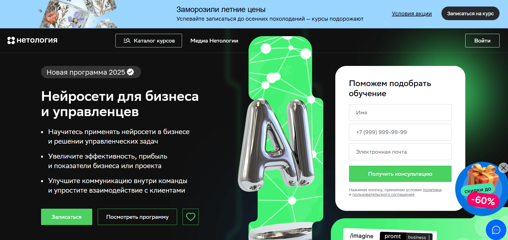- ✅ Официальный сайт: netology.ru
- 💸 Цена обучения: от 49 100 ₽ (со скидкой).
- 💳 Рассрочка: от 2 871 ₽/мес до 24 месяцев без переплат или оплата частями.
- 📚 Формат: вебинары, воркшопы, лонгриды, домашние задания с проверкой, доступ к полезным материалам.
- ⏳ Продолжительность: 1,5 месяца.
- 📜 Документ: удостоверение о повышении квалификации.
- 📝 Трудоустройство: возможность добавить документ в резюме, помощь в применении знаний для развития карьеры.
- 🔷 Для кого подходит курс: руководителям, предпринимателям, продакт- и проджект-менеджерам.
Особенности:
Программа направлена на освоение инструментов искусственного интеллекта для решения управленческих и бизнес-задач. Студенты получат практические навыки применения ИИ для автоматизации процессов, анализа данных и оптимизации коммуникаций. Обучение строится на реальных примерах и кейсах, что помогает разобраться в возможностях нейронных сетей без навыков программирования. Во время прохождения обучения участники изучают популярные нейросети, включая ChatGPT и MidJourney, и учатся применять их в реальных проектах. После окончания курса студенты смогут эффективно использовать ИИ для стратегического планирования, прогнозирования и работы с клиентами. В рамках занятий особое внимание уделяется практическому применению технологий и созданию уникального контента с помощью искусственных интеллектов.
Чему учатся студенты:
- Автоматизировать рутинные задачи с помощью нейросетей
- Составлять бизнес-планы и стратегии развития
- Применять алгоритмы машинного обучения для анализа данных
- Оптимизировать маркетинг и прогнозировать рыночные тенденции
- Создавать тексты, изображения и презентации с помощью генеративных ИИ
- Использовать искусственные интеллекты для работы с командой и клиентами
Преподаватели:
- Алексей Сидорюк: основатель «Ген ИИ», эксперт по внедрению генеративных моделей в бизнес, советник генерального директора Ассоциации ФинТех по ИИ.
- Анна Свирщевская: продуктовый исследователь, ex-Product Owner Paige, работает с проектами заказной разработки, помогает компаниям интегрировать ИИ в процессы.
Преимущества:
- Курс сочетает теорию и практику на реальных кейсах
- Доступ к проверенным промптам для бизнеса
- Гибкая рассрочка до 24 месяцев
- Поддержка экспертов и кураторов на каждом этапе обучения
- Возможность внедрить ИИ в рабочие процессы уже в ходе прохождения курса
- Удостоверение государственного образца
- Программа подходит для руководителей и специалистов без навыков программирования
Отзывы учеников:
Студенты отмечают практическую направленность занятий, доступное объяснение сложных тем и возможность сразу применять знания в рабочих проектах. Многие подчеркивают удобный график обучения, поддержку кураторов и пользу от готовых инструментов, которые помогают в реальных задачах бизнеса.
Перейти на официальный сайт курса3. 🏆 Нейросети для HR — Академия Eduson
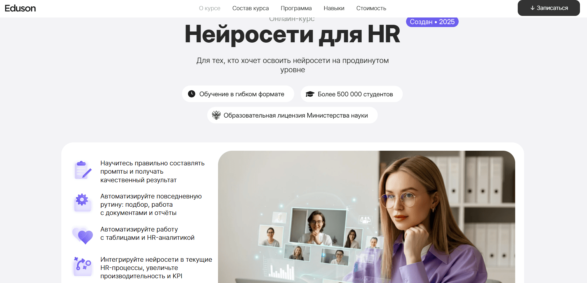- ✅ Официальный сайт: eduson.academy
- 💸 Цена обучения: от 50 000 ₽ со скидкой 60%.
- 💳 Рассрочка: от 4166 ₽/мес до 12 месяцев без переплат.
- 📚 Формат: онлайн-курс, видеолекции, практические задания, шаблоны промтов, тесты, кейсы, дополнительные материалы.
- ⏳ Продолжительность: обучение с 21 августа, гибкий график, доступ к материалам навсегда.
- 📜 Документ: удостоверение о повышении квалификации и диплом Академии Eduson.
- 📝 Трудоустройство: подтверждение квалификации, налоговый вычет, навыки автоматизации HR-процессов.
- 🔷 Для кого подходит курс: HR-специалистам, специалистам по обучению и развитию, руководителям направлений.
Особенности:
Программа создана в 2025 году с учетом современных технологий и активно применяется в сфере HR. Студенты изучают применение искусственных интеллектов для автоматизации рутинных задач: от подбора до отчетности. В курс входят модули о рекрутинге, адаптации сотрудников, аналитике данных и генерации контента. Обучение строится на практике: каждый слушатель получает шаблоны, готовые решения и поддержку куратора 365 дней в году. Курс помогает освоить инструменты и освоить навыки, которые используют нейросети и применяют ИИ в реальных HR-процессах. В результате студенты научатся использовать машинное обучение и моделях машинного обучения для повышения KPI и эффективности команд. Доступ к материалам остается навсегда, а обновления программы бесплатны.
Чему учатся студенты:
- Автоматизировать подбор персонала и работу с резюме
- Использовать нейросети для обучения и адаптации сотрудников
- Создавать HR-отчеты и презентации за несколько кликов
- Генерировать тексты, офферы и письма для кандидатов
- Применять ИИ для HR-аналитики и оптимизации затрат
- Составлять эффективные промпты для генерации текстового и визуального контента
Преподаватели:
- Информация о преподавателях не указана на официальном сайте. Курс сопровождают кураторы Академии Eduson с опытом внедрения ИИ в HR.
Преимущества:
- Официальные документы о повышении квалификации
- Поддержка куратора каждый день в течение года
- Практические кейсы, приближенные к реальным задачам HR
- Актуальные знания 2025 года и бесплатные обновления программы
- Гибкий график и доступ навсегда
- Возможность налогового вычета 13%
Отзывы учеников:
Студенты отмечают, что обучение помогает быстро научиться применять ИИ в работе. Особенно ценят практические задания и обратную связь от кураторов. Многие подчеркивают удобство гибкого графика и доступность объяснений даже для тех, кто только начинает изучать нейронные сети. В отзывах часто упоминается рост продуктивности и появление новых инструментов для решения рабочих задач.
Перейти на официальный сайт курса4. Нейросети для руководителей — City Business School
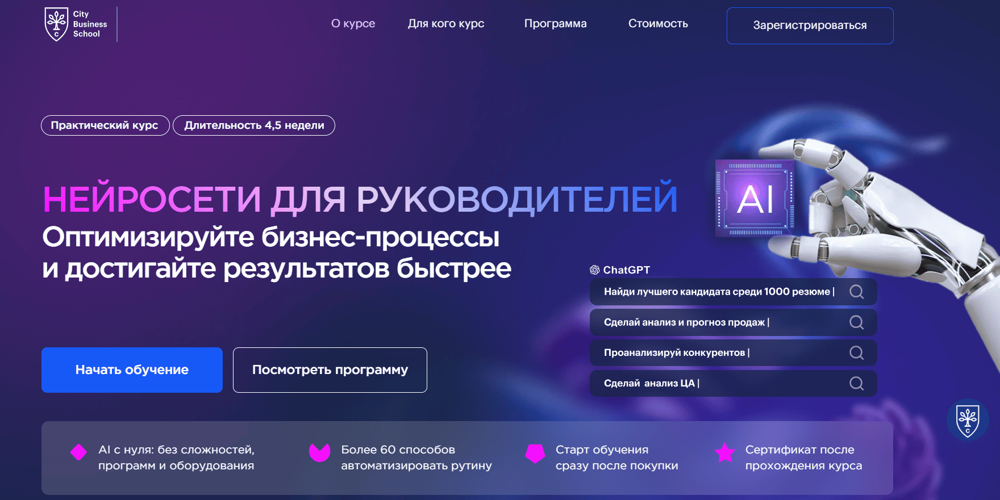- ✅ Официальный сайт: lp.e-mba.ru
- 💸 Цена обучения: от 29 000 ₽ до 79 000 ₽ в зависимости от тарифа.
- 💳 Рассрочка: доступна при оплате обучения от 2 417 ₽/мес.
- 📚 Формат: онлайн-курс, включает видеоуроки, практические проекты, тесты, готовые кейсы и задания.
- ⏳ Продолжительность: 4,5 недели.
- 📜 Документ: официальный электронный сертификат City Business School.
- 📝 Трудоустройство: помогает выделиться среди кандидатов и повысить квалификацию для карьерного роста.
- 🔷 Для кого подходит курс: руководители, менеджеры, специалисты в HR, маркетинге, продажах, финансах и производстве.
Особенности:
Программа разработана для тех, кто хочет освоить базовые навыки применения искусственного интеллекта в бизнесе без необходимости изучать языки программирования или сложные алгоритмы машинного обучения. Участники курса научатся использовать популярные нейросети для оптимизации внутренних процессов, внедрения автоматизации и повышения эффективности работы команды. Обучение строится на практическом применении технологий: от анализа данных до генерации контента и моделирования сценариев. Студенты получают доступ к базе ИИ-инструментов и пошаговым инструкциям, что позволит внедрить ИИ в рабочие процессы сразу после прохождения обучения. Курс включает реальные кейсы, практические задания и проекты, что помогает закрепить навыки и применить их в повседневных задачах. С помощью искусственных интеллектов участники научатся экономить время, снижать издержки и принимать более точные управленческие решения.
Чему учатся студенты:
- Оптимизации бизнес-процессов с помощью нейронных сетей
- Автоматизации задач в HR, маркетинге, финансах и продажах
- Анализу данных и прогнозированию результатов
- Созданию эффективной системы обратной связи и мотивации сотрудников
- Использованию ИИ для генерации текстов, изображений и аналитики
- Внедрению алгоритмов машинного обучения для принятия решений
Преподаватели:
- Ровенских Валентина — главный бухгалтер IT-компании, эксперт в интеграции ИИ и low-code решений, спикер TechWeek 2024.
- Канбулатова Марина — селлер на Wildberries, бизнес-консультант по внедрению AI-инструментов, преподаватель РАНХиГС.
- Богданович Елизавета — ex-methodologist GeekBrains, автор курсов по AI-программированию, член жюри хакатона Hacks-ai.
- Зуриев Игорь — эксперт по AI в IT и бизнесе, внедрил предиктивную аналитику с точностью 94%.
- Чинянин Дмитрий — предприниматель, декан по направлениям нейросетей и маркетинга, автор образовательных программ.
- Иванова Наталия — эксперт по AI-трансформации в HR, генеральный директор тренингового центра, автор AI-решений для подбора персонала.
Преимущества:
- Быстрое внедрение ИИ в рабочие процессы без навыков программирования
- Практические кейсы и проекты на основе реальных задач
- Доступ к базе инструментов и шаблонам для автоматизации
- Помощь в применении искусственного интеллекта в разных сферах бизнеса
- Официальный сертификат, подтверждающий квалификацию
- Экспертные преподаватели с опытом внедрения AI в компаниях
Отзывы учеников:
Студенты отмечают практическую направленность программы, доступное объяснение сложных тем и ценность реальных кейсов. Чаще всего выделяют пользу от практических заданий, возможность освоить инструменты без сложностей и поддержку преподавателей. Многие подчеркивают, что курс помогает научиться эффективно использовать ИИ в бизнесе и получать быстрые результаты уже в процессе обучения.
Перейти на официальный сайт курса5. Нейросети для работы — АНО ДПО «Образовательные технологии Яндекса» Практикум
- ✅ Официальный сайт: practicum.yandex.ru
- 💸 Цена обучения: 65 000 ₽.
- 💳 Рассрочка: 33 500 ₽/мес в рассрочку без переплат, можно оформить кредит или оплатить через работодателя.
- 📚 Формат: видеоуроки, практические задания, тесты, воркшопы, Q&A-сессии, проект по созданию промпт-бука.
- ⏳ Продолжительность: 2 месяца, около 5 часов в неделю.
- 📜 Документ: удостоверение о повышении квалификации государственного образца.
- 📝 Трудоустройство: карьерный центр, помощь в трудоустройстве, по данным НИУ ВШЭ 10 000 выпускников нашли работу.
- 🔷 Для кого подходит курс: маркетологам, руководителям, предпринимателям, HR-специалистам, менеджерам и тем, кто хочет сократить рутинные процессы с помощью ИИ.
Особенности:
Программа создана в 2025 году и обновляется к каждому запуску. Учеба строится на практических кейсах, которые связаны с реальными задачами в профессиях. Студенты осваивают инструменты популярных нейросетей, включая ChatGPT, Claude, YandexGPT и другие. В ходе прохождения обучения формируется промпт-бук, который остается как рабочий инструмент. Участники получают практические навыки применения искусственных интеллектов в бизнесе, маркетинге, аналитике и управлении. Поддержка кураторов и наставников делает процесс обучения комфортным и результативным. Доступ к учебным материалам возможен в любое удобное время, а все воркшопы можно пересматривать в записи. Наличие бесплатного вводного модуля позволяет заранее оценить формат курса.
Чему учатся студенты:
- Изучать основы машинного обучения и базовые принципы работы нейросетей
- Создавать эффективные промпты и анализировать готовые промпт-буки
- Научиться использовать ИИ для автоматизации рутинных задач
- Генерировать тексты, изображения и готовить маркетинговый контент
- Анализировать данные, тренды и результаты исследований
- Разрабатывать собственные инструменты для применения ИИ в профессии
Преподаватели:
- Наставники Яндекс Практикума: эксперты в сфере искусственного интеллекта, специалисты с опытом внедрения ИИ в бизнес и образование
Преимущества:
- Бесплатный вводный модуль для знакомства с курсом
- Учеба на реальных задачах с поддержкой наставников
- Официальное удостоверение о повышении квалификации
- Помощь карьерного центра в трудоустройстве
- Гибкая система оплаты: рассрочка, налоговый вычет, оплата работодателем
- Регулярные обновления программы с учетом новых технологий
- Практика с 10 нейросетями для разных сфер работы
Отзывы учеников:
Студенты отмечают удобный формат, практическую направленность и поддержку наставников. Многие подчеркивают ценность реальных проектов и то, что курс помогает освоить навыки, которые сразу применяют в работе. Отдельно выделяют помощь карьерного центра и доступные объяснения сложных тем.
Перейти на официальный сайт курса6. Нейросети в продажах – Контур.Школа
- ✅ Официальный сайт: school.kontur.ru
- 💸 Цена: 9 900 ₽
- 💳 Рассрочка: доступна от 825 ₽/мес
- 📚 Формат: видеоуроки, тест для самопроверки, практические задания
- ⏳ Продолжительность: доступ к материалам 2 месяца
- 📜 Документ: удостоверение о повышении квалификации
- 📝 Трудоустройство: не предусмотрено
- 🔷 Для кого подходит курс: для менеджеров, специалистов по продажам и руководителей команд, желающих освоить инструменты искусственного интеллекта
Особенности:
Программа помогает освоить базовые навыки использования искусственного интеллекта в продажах. Участники изучат популярные нейросети, научатся их применять для генерации текстового контента и изображений, а также автоматизации задач. В курсе уделяется внимание практическим навыкам: созданию промптов, анализу конкурентных предложений, подготовке отчетов. Обучение строится на реальных кейсах и позволяет освоить инструменты, которые применяют ИИ в бизнесе. Доступ к видеоматериалам и тестам дает возможность учиться в удобном темпе. После прохождения обучения слушатели смогут внедрить ИИ в рабочие процессы отдела продаж.
Чему учатся студенты:
- Изучать основы искусственного интеллекта и машинного обучения
- Разбираться в нейронных сетях и их возможностях
- Создавать корректные промпты для генерации контента
- Генерировать тексты, изображения и речевые модули
- Использовать ИИ для анализа конкурентных предложений
- Автоматизировать процессы: расшифровка звонков, подготовка отчетов
Преподаватели:
- Преподаватели курса — эксперты Контур.Школы (ФИО не указаны на сайте)
Преимущества:
- Практическая направленность и работа с реальными задачами
- Освоение инструментов для автоматизации рутинных процессов
- Возможность изучать материалы в удобное время
- Выдается документ о повышении квалификации
- Фокус на применении ИИ в продажах и бизнес-процессах
Отзывы учеников:
Слушатели отмечают понятное объяснение материала, практическую пользу и удобный формат. Студенты подчеркивают ценность примеров из реальных проектов и доступ к полезным материалам. Многие выделяют, что обучение помогает разобраться в возможностях ИИ и эффективно применять его в рабочих задачах.
Перейти на официальный сайт курсаТОП-7 онлайн-курсов по нейросетям для Детей и Подростков
- 🏆 Нейросети для детей AI Kids — Skillbox
- 🏆 Искусственный интеллект для подростков — OTUS Kids
- Нейросети и работа с данными — Фоксфорд
- Minecraft: введение в искусственный интеллект — CODDY
- Нейросети для детей: основы и практика — Школа программирования CODDY
- Курсы Python для детей и подростков — Skysmart Pro
- Программирование на Python для детей — Компьютерная Академия ТОП
Отличительные преимущества каждой дистанционной программы обучения по нейросетям для Детей и Подростков
| № | Название курса | Отличительные преимущества | Ссылка |
|---|---|---|---|
| 🥇 | Нейросети для детей AI Kids — Skillbox |
Бесплатное начало обучения, лицензия РФ, проектная работа и промпт-инженерия. Поддержка кураторов и профориентация, широкий охват (Python, тексты, игры, аналитика). |
Перейти |
| 🥈 | Искусственный интеллект для подростков — OTUS Kids |
Индивидуальная диагностика и подбор программы. Формат «стажировка в IT-компании», развитие soft-skills и профориентация. Наставники из индустрии (Severstal, Cardoo и др.). |
Перейти |
| 🥉 | Нейросети и работа с данными — Фоксфорд |
Малые группы до 12 человек, работа с реальными кейсами. Сертификат и возможность налогового вычета, акцент на анализ данных. |
Перейти |
| 4 | Minecraft: введение в искусственный интеллект — CODDY |
Построен на Minecraft Education Edition, офлайн/онлайн формат. Изучение JavaScript и MakeCode, развитие soft-skills через командные проекты. |
Перейти |
| 5 | Нейросети для детей: основы и практика — Школа программирования CODDY |
Игровая форма обучения, первый урок бесплатный. Этические аспекты использования ИИ, генерация контента и веб-разработка. |
Перейти |
| 6 | Курсы Python для детей и подростков – Skysmart Pro |
Фокус на реальных проектах, формирование портфолио разработчика. Рассрочка от 5 175 ₽, преподаватели-практики, освоение основ ML и ИИ. |
Перейти |
| 7 | Программирование на Python для детей — Компьютерная Академия ТОП |
Программа соответствует ФГОС и рекомендована ЮНЕСКО. Очные/онлайн занятия, бесплатные места по федеральным проектам, геймификация. Современные лаборатории, 3D-принтеры и роботы. |
Перейти |
1. 🏆 Нейросети для детей AI Kids — Skillbox
- ✅ Официальный сайт: kids.skillbox.ru
- 💸 Цена обучения: часть программы доступна бесплатно, далее — платные модули.
- 💳 Рассрочка: предусмотрена, возможна оплата материнским капиталом.
- 📚 Формат: онлайн-уроки, практические задания, проектная работа, консультации с кураторами.
- ⏳ Продолжительность: от 2 месяцев, зависит от выбранного направления.
- 📜 Документ: сертификат установленного образца, государственная лицензия №040485.
- 📝 Трудоустройство: профориентация и поддержка в дальнейшем выборе IT-направления.
- 🔷 Для кого подходит курс: школьники 4–11 классов (11–15 лет), интересующиеся искусственным интеллектом и программированием.
Особенности:
Программа строится вокруг изучения популярных нейросетей и применения ИИ в разных задачах. Дети учатся работать с алгоритмами машинного обучения, создавать тексты, изображения и видео. Обучение строится на реальных примерах и практических проектах, что позволяет получить полезные навыки и применять ИИ для учёбы. Программа охватывает промпт-инженерию, работу с визуальными нейросетями и генерацию контента. Школьники научатся использовать ChatGPT, графические и музыкальные сервисы, а также освоят основы программирования на Python. Каждый модуль ориентирован на практику и помогает детям развиваться в сфере искусственного интеллекта.
Чему учатся студенты:
- Писать эффективные запросы и генерировать тексты
- Создавать изображения и видео с помощью нейросетей
- Озвучивать проекты и работать с музыкой в ИИ
- Программировать на Python: игры, сайты, чат-боты
- Анализировать данные и оформлять презентации
- Работать в команде, презентовать проекты и решать задачи
Преподаватели:
- Виталий Маеров — куратор курсов, эксперт по ИИ
- Евгений Абумов — наставник по программированию
- Виктория Гонтаренко — специалист по нейросетям и проектной работе
- Илья Акчурин — преподаватель по Python и созданию приложений
- Александр Шнуров — эксперт по большим данным, преподаватель Skillbox Kids
Преимущества:
- Обучение проходит полностью онлайн с поддержкой кураторов
- Дети получают практические навыки работы с ИИ и машинным обучением
- Есть возможность начать бесплатно и попробовать курс
- Выдаётся документ по лицензии, признанный в РФ
- Широкий выбор направлений: от текстов до игр и аналитики
- Гибкие условия оплаты, включая материнский капитал
Отзывы учеников:
Родители отмечают, что дети начинают применять нейросети для учёбы и отвлекаются от игр в пользу создания проектов. Ученики хвалят доступность объяснений и большое количество практики. Отмечается, что школьники уверенно используют Python, создают игры и выступают с презентациями. Особенно ценят поддержку кураторов и живое общение, которое помогает детям почувствовать себя частью IT-сообщества.
Перейти на официальный сайт курса2. 🏆 Искусственный интеллект для подростков — OTUS Kids

- ✅ Официальный сайт: otus.ru
- 💸 Цена: уточняется после бесплатной диагностики.
- 💳 Рассрочка: доступна, условия обсуждаются индивидуально.
- 📚 Формат: онлайн-занятия 2 раза в неделю по 90 минут, проектная работа, доступ к записям и материалам, домашние задания и практика.
- ⏳ Продолжительность: зависит от уровня подготовки, подбор программы индивидуальный.
- 📜 Документ: лицензированный сертификат и портфолио проектов.
- 📝 Трудоустройство: помощь в составлении резюме и профориентация.
- 🔷 Для кого подходит курс: для подростков от 10 лет, увлечённых технологиями, желающих освоить основы программирования, нейросети и навыки работы с ИИ.
Особенности:
Программа строится по принципу «стажировки в ИТ-компании», где подростки получают практические навыки и осваивают инструменты, которые используют специалисты сферы искусственного интеллекта. Занятия проходят в формате живого общения и закрепляются на реальных проектах. Курсы включают изучение моделей машинного обучения, применение нейросетей для создания контента и автоматизации задач. Ученики получают доступ к визуальным и текстовым инструментам, учатся работать с популярными нейросетями и создавать уникальные проекты. В процессе обучения большое внимание уделяется развитию личных навыков: коммуникации, командной работы и управлению временем. Подростки научатся применять ИИ для учебных и практических задач, смогут создавать ботов, игры, тексты и изображения. Каждое занятие завершается результатом — сформированным умением или готовым элементом портфолио.
Чему учатся студенты:
- Принципам работы нейросетей и применения искусственного интеллекта
- Созданию ботов, сайтов и контента с помощью ИИ
- Генерации изображений, видео, текстов и музыки
- Применению алгоритмов машинного обучения в реальных проектах
- Работе с текстовыми моделями и графическими нейросетями
- Фрилансу и использованию ИИ в маркетинге
- Навыкам коммуникации, публичных выступлений и работе по гибким методологиям (Scrum, Kanban)
Преподаватели:
- Алексей Добрусин: Директор по выручке Cardoo
- Алексей Рахманов: Руководитель департамента разработки и тестирования АО «Северсталь-инфоком»
- Ксения Малова: Руководитель по обучению Академии IT-рекрутинга
Преимущества:
- Индивидуальная диагностика уровня знаний перед началом занятий
- Комплексное развитие: hard-skills, soft-skills и карьерная навигация
- Практическое обучение через канбан-доски и реальные кейсы
- Поддержка наставников и кураторов на всех этапах
- Портфолио из готовых проектов и помощь в составлении резюме
- Улучшение школьной успеваемости и подготовка к экзаменам
Отзывы учеников:
Родители и подростки отмечают удобный график обучения, поддержку наставников и практическую пользу занятий. Особенно ценят проектный подход и возможность освоить базовые навыки программирования и применения ИИ в разных сферах. Выпускники подчеркивают, что курсы помогают определиться с выбором профессии и собрать портфолио для будущего трудоустройства.
Перейти на официальный сайт курса3. 🏆 Нейросети и работа с данными — Фоксфорд
- ✅ Официальный сайт: foxford.ru
- 💸 Цена: 28 470 ₽ за все занятия.
- 💳 Рассрочка: можно оплатить маткапиталом или получить налоговый вычет.
- 📚 Формат: занятия в онлайне, видеоуроки, групповые проекты, практические кейсы, обратная связь от преподавателя.
- ⏳ Продолжительность: 12 уроков по 45 минут.
- 📜 Документ: электронный сертификат об окончании курса.
- 📝 Трудоустройство: сертификат можно добавить в портфолио и использовать для поступления или собеседований.
- 🔷 Для кого подходит курс: для школьников 5–11 классов, интересующихся сферой ИИ, нейросетями и практическим применением технологий.
Особенности:
Занятия проходят в небольших группах до 12 человек, что позволяет преподавателю уделить внимание каждому ученику. Учеба строится на разборе реальных кейсов и практических заданий. Студенты научатся использовать популярные нейросети для анализа данных, генерации текстового и визуального контента, а также автоматизации задач. Программа включает освоение инструментов для работы с искусственным интеллектом и понимание алгоритмов машинного обучения. Участники смогут внедрить ИИ в свои проекты, создавать уникальные материалы и решать задачи с помощью современных технологий. Обучение сопровождается поддержкой куратора и общением в чате с другими студентами. По завершении курса выдается сертификат, подтверждающий полученные знания.
Чему учатся студенты:
- Освоить базовые принципы работы с искусственными интеллектами
- Научиться создавать помощников для учебы и личных задач
- Изучить алгоритмы машинного обучения и применение нейронных сетей
- Применять ИИ для анализа данных и генерации контента
- Разрабатывать стратегии эффективного использования нейросетей
Преподаватели:
- Фоксфорд — команда опытных экспертов, специализирующихся на обучении школьников современным технологиям, программированию и применению нейросетей.
Преимущества:
- Обучение на реальных примерах и проектах
- Малые группы с индивидуальным подходом
- Сертификат, который можно добавить в портфолио
- Поддержка преподавателей и кураторов на всех этапах обучения
- Государственная лицензия, возможность оплаты маткапиталом
- Комьюнити студентов для общения и обмена опытом
Отзывы учеников:
Ученики отмечают доступность объяснений сложных тем, большое количество практических заданий и поддержку преподавателей. Родители подчеркивают, что курс помогает детям освоить навыки программирования, изучить основы ИИ и научиться эффективно применять нейросети в учебе и повседневных задачах.
Перейти на официальный сайт курса4. Minecraft: введение в искусственный интеллект — CODDY
- ✅ Официальный сайт: coddyschool.com
- 💸 Цена обучения: уточняется у менеджеров, доступно бесплатное пробное занятие.
- 💳 Рассрочка: предусмотрена.
- 📚 Формат: офлайн и онлайн занятия в режиме реального времени, проектные задания, командная работа.
- ⏳ Продолжительность: 8 месяцев (от 64 часов).
- 📜 Документ: именной сертификат CODDY.
- 📝 Трудоустройство: помогает сформировать базу знаний для будущей карьеры в IT.
- 🔷 Для кого подходит курс: дети 7–10 лет, начинающие изучение программирования или имеющие базовые знания.
Особенности:
Программа построена на базе Minecraft Education Edition и помогает детям освоить основы программирования через игру. В процессе прохождения обучения дети работают с алгоритмами машинного обучения и применением искусственного интеллекта для создания собственных проектов. Курс развивает математическое и алгоритмическое мышление, творческие способности и навыки командной работы. Ученики научатся применять практические навыки при программировании агентов, решающих игровые задачи. Занятия включают изучение JavaScript и практическое использование платформы MakeCode от Microsoft. Благодаря проектным заданиям школьники научатся создавать цифровые миры и смогут внедрить ИИ в игровые сценарии. По завершении программы дети получают возможность презентовать свои разработки.
Чему учатся студенты:
- Программированию агентов в Minecraft
- Использованию циклов, функций и массивов
- Основам JavaScript и синтаксису языка
- Применению ИИ для решения игровых задач
- Созданию собственных игровых миров и объектов
- Навыкам коммуникации, командной работы и лидерству
Преподаватели:
- Марина Ивановна К. — специалист по графическому дизайну и цифровому искусству, ведет курсы по Minecraft и презентациям
- Дмитрий Викторович К. — преподаватель основ программирования и алгоритмики, курсов для самых маленьких
- Андрей Игоревич И. — разработчик игр, эксперт в Unity 3D, Python, Roblox Studio и Blender
Преимущества:
- Практическое обучение на основе игровой платформы Minecraft
- Погружение в основы программирования и применение ИИ
- Развитие soft skills через работу над командными проектами
- Возможность обучения офлайн и онлайн из любой точки мира
- Постепенное освоение базовых принципов программирования
- Формирование портфолио проектов еще в школьном возрасте
Отзывы учеников:
Родители и дети отмечают увлекательный формат занятий и быстрые результаты. Ученики с интересом проходят обучение, развивают навыки программирования и учатся применять ИИ на практике. Многие выделяют сильных преподавателей и индивидуальный подход, а также то, что курс помогает научиться решать реальные задачи в игровой форме.
Перейти на официальный сайт курса5. Нейросети для детей: основы и практика — Школа программирования CODDY
- ✅ Официальный сайт: coddyschool.com
- 💸 Цена: уточняется на сайте, первый урок бесплатно.
- 💳 Рассрочка: доступна, возможна гарантия возврата средств.
- 📚 Формат: онлайн и офлайн занятия в группах и индивидуально, практические проекты, тесты, защита итоговой работы.
- ⏳ Продолжительность: от 4 модулей (месяцев), от 32 часов.
- 📜 Документ: именной сертификат CODDY по завершению курса.
- 📝 Трудоустройство: помощь в профессиональной ориентации и развитии навыков для будущей карьеры в сфере IT.
- 🔷 Для кого подходит курс: дети и подростки 11–16 лет, интересующиеся программированием, веб-разработкой, искусственным интеллектом и генерацией цифрового контента.
Особенности:
Программа обучения ориентирована на практическое освоение инструментов искусственного интеллекта и популярных нейросетей. Занятия проходят в игровой форме, что делает процесс понятным и увлекательным даже для новичков. Ученики получают базовые знания о нейронных сетях и алгоритмах машинного обучения без сложной математики. Практические задания включают генерацию контента с помощью ИИ, создание сайтов и разработку собственных проектов. Особое внимание уделяется этическим аспектам использования искусственных интеллектов и безопасности работы с ними. Финальной точкой обучения становится защита проектов, где дети учатся презентовать свои идеи и уверенно выступать. Такой подход помогает освоить навыки, которые уже применяются в разных профессиях цифровой сферы.
Чему учатся студенты:
- Осваивать базовые навыки работы с нейросетями и ИИ
- Научиться создавать сайты с использованием HTML, CSS и JavaScript
- Разрабатывать цифровое портфолио и презентовать проекты
- Генерировать изображения, тексты и видео с помощью ИИ
- Применять искусственный интеллект для решения конкретных задач
- Развивать критическое мышление и навыки анализа данных
Преподаватели:
- Опытные наставники CODDY с практикой работы в сфере IT и преподавании детям
Преимущества:
- Первый урок бесплатный и без риска
- Индивидуальный подход и поддержка на каждом этапе
- Занятия строятся на практических кейсах и реальных проектах
- Дружеская атмосфера и мотивационная система с наградами
- Возможность внедрить ИИ в свои проекты сразу в процессе обучения
- Сертификат CODDY, подтверждающий прохождение курса
Отзывы учеников:
Родители и дети отмечают простое объяснение сложных тем, интересные задания и полезные практические проекты. Чаще всего хвалят поддержку преподавателей, атмосферу на занятиях и возможность создавать собственные проекты с применением ИИ. Многие подчеркивают, что курс помогает развить навыки программирования и уверенность в будущем.
Перейти на официальный сайт курса6. Курсы Python для детей и подростков – Skysmart Pro
- ✅ Официальный сайт: programmirovanie.skysmart.ru
- 💸 Цена обучения: от 62 000 ₽.
- 💳 Рассрочка: от 5 175 ₽ в месяц при оплате через банк.
- 📚 Формат: онлайн-занятия, практические задания, проекты, индивидуальный и групповой формат.
- ⏳ Продолжительность: 50 минут каждое занятие.
- 📜 Документ: сертификат об окончании курса.
- 📝 Трудоустройство: формирование портфолио разработчика, база для дальнейшего развития в сфере ИИ и машинного обучения.
- 🔷 Для кого подходит курс: для школьников от 10 лет, начинающих изучать программирование.
Особенности:
Программа помогает освоить базовые знания Python и научиться применять навыки программирования на реальных задачах. Ученики с нуля осваивают работу с переменными, условиями и циклами, учатся создавать игры и простые приложения. Формат обучения строится на практических проектах, что позволяет студентам сразу получать опыт и видеть результат. Курсы включают работу с алгоритмами и принципами машинного обучения, что помогает познакомиться со сферой искусственного интеллекта. В процессе прохождения обучения дети учатся использовать ИИ и понимать принципы применения нейросетей. Каждое занятие направлено на практическое применение инструментов и освоение навыков, которые используют нейросети и генеративные модели. Такой подход помогает быстрее войти в сферу искусственного интеллекта и развить интерес к созданию собственных проектов.
Чему учатся студенты:
- Работе с переменными, числами и строками
- Использованию условных операторов и циклов
- Созданию игр и приложений с нуля
- Применению алгоритмов машинного обучения
- Пониманию принципов работы нейронных сетей
- Разработке собственных проектов в IT-сфере
Преподаватели:
- Тимур — 2 года преподавания, опыт работы в IT, делает материал доступным и понятным.
- Анастасия — 5 лет преподавания, авторские методики, акцент на развитие интереса к учебе.
- Алексей — 3 года преподавания, ценит комфортную атмосферу и доверие на занятиях.
Преимущества:
- Занятия проходят онлайн, можно учиться из любого города
- Программа построена на реальных проектах и практических заданиях
- Сертификат и портфолио по окончании курса
- Индивидуальный и параллельный формат обучения
- Возможность освоить инструменты искусственного интеллекта
- Поддержка преподавателей-практиков с опытом работы в IT
Отзывы учеников:
Родители отмечают быстрый прогресс детей: создание первых игр, развитие логики и креативности. Многие подчеркивают, что курсы помогают освоить навыки, которые применяют ИИ и популярные нейросети. Учащиеся хвастаются своими проектами, а родители довольны ростом интереса к учебе и улучшением оценок в школе. Большинство отзывов выделяют доступное объяснение материала и увлекательный формат занятий.
Перейти на официальный сайт курса7. Программирование на Python для детей — Компьютерная Академия ТОП
- ✅ Официальный сайт: spb.top-academy.ru
- 💸 Цена обучения: 57 000 ₽.
- 💳 Рассрочка: доступна от 4 750 ₽ в месяц на период обучения.
- 📚 Формат: очные и онлайн-занятия, практические проекты, групповые задания, личный кабинет для материалов и домашних заданий.
- ⏳ Продолжительность: 7 месяцев.
- 📜 Документ: портфолио проектов и рекомендации для дальнейшего поступления в колледж или вуз.
- 📝 Трудоустройство: подготовка к будущей учебе и карьере в сфере IT, ранний старт в программировании.
- 🔷 Для кого подходит курс: для детей 12–16 лет, интересующихся IT и желающих освоить базовые навыки программирования.
Особенности:
Программа построена на практике: студенты создают проекты с первого занятия. В основе обучения лежат базовые знания Python, которые применяются в реальных задачах. Курсы включают работу с условиями, циклами, файлами и библиотеками. Дети научатся использовать искусственные интеллекты и познакомятся с алгоритмами машинного обучения через игровые проекты. Важная часть обучения — создание игр, голосового ассистента и собственных приложений. Образовательная платформа Академии делает упор на развитие логического мышления, умения работать в команде и применять нейросети для решения задач. Программа рекомендована ЮНЕСКО и получила высокую оценку родителей по всей стране.
Чему учатся студенты:
- Работать с переменными, циклами и функциями
- Создавать игры и анимации на Python
- Использовать библиотеки и файлы
- Разрабатывать Telegram-ботов и голосового ассистента
- Применять основы искусственного интеллекта
- Разрабатывать приложения и учебные проекты
Преподаватели:
- Команда Академии ТОП — сертифицированные педагоги, прошедшие школу подготовки
- Преподаватели с опытом работы в IT и навыками работы с детьми
Преимущества:
- Геймификация обучения делает занятия интересными
- Программа соответствует ФГОС и признана ЮНЕСКО
- Современные лаборатории, 3D-принтеры и роботы
- Более 10 000 положительных отзывов по стране
- Возможность бесплатного обучения по федеральным проектам
- Активная студенческая жизнь: лагеря, мастер-классы и экскурсии
Отзывы учеников:
Родители и студенты отмечают удобный график обучения, внимание преподавателей и практический подход. Многие подчеркивают, что дети научились создавать реальные проекты, нашли новых друзей и уверенно смотрят в сферу IT. Положительно оценивается и возможность бесплатных курсов по федеральным программам.
Перейти на официальный сайт курсаТОП-5 онлайн-курсов по ИИ в медицине
- 🏆 ИИ в медицине: как использовать в работе каждый день — Нетология
- 🏆 Профессия Data Scientist в медицине — Skillfactory и Сеченовский университет
- 🏆 Data Scientist в медицине — GeekBrains
- Искусственный интеллект (AI) в медицине — OTUS
- Разработчик умных устройств — GeekBrains
Отличительные преимущества каждой дистанционной программы обучения по нейросетям - ИИ в медицине
| № | Курс и школа | Отличительные преимущества | |
|---|---|---|---|
| 🥇 | ИИ в медицине: как использовать в работе каждый день — Нетология |
Без необходимости программирования. Аккредитация НМО + удостоверение гос. образца. Практические кейсы для врачей и студентов. Развитие личного бренда врача. |
Перейти |
| 🥈 | Профессия Data Scientist в медицине — Skillfactory и Сеченовский университет |
13 месяцев обучения на реальных медицинских данных. Стажировки и карьерное сопровождение. Преподаватели — академики РАН, Kaggle Grandmaster. Доступ к материалам навсегда. |
Перейти |
| 🥉 | Data Scientist в медицине — GeekBrains |
Фокус на Python, SQL, TensorFlow, PyTorch. Карьерное сопровождение до оффера. Живые занятия с экспертами и HR-поддержка. Проекты максимально приближены к медицине. |
Перейти |
| 4 | Искусственный интеллект (AI) в медицине — OTUS |
Курс от сбора данных до внедрения ML-моделей. Сертификат + удостоверение о повышении квалификации. Проектная работа в портфолио. Размещение резюме в базе работодателей OTUS. |
Перейти |
| 5 | Разработчик умных устройств — GeekBrains |
Фокус на IoT и искусственном интеллекте. Навыки работы с C, Python, датчиками и mesh-сетями. Опытные преподаватели из EPAM и Orange Business. Поддержка трудоустройства и карьерное сопровождение. |
Перейти |
1. 🏆 ИИ в медицине: как использовать в работе каждый день — Нетология
- ✅ Официальный сайт: netology.ru
- 💸 Цена обучения: от 37 700 ₽ (с учетом акции −40%).
- 💳 Рассрочка: доступна от 3 308 ₽/мес до 24 месяцев без переплат.
- 📚 Формат: онлайн-занятия, вебинары, практические задания, кейсы, итоговая работа, доступ через мобильное приложение.
- ⏳ Продолжительность: 6 недель, 36 академических часов.
- 📜 Документ: удостоверение о повышении квалификации + 36 баллов НМО.
- 📝 Трудоустройство: повышение квалификации врачей, подтверждение компетенций, развитие личного бренда.
- 🔷 Для кого подходит курс: для врачей, руководителей, студентов и учёных в медицине.
Особенности:
Программа создана для тех, кто хочет освоить инструменты искусственного интеллекта в медицине без навыков программирования. Обучение построено на практике и помогает научиться использовать нейросети для ведения документации, диагностики и анализа медицинских данных. Студенты выполняют практические задания и получают обратную связь от экспертов. Занятия проходят два раза в неделю в онлайн-формате, а все материалы доступны в личном кабинете и мобильном приложении. Дополнительно слушатели получают гайд с советами по составлению эффективных запросов для нейросетей. После окончания курса выдается удостоверение государственного образца. Программа аккредитована в системе НМО, что важно для специалистов, связанных со здравоохранением.
Чему учатся студенты:
- Работать с инструментами ИИ и оценивать их функциональность
- Составлять промпты и проверять достоверность данных
- Автоматизировать ведение медицинской документации
- Использовать ИИ для разработки объяснений процедур пациентам
- Применять методы для научных работ и презентаций
- Развивать личный бренд врача с помощью цифровых инструментов
Преподаватели:
- Андрей Воробьёв — руководитель рабочей группы по медицине Национальной комиссии по этике в сфере ИИ, доцент кафедры организации и информатизации здравоохранения Тверского ГМУ, кандидат медицинских наук.
- Яна Смоляр (Катасонова) — врач-офтальмолог, эксперт по развитию личного бренда, автор блога с аудиторией более 51 000 человек, создатель курса по блогингу для врачей.
Преимущества:
- Доступ к материалам курса навсегда
- Обучение без необходимости владеть языками программирования
- Аккредитация в системе НМО и выдача удостоверения
- Возможность совмещать обучение с работой благодаря онлайн-формату
- Обратная связь от экспертов-практиков
- Развитие профессиональных навыков и личного бренда
- Мобильное приложение для удобного обучения в любом месте
Отзывы учеников:
Слушатели отмечают практическую ценность занятий и доступность изложения материала. Врачи подчеркивают пользу модулей об этике и юридических аспектах внедрения ИИ в медицине. Студенты благодарят за конкретные примеры российских и зарубежных решений на базе машинного обучения и отмечают, что курс помогает лучше понимать применение искусственных технологий в повседневной работе.
Перейти на официальный сайт курса2. 🏆 Профессия Data Scientist в медицине – Skillfactory и Сеченовский университет
- ✅ Официальный сайт: skillfactory.ru
- 💸 Цена обучения: от 46 092 ₽ (со скидкой до 55%).
- 💳 Рассрочка: доступна от 3 841 ₽/мес на 36 месяцев.
- 📚 Формат: онлайн-лекции, практические задания, проекты на медицинских данных, консультации с менторами, тренажеры, вебинары.
- ⏳ Продолжительность: 13 месяцев.
- 📜 Документ: сертификат на русском и английском языках, лицензия на образовательную деятельность.
- 📝 Трудоустройство: помощь Центра карьеры, стажировки у партнеров, ревью резюме и карьерные консультации.
- 🔷 Для кого подходит курс: для медиков, биологов, фармацевтов, выпускников вузов и новичков, желающих освоить Data Science и работать с медицинскими данными.
Особенности:
Программа создана совместно с ведущим университетом в сфере медицины и здравоохранения. Студенты изучают применение искусственных интеллектов для анализа данных пациентов и построения прогнозных моделей. Обучение построено на реальных кейсах, включая работу с КТ-снимками и моделями машинного обучения. Лекции ведут эксперты, среди которых академики РАН и специалисты из индустрии. Участники курса научатся работать с нейронными сетями, изучат методы анализа данных и примут участие в соревнованиях Kaggle. Обучение подходит для совмещения с работой: достаточно 10 часов в неделю. Программа помогает освоить навыки программирования и закрепить их в практических проектах. Студенты получают доступ к материалам навсегда и возможность карьерного сопровождения до трудоустройства.
Чему учатся студенты:
- Работе с Python, SQL, Pandas, NumPy и другими инструментами
- Построению алгоритмов машинного обучения и моделей прогнозирования
- Анализу медицинских данных, включая КТ-снимки
- Использованию нейросетей и компьютерного зрения для постановки диагнозов
- Созданию проектов по Machine Learning, NLP и Computer Vision
- Участию в международных соревнованиях по Data Science
Преподаватели:
- Алексей Семенов — академик РАН, заведующий кафедрой математической логики и теории алгоритмов МГУ
- Эмиль Магеррамов — руководитель группы вычислительной химии в BIOCAD, эксперт по ML и DS
- Михаил Баранов — эксперт по Data Science, автор курса
- Маргарита Бурова — специалист по Python, машинному обучению и статистике
- Александр Рыжков — Kaggle Grandmaster, руководитель команды LightAutoML
- Екатерина Трофимова — исследователь ВШЭ, эксперт по PyTorch и Computer Vision
- Леонид Саночкин — ментор по NLP, эксперт в AI
- Елена Мартынова — научный сотрудник AIRI, специалист в области NLP
Преимущества:
- Обучение на реальных медицинских данных
- Гибкий график: 10 часов в неделю
- Три дополнительных курса в подарок: по нейросетям, soft skills и английскому
- Доступ к материалам и обновлениям навсегда
- Менторская поддержка от опытных дата-сайентистов
- Карьерное сопровождение и помощь с трудоустройством
- Проекты в портфолио, востребованные работодателями
Отзывы учеников:
Студенты отмечают удобный формат занятий, большое количество практических заданий и актуальность материалов. В отзывах подчеркивают ценность проектов на реальных данных и поддержку менторов. Многие выпускники указывают, что программа помогла им сменить профессию и выйти на новый уровень дохода.
Перейти на официальный сайт курса3. 🏆 Data Scientist в медицине — GeekBrains
- ✅ Официальный сайт: gb.ru
- 💸 Цена: 47 448 ₽ со скидкой.
- 💳 Рассрочка: 3 954 ₽/мес до 36 месяцев без переплаты и скрытых платежей.
- 📚 Формат: видеолекции, онлайн-занятия с преподавателями, практические задания, проекты, тесты, обратная связь.
- ⏳ Продолжительность: до 9 месяцев.
- 📜 Документ: официальный сертификат на основе государственной лицензии.
- 📝 Трудоустройство: помощь в создании резюме, подготовке к собеседованиям и подборе вакансий.
- 🔷 Для кого подходит курс: начинающим специалистам, желающим освоить сферу искусственного интеллекта в медицине и IT.
Особенности:
Программа разработана с акцентом на анализ медицинских данных с помощью машинного обучения и популярных нейросетей. Студенты изучают основы программирования, базы данных и математику, а также получают практические навыки работы с Python, SQL, TensorFlow, PyTorch и другими инструментами. Курс сочетает видеоуроки и живые занятия, что позволяет научиться применять искусственные интеллекты на реальных кейсах. Обучение строится на практических заданиях и проектах, которые максимально приближены к реальным задачам в медицине. По окончании программы слушатели осваивают навыки программирования, умеют внедрять ИИ в процессы и решать задачи анализа данных. Студенты получают поддержку кураторов и карьерных специалистов до момента трудоустройства. Такой подход дает возможность не только освоить базовые знания, но и внедрить ИИ в медицинскую практику.
Чему учатся студенты:
- Анализировать медицинские данные с использованием алгоритмов машинного обучения
- Освоить инструменты Python, SQL, NoSQL, TensorFlow, PyTorch
- Применять компьютерное зрение для обработки медицинских изображений
- Использовать NLP для анализа текстового контента и данных пациентов
- Создавать автоматизированные процессы подготовки данных с помощью Airflow
- Научиться применять генеративные ИИ для задач в медицине
Преподаватели:
- Шафигуллин Ильнар: кандидат физико-математических наук, разработчик и главный методолог IT-направлений GeekBrains
- Зернова Ирина: преподаватель математики и информатики в Предуниверситарии НИЯУ «МИФИ»
- Бородко Дарья: биоинформатик, эксперт в области прикладной статистики в медицине, молекулярной биологии и генетики
Преимущества:
- Карьерное сопровождение до получения оффера
- Живые занятия с экспертами и постоянная обратная связь
- Освоение практических кейсов и реальных проектов
- Возможность рассрочки без переплат
- Актуальная программа, ориентированная на сферу ИИ в медицине
- Поддержка службы заботы и HR-консультантов
Отзывы учеников:
Студенты отмечают высокий уровень преподавателей и понятное объяснение сложных тем. Многие подчеркивают, что обучение помогает освоить практические навыки, востребованные на рынке труда. Чаще всего хвалят реальные проекты, карьерную поддержку и удобный график обучения.
Перейти на официальный сайт курса4. Искусственный интеллект (AI) в медицине — OTUS
- ✅ Официальный сайт: otus.ru
- 💸 Цена обучения: уточняется на сайте.
- 💳 Рассрочка: доступна.
- 📚 Формат: онлайн-обучение, вебинары, домашние задания, работа с проектом, чат с преподавателями.
- ⏳ Продолжительность: от 2 месяцев (зависит от графика обучения).
- 📜 Документ: сертификат OTUS и удостоверение о повышении квалификации.
- 📝 Трудоустройство: помощь в оформлении резюме, портфолио и возможность попасть в базу работодателей.
- 🔷 Для кого подходит курс: специалисты по Machine Learning и Data Science, Python-разработчики, аналитики, врачи и исследователи.
Особенности:
Программа выстроена по логике внедрения моделей: от сбора медицинских данных до анализа результатов машинного обучения. Участники изучают основы медицинской диагностики, особенности нейросетевых подходов и методы разметки информации. Курс помогает освоить базовые принципы анализа и применения ИИ в медицине, а также научиться работать с реальными кейсами. Обучение строится вокруг практических заданий и проектной работы, что позволяет закрепить навыки программирования и внедрения алгоритмов машинного обучения. Выпускники осваивают инструменты работы с датасетами и получают практический опыт внедрения технологий в медицинскую сферу.
Чему учатся студенты:
- Понимать, какие задачи в медицине уже решают при помощи ИИ
- Анализировать и готовить медицинские данные для работы
- Настраивать модели машинного обучения под конкретные задачи
- Правильно организовывать разметку данных
- Создавать мультимодальные медицинские датасеты
- Применять критическое мышление при разработке решений
Преподаватели:
- Николай Павлов — Advanced Project Engineer
- Марина Бродская — Медицинский бизнес-аналитик ООО «Мислаб»
- Виктория Иванова — Data Analyst/ML разработчик ID-360
Преимущества:
- Обучение проходит полностью онлайн с доступом к записям
- Проектная работа, которую можно использовать в портфолио
- Поддержка экспертов-практиков и обратная связь по заданиям
- Возможность совмещать учебу с работой
- Размещение резюме в базе партнеров OTUS
- Фокус на практическом применении ИИ в медицине
Отзывы учеников:
Студенты отмечают высокий профессионализм преподавателей и практическую направленность заданий. Многие подчеркивают, что курс помогает разобраться в сложных темах машинного обучения, научиться эффективно использовать ИИ в реальных проектах и повысить конкурентоспособность на рынке труда.
Перейти на официальный сайт курса5. Разработчик умных устройств — GeekBrains
- ✅ Официальный сайт: gb.ru
- 💸 Цена: со скидкой — 52 440 ₽.
- 💳 Рассрочка: 4 370 ₽/мес до 36 месяцев, без первого взноса и переплат.
- 📚 Формат: видеоуроки, практические задания, онлайн-занятия, командные проекты, консультации и обратная связь от экспертов.
- ⏳ Продолжительность: до 9 месяцев.
- 📜 Документ: официальный сертификат GeekBrains.
- 📝 Трудоустройство: помощь в составлении резюме, подготовке к собеседованиям, рекомендации партнерам.
- 🔷 Для кого подходит курс: новичкам в программировании, желающим освоить базовые знания и получить практический опыт в сфере IoT и искусственного интеллекта.
Особенности:
Программа сочетает освоение базовых навыков программирования и изучение принципов работы с интернетом вещей. В процессе обучения студенты получают практические навыки создания и оптимизации умных устройств. Курс помогает научиться использовать современные технологии и применять ИИ в реальных проектах. Обучение строится на видеолекциях, практических кейсах и проектах в профессиональной среде. Студенты проходят обучение с поддержкой кураторов и карьерных консультантов, что значительно повышает шансы на успешное трудоустройство. После прохождения курсов выпускники смогут внедрить ИИ и освоить инструменты анализа данных, необходимых для создания эффективных решений в сфере искусственного интеллекта. Акцент сделан на практическом применении знаний и освоении инструментов, которые используют популярные нейросети и алгоритмы машинного обучения.
Чему учатся студенты:
- Работать с языками C и Python
- Понимать архитектуры и принципы IoT
- Применять алгоритмы машинного обучения и работать с моделями
- Создавать и оптимизировать умные устройства
- Использовать датчики, системы телеметрии и mesh-сети
- Разрабатывать визуализации данных и управлять сетевыми параметрами
- Научиться применять ИИ и использовать нейросети в реальных проектах
Преподаватели:
- Шафигуллин Ильнар — кандидат физико-математических наук, разработчик и главный методолог IT-линейки GeekBrains
- Анзин Дмитрий — Senior Software Engineer в EPAM Systems
- Гаценко Владислав — технический архитектор IoT в Orange Business Services
Преимущества:
- Рассрочка 0% без скрытых платежей
- Помощь в трудоустройстве и карьерное сопровождение
- Обучение на основе гослицензии
- Доступ к практическим кейсам и проектам
- Сертификат, подтверждающий квалификацию
- Опытные преподаватели — действующие эксперты отрасли
- Возможность освоить основы искусственного интеллекта и IoT
Отзывы учеников:
Студенты отмечают высокое качество преподавания, полезные материалы и практические задания. Особенно ценят поддержку кураторов и помощь с трудоустройством. Отмечают, что курс помогает освоить инструменты искусственного интеллекта и применить их на реальных примерах.
Перейти на официальный сайт курсаБесплатные курсы по обучению нейросетям
- Бесплатный мини-курс «Профессия Нейросети на практике» — Eduson Academy
- Бесплатный курс «YandexGPT для начинающих» — АНО ДПО «Образовательные технологии Яндекса»
- Нейросети. Практический курс, бесплатно — Skillbox
- Нейронные сети, бесплатно — Институт биоинформатики
1. Бесплатный мини-курс «Профессия Нейросети на практике» – Eduson Academy
✅ Официальный сайт: free.eduson.academy
Описание и особенности:
- Бесплатный доступ на 3 дня позволяет изучать лекции и сразу выполнять практические задания.
- Курс подходит для любого уровня: от новичков без навыков программирования до специалистов, которые хотят внедрить ИИ в рабочие процессы.
- Слушатели научатся создавать эффективные промпты для текстовых и графических нейросетей, включая Midjourney и ChatGPT.
- Программа включает работу с генерацией изображений, текстов и созданием контента для бизнеса.
- Разбираются базовые принципы применения искусственного интеллекта и примеры использования в реальных задачах.
- Эксперты с опытом более 10 лет делятся практическими кейсами и помогают разобраться в возможностях ИИ.
- Курс показывает, как сэкономить время и деньги с помощью нейросетей и автоматизации процессов.
- Доступна демо-версия программы обучения с полезными материалами и примерами из разных сфер применения.
- После прохождения обучения участники получают базу знаний и смогут применять нейросети в рабочих задачах и личных проектах.
2. Бесплатный курс «YandexGPT для начинающих» – АНО ДПО «Образовательные технологии Яндекса»
✅ Официальный сайт: start.practicum.yandex
Описание и особенности:
- Обучение проходит онлайн и доступно в любое время без ограничений по срокам.
- Программа рассчитана примерно на 2 часа и включает три модуля с теорией и практикой.
- Слушатели научатся использовать нейросети для автоматизации задач, генерации текстов и изображений.
- Курс помогает освоить базовые навыки работы с ИИ без необходимости иметь опыт программирования.
- В процессе прохождения предусмотрены практические задания для реальных рабочих проектов.
- Разработчики Яндекса объясняют алгоритмы машинного обучения и ограничения моделей.
- Участники узнают о применении нейросетей в маркетинге, аналитике, менеджменте и других сферах.
- Курс подходит как новичкам, так и специалистам, которые хотят внедрить искусственный интеллект в работу.
- Обучение бесплатное, регистрация проходит через Яндекс ID без привязки банковской карты.
3. Нейросети. Практический курс, бесплатно – Skillbox
✅ Официальный сайт: skillbox.ru
Описание и особенности:
- Бесплатный доступ к первым модулям помогает изучить основы искусственного интеллекта и оценить формат обучения.
- Участники узнают, как работают популярные нейросети: ChatGPT, Midjourney, Stable Diffusion, DALL·E 3 и другие.
- Обучение строится на практических кейсах: генерация текстов, изображений, видео и аудио.
- Курс подходит новичкам без навыков программирования — материалы объясняют базовые принципы и применение ИИ.
- Во время занятий можно освоить инструменты для автоматизации задач и создания контента в разных форматах.
- Предусмотрена работа над проектами, которые можно добавить в портфолио.
- Студенты получают поддержку экспертов и доступ к сообществу по нейросетям.
- После прохождения обучения есть возможность продолжить полный курс со скидкой до 60%.
- Количество мест ограничено, бесплатный доступ открывается после заявки на сайте.
4. Нейронные сети, бесплатно – Институт биоинформатики
✅ Официальный сайт: stepik.org
Описание и особенности:
- Обучение построено на разборе основ нейронных сетей и их практического применения в задачах анализа данных.
- Слушатели смогут освоить базовые принципы работы моделей машинного обучения и получить навыков программирования на Python.
- Курс включает 24 урока, более 6 часов видео, тесты и интерактивные задания для закрепления знаний.
- Во время прохождения обучения участники научатся создавать и применять нейросети для решения реальных кейсов.
- Программа подойдет студентам, научным сотрудникам и школьникам старших классов профильных направлений.
- Знания по математике и основам программирования помогут быстрее освоить инструменты искусственного интеллекта.
- После окончания курса выдается сертификат Stepik, подтверждающий практических навыков работы с нейросетями.
- Учиться можно онлайн в любом удобном графике, а доступ к материалам открывается сразу после регистрации.
Кто такой специалист по нейросетям?
Специалист по нейросетям — это эксперт в области искусственного интеллекта, занимающийся разработкой, обучением и внедрением нейронных сетей. Его главная задача — создавать модели, которые могут анализировать большие объемы данных, распознавать изображения, работать с текстами и прогнозировать результаты.
Что делают специалисты по нейросетям и чем занимаются?
Работа специалиста связана с решением прикладных задач в разных сферах бизнеса и науки. Их деятельность охватывает широкий спектр направлений:
- Разработка и обучение нейронных сетей для обработки изображений, видео и текста;
- Анализ больших данных и поиск закономерностей;
- Создание систем прогнозирования и автоматизации процессов;
- Внедрение решений на базе ИИ в медицину, финансы, промышленность и образование;
- Оптимизация существующих алгоритмов и моделей для повышения эффективности.
Что должен знать и уметь специалист по нейросетям?
Чтобы стать востребованным профессионалом, необходимо обладать глубокими знаниями в ряде областей:
- Математика и линейная алгебра;
- Статистика и теория вероятностей;
- Языки программирования: Python, R, Java, C++;
- Фреймворки и библиотеки: TensorFlow, PyTorch, Keras;
- Обработка и анализ данных (Data Science, Big Data);
- Знание принципов машинного обучения и глубокого обучения;
- Навыки работы с базами данных и облачными платформами.
Востребованность и зарплаты специалистов по нейросетям в России в 2025 году
В 2025 году профессия специалиста по нейросетям остается одной из самых перспективных на рынке труда. С ростом цифровизации и внедрением ИИ практически во все сферы бизнеса спрос на таких экспертов только увеличивается.
Средняя зарплата специалиста по нейросетям в России в 2025 году варьируется:
- Начинающие специалисты (Junior) — от 90 000 до 150 000 рублей;
- Middle-уровень — 180 000–250 000 рублей;
- Senior и ведущие эксперты — от 300 000 рублей и выше;
- В крупных международных IT-компаниях — свыше 500 000 рублей в месяц.
Как стать специалистом по нейросетям и где учиться?
Получить профессию можно как через высшее образование, так и через онлайн-курсы и самообучение. Наиболее эффективный путь — сочетание теоретических знаний и практического опыта.
- Высшее образование: факультеты информатики, прикладной математики, кибернетики, ИТ и Data Science;
- Онлайн-курсы: рассмотрели в данной статье;
- Дополнительные программы: интенсивы и буткемпы по нейросетям и искусственному интеллекту;
- Самообучение: изучение профильной литературы, Kaggle-соревнования, участие в хакатонах.
Перспективы профессии и карьерный рост
Специалист по нейросетям может развиваться в нескольких направлениях:
- Data Scientist — эксперт по анализу и интерпретации данных;
- ML Engineer — инженер по внедрению и оптимизации алгоритмов;
- AI Researcher — исследователь новых технологий в области ИИ;
- Team Lead или руководитель ИИ-проектов;
- Предприниматель в сфере искусственного интеллекта.
Что включает обучение по нейросетям?
Обучение по нейросетям охватывает основы искусственного интеллекта, знакомство с алгоритмами машинного обучения, работу с нейронными сетями и практику применения популярных нейросетей для решения реальных задач. В процессе прохождения курсов вы получите практические навыки работы с текстовыми и графическими моделями, научитесь автоматизировать рутинные процессы и эффективно использовать ИИ в различных сферах.
Кому подойдет обучение по искусственному интеллекту?
Обучение подойдет новичкам, которые хотят освоить базовые знания и получить первые практические проекты, а также разработчикам, аналитикам и предпринимателям, которым важно внедрить ИИ в бизнес-процессы. Курсы одинаково полезны дизайнерам, маркетологам и специалистам по работе с данными.
Что дает прохождение обучения по нейросетям?
После прохождения обучения вы освоите инструменты для создания контента, генерации изображений и текстов, а также сможете эффективно использовать практические кейсы. Участники получают базу знаний и опыт, который позволяет решать сложные задачи в сфере машинного обучения и внедрения искусственного интеллекта в реальные проекты.
Можно ли изучать ИИ с нуля?
Да, даже если у вас нет навыков программирования, вы сможете освоить основы ИИ. Онлайн курсы включают вводные модули, где объясняются базовые принципы и даются практические задания для закрепления материала. В процессе вы научитесь работать с ИИ, применять его для генерации текстового и визуального контента.
Сколько стоит обучение по нейросетям?
Стоимость обучения зависит от выбранной программы. Существуют бесплатные курсы, где можно изучить основы, а также платные курсы с поддержкой кураторов, реальными проектами и сертификатами. В среднем, цена может варьироваться от коротких интенсивов до длительных образовательных программ стоимостью выше средней.
Какие практические навыки вы получите?
Вы научитесь создавать тексты, работать с визуальными нейросетями, использовать генеративные ИИ для создания изображений, видео и маркетинговых материалов. Также вы освоите практическое применение нейросетей для автоматизации процессов и решения конкретных задач бизнеса.
Какие нейросети изучают на курсах?
На курсах разбирают популярные нейросети, такие как ChatGPT, MidJourney, Stable Diffusion, а также сервисы для анализа данных и автоматизации рабочих процессов. Студенты проходят обучение на реальных примерах использования нейронных сетей в маркетинге, дизайне и аналитике.
Сколько времени занимает прохождение курсов по искусственному интеллекту?
Время прохождения зависит от формата. Интенсивные программы занимают от 2 месяцев, а более глубокие курсы могут длиться до полугода. График обучения можно выбрать индивидуально: многие программы доступны в онлайне в любом удобном времени.
Можно ли научиться использовать ИИ без программирования?
Да, многие современные курсы по нейросетям помогают освоить работу с готовыми инструментами без знания языков программирования. Вы научитесь применять ИИ в реальных задачах: от генерации контента до автоматизации процессов. Но если вы хотите углубиться в алгоритмы машинного обучения, знание Python и основ программирования будет полезным.
Какие форматы обучения AI существуют?
Обучение строится в формате онлайн курсов, вебинаров и самостоятельных занятий с практическими кейсами. Курсы включают практические задания, разбор реальных проектов, поддержку кураторов и доступ к базе знаний. Это позволяет эффективно совмещать учебу с работой.
Какие профессии можно освоить после обучения по нейросетям?
Вы сможете работать в сфере искусственного интеллекта, аналитики данных, автоматизации процессов, маркетинга и дизайна. Выпускники становятся разработчиками ИИ, аналитиками, специалистами по автоматизации или создают собственные проекты на базе нейронных сетей.
Как выбрать хороший курс по ИИ?
Хороший курс должен включать практику на реальных кейсах, поддержку экспертов и доступ к полезным материалам. Также важно, чтобы программа давала возможность освоить инструменты и получить практический опыт, который можно применить в рабочих задачах.
Какие результаты можно получить после обучения искусственному интеллекту?
После прохождения курса вы сможете научиться создавать уникальный контент, внедрять ИИ в бизнес-процессы, автоматизировать рутинные задачи и эффективно использовать современные технологии. Кроме того, выпускники получают сертификаты, которые подтверждают уровень их знаний.
Какие проекты выполняют студенты во время курса по ИИ?
В процессе обучения студенты работают над реальными задачами: создают уникальные тексты, визуальный контент, внедряют ИИ в бизнес-кейсы и решают задачи по анализу данных. Эти проекты становятся частью портфолио и помогают в трудоустройстве.
Почему стоит изучать нейросети именно сейчас?
Сфера искусственного интеллекта стремительно развивается, и специалисты, которые научатся применять ИИ, будут востребованы в разных профессиях. Уже сегодня компании активно внедряют ИИ, используют его для автоматизации задач и создания нового контента. Поэтому освоить навыки работы с нейросетями — это способ оставаться конкурентоспособным на рынке.
Можно ли внедрить ИИ в малый бизнес?
Да, применение ИИ помогает автоматизировать маркетинг, создавать контент, анализировать данные клиентов и оптимизировать рабочие процессы. Даже малый бизнес может внедрить искусственный интеллект через готовые сервисы, которые упрощают рутинные процессы и позволяют работать максимально эффективно.
Какие навыки можно освоить после окончания курса по ИИ?
После окончания обучения вы научитесь эффективно использовать ИИ, сможете создавать изображения и тексты, работать с генеративными моделями, автоматизировать процессы и внедрять нейросети в реальных проектах. Также вы получите базовые знания программирования и опыт, который поможет решать сложные задачи.
------------------------------------------------
Реклама. Информация о рекламодателе по ссылкам в статье.